דוח סורק מאוחד – סריקה שבועית (יום שני)
זמן הסריקה: 2026-10-19 09:11 (שעון ישראל) · תיקייה: /home/runner/work/stock-scanner/stock-scanner/runtime/scan-runs/2026-10-19_09112 · הופק: 19.10.2026 09:50 (שעון ישראל)
בדיקת התאמה (קובץ הרמות מול הדוח, שורות הטראקר ואינדקס הגרפים, סבולת 1e-6 יחסית): 33 מתוך 33 תואמים · אין אי-התאמות.
חשוב: עמודות המודלים (Jev, Grok, Perplexity, Claude אנליסט, GPT פרקליט השטן) הן לתיעוד בלבד, במשקל 0. הכניסה, הסטופ והיעד מגיעים רק מכללי הבוט, דרך קובץ הרמות של הריצה, ואף מודל לא שינה אותם. פסקי הדין נמדדים רק קדימה, מ-12.10.2026, בלי בקטסט היסטורי. כלל הדוחות (אין כניסה חדשה בתוך 5 ימי מסחר לפני דוח) הוא כלל פעיל. זה לא ייעוץ השקעות.
1. מצב השוק
- נקודת חיתוך לנתונים (PIT): 2026-10-19 06:11:00+00:00 UTC
- תשואת 10 שנים: 5.098% (שינוי 20 יום: 10.0 נ"ב) · 30 שנים: 5.436% · מרווח 2-10: 0.33
- VIX: 19.99 · AAII שוורים פחות דובים: — (סקר מ-—)
| מדד |
סגירה |
5 ימים % |
15 ימים % |
60 ימים % |
RSI |
מבנה ממוצעים |
שיפוע SMA50 |
| SPY |
763.25 |
-1.97 |
-1.05 |
3.65 |
47.6 |
bull |
up |
| QQQ |
709.80 |
-5.52 |
-4.66 |
2.69 |
33.4 |
mixed |
up |
| IWM |
270.44 |
-3.05 |
-4.09 |
-7.17 |
34.4 |
bear |
down |
| SMH |
539.79 |
-10.53 |
-11.01 |
-6.96 |
26.5 |
mixed |
up |
| ^VIX |
19.99 |
34.70 |
34.43 |
7.59 |
71.5 |
mixed |
up |
2. איך נבחרו המועמדים
- 35 שמות עברו את הכללים (הרשימה המלאה ב-
candidates_full.csv, עם ציוני הכללים, הרמות מקובץ הרמות, כניסה/סטופ/יעד ודגל הדוח). מתוכם נבחרו עד 50 לדוח.
- מניות לונג: סגירה מעל SMA50 ו-SMA200, שיפוע SMA50 עולה, עד 3 ATR מעל SMA20, שווי ≥ $1.5B, מחזור > $14M, מחיר ≥ $5.
- מניות שורט: רק מי שעובר את כלל השורט המאושר (ck_score≥3 וסגירה מתחת ל-SMA200).
- קריפטו (לונג בלבד): BTC, ETH, SOL ומטבעות גדולים, נרות יומיים של Alpaca. אותו מסנן מגמה, סטופ קבוע 3×ATR14 על סגירה יומית, בלי יעד. שורט קריפטו מוקפא. Grok הוא פלטפורמת הסנטימנט הראשית.
- דירוג אחד לכולם (אין חלוקה קבועה לונג/שורט): ציון אחיד 0–100 = אחוזון המומנטום 12-1 בתוך קבוצת הנכס, ובשורט הפוך (100 פחות האחוזון). ככל שהציון גבוה יותר המומנטום מצביע לכיוון העסקה, ושורט מדורג מעל לונג רק כשהמומנטום שלו חזק יותר. נבחרים עד 50 בעלי הציון הגבוה ביותר - יכולים להיות 20 לונג ו-0 שורט. סף כניסה: 60 (דגל
--min-score); מתחתיו שם לא נכנס גם אם נשארו פחות מ-50 מקומות. ברירת המחדל 60 נקבעה לפי מדגם מאומת (139 סטאפי מניות עם תוצאה ליום 20, 15 ימי כניסה שונים): מציון 60 ומעלה שיעור הפגיעה בתשואה מכוונת ליום 20 היה 58.9% מול 51.8% מתחת, בלי יתרון בממוצע. מדגם קטן - הסף עצמו נמדד קדימה.
- גיוון: מגבלת הסקטור כבויה בריצה הזו.
- כלל הדוחות (פעיל): אין כניסה חדשה במניה אם הדוח הבא בתוך 5 ימי מסחר מיום הכניסה. מקורות התאריך: לוח Yahoo, OpenBB/Nasdaq ו-Perplexity (רק כשהוא מאשר עם מקור). אם יש מחלוקת, לוקחים את התאריך המוקדם. אין תאריך מאומת: מסומן "תאריך דוח לא מאומת". חריגה רק בקטליזטור חזק מאוד: Perplexity מדרג "חזק" עם מקור מתוארך, Claude בביטחון 70 ומעלה בעד, ו-GPT לא הטיל וטו. מניה שנחסמה מוחלפת בשם הבא בדירוג, והיא עדיין נרשמת ביומן למדידה.
- מקור אמת יחיד: לכל שם נבנה קובץ
levels/<TICKER>.json (נרות מהמטמון של הסריקה, hash של הנרות, פיבוטים, ספירת אליוט v1 ו-v2, פיבו, VP120, תמיכה/התנגדות, גלי נפח, RSI/CCI, כניסה/סטופ/יעד, סטטוס דוח). הגרף, הדוח, שורות הטראקר והמודלים קוראים רק ממנו.
- המודלים רואים את הגרף: Claude, GPT, Grok ו-Perplexity מקבלים את תמונת הגרף (1280 פיקסלים) כקלט הראשי לקריאה הטכנית, וכל מספר בטקסט מגיע מקובץ הרמות. כל מודל אומר אם הוא חולק על ספירת האליוט, הפיבו או התמיכה/התנגדות שצוירו (עמודה ניסיונית
chart_count_disagree).
3. המלצות – מניות (11)
| # |
טיקר |
כיוון |
כניסה (ייחוס) |
סטופ |
יעד |
דירוג |
דוח |
Jev |
Grok |
Perplexity |
Claude |
GPT |
חולקים על הגרף |
| 1 |
ORCL |
שורט |
128.23 |
156.84 |
אין |
98.1 |
2026-12-14 (40 י"מ) |
— |
✅ אישור (+0) |
⚠️ דגל |
55 (ניטרלי) |
⚠️ דגל |
1/4 |
| 2 |
UBER |
שורט |
70.35 |
77.88 |
אין |
94.4 |
2026-11-04 (13 י"מ) |
— |
✅ אישור (+0) |
⚠️ דגל |
35 (ניטרלי) |
⚠️ דגל |
2/4 |
| 3 |
MRK |
לונג |
145.95 |
130.51 |
160.52 |
91.6 |
2026-10-29 (9 י"מ) |
שלילי (-1.00) |
✅ אישור (+1) |
⚠️ דגל |
45 (ניטרלי) |
⚠️ דגל |
1/4 |
| 4 |
ADI |
לונג |
395.44 |
347.39 |
468.82 |
85.0 |
2026-11-24 (27 י"מ) |
— |
✅ אישור (+0) |
✅ אישור |
48 (ניטרלי) |
⚠️ דגל |
2/4 |
| 5 |
OXY |
לונג |
62.38 |
56.28 |
67.78 |
77.6 |
2026-11-09 (16 י"מ) |
— |
✅ אישור (+0) |
⚠️ דגל |
62 (תומך) |
⚠️ דגל |
1/4 |
| 6 |
LLY |
לונג |
1,257.03 |
1,113.85 |
1,319.84 |
74.8 |
2026-10-29 (9 י"מ) |
חיובי (+1.00) |
✅ אישור (+0) |
⚠️ דגל |
52 (ניטרלי) |
⚠️ דגל |
2/4 |
| 7 |
AAPL |
לונג |
343.46 |
316.67 |
367.24 |
71.0 |
2026-11-02 (11 י"מ) |
— |
✅ אישור (+0) |
⚠️ דגל |
62 (תומך) |
⚠️ דגל |
1/4 |
| 8 |
ABNB |
לונג |
173.70 |
153.72 |
229.13 |
69.2 |
2026-11-05 (14 י"מ) |
— |
✅ אישור (+0) |
⚠️ דגל |
52 (ניטרלי) |
⚠️ דגל |
1/4 |
| 9 |
AVGO |
שורט |
328.75 |
375.01 |
אין |
69.2 |
2026-12-09 (37 י"מ) |
שלילי (-1.00) |
⚠️ דגל (+1) |
✅ אישור |
62 (תומך) |
⚠️ דגל |
1/4 |
| 10 |
AMGN |
לונג |
432.49 |
389.86 |
458.81 |
67.3 |
2026-11-03 (12 י"מ) |
שלילי (-1.00) |
✅ אישור (+0) |
⚠️ דגל |
48 (ניטרלי) |
⚠️ דגל |
2/4 |
| 11 |
PFE |
לונג |
29.58 |
27.37 |
30.00 |
60.7 |
2026-11-03 (12 י"מ) |
— |
✅ אישור (+0) |
⚠️ דגל |
45 (ניטרלי) |
⚠️ דגל |
1/4 |
דירוג: הציון האחיד 0–100 (אחוזון מומנטום 12-1, הפוך בשורט). Grok בסוגריים: סנטימנט 2- עד 2+. Claude: ביטחון 0–100 ועמדה. "חולקים על הגרף": כמה מודלים אמרו שספירת האליוט/פיבו/תמיכה שצוירו לא נראית נכונה. הכל במשקל 0.
4. קריפטו – לונג בלבד (1)
Grok הוא פלטפורמת הסנטימנט הראשית לקריפטו. סטופ קבוע 3×ATR14 על סגירה יומית UTC, בלי יעד.
| # |
טיקר |
כיוון |
כניסה (ייחוס) |
סטופ |
יעד |
דירוג |
דוח |
Jev |
Grok |
Perplexity |
Claude |
GPT |
חולקים על הגרף |
| 1 |
AAVE |
לונג |
151.85 |
120.44 |
אין |
75.0 |
n/a (crypto) |
— |
✅ אישור (+1) |
⚠️ דגל |
45 (ניטרלי) |
⚠️ דגל |
1/4 |
5. חריגה: קטליזטור חזק (0)
אין.
6. נחסם - דוח בתוך 5 ימי מסחר (3)
| טיקר |
כיוון |
דוח הבא |
ימי מסחר עד הדוח |
מקורות |
Perplexity קטליזטור |
Claude |
GPT |
| TSLA |
שורט |
2026-10-21 |
3 |
2026-10-21 (Yahoo calendar); 2026-10-21 (Perplexity (מאושר, עם מקורות)) |
strong |
15 |
⛔ וטו |
| TXN |
לונג |
2026-10-21 |
3 |
2026-10-21 (Yahoo calendar); 2026-10-21 (Perplexity (מאושר, עם מקורות)) |
strong |
25 |
⛔ וטו |
| TMO |
לונג |
2026-10-21 |
3 |
2026-10-21 (Yahoo calendar); 2026-10-21 (Perplexity (מאושר, עם מקורות)) |
strong |
25 |
⛔ וטו |
השמות האלה לא בהמלצות, אבל פסקי הדין שלהם נרשמו ביומן למדידה.
7. לא תואם (0)
אין. כל המספרים בדוח, בשורות הטראקר ובאינדקס הגרפים זהים לקובץ הרמות.
8. פירוט לכל מועמד
1. ORCL – שורט · דירוג 98.1
- רמות (קובץ הרמות, נר אחרון 2026-10-16, hash d011312fb03cd015): כניסה 128.23 · סטופ 156.84 (chandelier_close 4.0xATR14, ATR14=7.1529) · יעד: אין – ללא יעד קבוע - שנדלייר 4xATR14 על סגירה (כלל מאושר)
- טכני: SMA20 139.07 · SMA50 144.64 · SMA200 159.03 · מומנטום 12-1 -0.499 · RSI14 40.0 · CCI20 -150
- ניסיוני (משקל 0): אליוט v2: W3 in progress (provisional) · אליוט v1: in_W3 (W2 done) · פיבו v2 153.03→131.10 (1.618=117.54) · VP120 POC 142.30 (VAH 165.14, VAL 119.45) · תמיכה 115.67 · התנגדות 133.63 · סוף גל: 2 משפחות (volume_exhaustion,wave_volume_dominance) · תחילת גל: 3 (wave_volume_dominance,momentum_divergence,elliott_context)
- דוח: מותר - דוח בעוד 40 ימי מסחר · מקורות: 2026-12-14 (Yahoo calendar)
- סוויפ נזילות (ייחוס בלבד, משקל 0): לא
- ספירלת פיבו – יעדי ייחוס בלבד (משקל 0, לא משנה סטופ/יעד; השורט נשאר עם סטופ נגרר 4×ATR בלי יעד): T1 — (—) · T2 — (—) · מצב: waiting
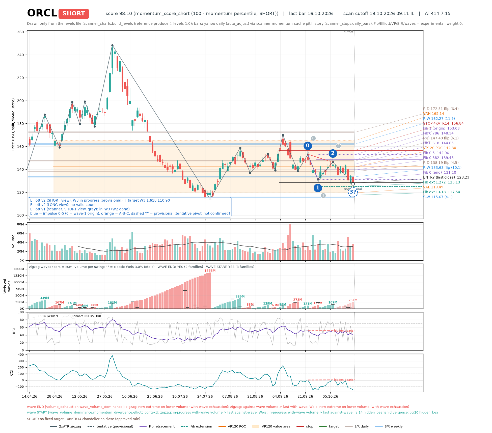
- Jev (typesafe/jev-1.13): 15 כותרות · 0 בביטחון ≥0.8 (סומכים על Jev) · 3 הועברו ל-Claude לשיפוט (ביטחון נמוך או חשד למניפולציה; 0 חשודות, 0 הודעות חברה) · סנטימנט — · קטליזטור — · הסכמה עם Claude 2/3
- Grok (grok-4.3, חיפוש X של Grok): ✅ אישור · סנטימנט +0 · ביטחון medium · 6 פוסטים · אין חדשות שליליות ברורות ב-X נגד SHORT · חשבונות מאומתים: @CorneliaLake, @BondTerminal, @SigForseti, @nicole_kee62147, @OutaTimeMessiah
- Perplexity (perplexity/sonar-pro): ⚠️ דגל · Investor Day מתוכנן בתוך כ-30 יום והדוח הבא מוערך ל-14 בדצמבר, אך תאריך הדוחות אינו מאושר במקור רשמי שסופק. · קטליזטור: moderate (2026-10-28 https://finbold.com/wall-street-analyst-updates-oracle-stock-price-target/)
- ב-28 באוקטובר מתוכנן Investor Day, שעשוי לספק עדכונים על תחזיות הצמיחה, תשתיות הענן והוצאות ההון. ב-14 באוקטובר דווח כי השהיית הסכם חשמל לפרויקט Jupiter והמתנה לאישור צינור הובילו לחששות ביצועיים; במקביל, ירידה חדה במניה ב-15 באוקטובר נקשרה לחששות סביב אגח CoreWeave. · דוח הבא: 2026-12-14 (לא מאושר) · דגלים: תזרים מזומנים חופשי שלילי וסיכון מימון הקשור להוצאות ההון על תשתיות AI. / עומס חוב מוגבר וחששות ביצועיים סביב פרויקט Jupiter, כולל הסכם חשמל שהושהה והמתנה לאישור צינור. / תחזית החברה ל-FY2027 נותרה על הכנסות של לפחות 90 מיליארד דולר ו-EPS מתואם של 8.10 דולר; המקורות שסופקו אינם מצביעים על קיצוץ תחזית.
- Claude, אנליסט (anthropic/claude-sonnet-4.5): ביטחון 55/100 · ניטרלי · סיכון: oversold קיצוני ואפשרות לחדשות חיוביות מ-Investor Day ב-28 באוקטובר
- תזה: המומנטום החלש, הספירה האליוטית לגל 3 ירידה, והקטליסטים השליליים (פרויקט Jupiter, חששות CoreWeave) תומכים בשורט. עם זאת, המניה כבר ירדה 6.1% ב-15 יום האחרונים והאינדיקטורים ב-oversold, מה שמגביר סיכון לריבאונד טכני. · טכני (מהגרף): המניה בירידה חדה מתחת לכל הממוצעים (SMA20/50/200), עם מומנטום חלש מאוד (ציון 1.9) ו-RSI/CCI בשטח oversold. הספירה האליוטית מציעה תחילת גל 3 ירידה עם יעד 110.90, והמחיר נמצא מעל POC ה-VP120 אך מתחת ל-VAH, עם התנגדות שבועית חזקה ב-133.63.
- GPT, פרקליט השטן (openai/gpt-5.6-sol): ⚠️ דגל · הסיכון הגדול: ריבאונד חד ממכירות־יתר סביב Investor Day · המגמה דובית, אך מכירות־יתר, תמחור יחסי נמוך וקטליזטור חיובי אפשרי יוצרים סיכון ממשי לשורט מאוחר.
- נגד התזה של Claude: החולשה המרכזית היא ההסתמכות על גל 3 זמני ועל כותרות שליליות אחרי שהירידה כבר התרחשה.
- האם הגרף נראה נכון? (ניסיוני): Grok: no: ספירת אליוט ו-Fib נראות תקינות · Perplexity: no: הספירה, עוגן פיבונאצ'י ורמות התמיכה/התנגדות נראים סבירים ביחס למבנה הירידה והפיבוטים המוצגים, אף שספירת הגל הנוכחית מסומנת כפרוביזורית. · Claude: no: הספירה האליוטית והעיגון הפיבונאצ'י נראים סבירים; W2 הסתיים בהיגיון ו-W3 מתחיל מנקודה הגיונית · GPT: yes: ספירת גל 3 מסומנת כזמנית ואינה משכנעת מול סימני מיצוי הנפח והתמיכה השבועית הסמוכה. · קלט: grok=img pplx=img claude=img gpt=img
- אתגור הדדי: Claude 55 (neutral) מול GPT flag: מעורב
2. UBER – שורט · דירוג 94.4
- רמות (קובץ הרמות, נר אחרון 2026-10-16, hash ca09061b8931f05a): כניסה 70.35 · סטופ 77.88 (chandelier_close 4.0xATR14, ATR14=1.8819) · יעד: אין – ללא יעד קבוע - שנדלייר 4xATR14 על סגירה (כלל מאושר)
- טכני: SMA20 69.67 · SMA50 73.10 · SMA200 74.21 · מומנטום 12-1 -0.250 · RSI14 48.4 · CCI20 79
- ניסיוני (משקל 0): אליוט v2: W2 in progress (provisional) · אליוט v1: no valid count · פיבו v2 82.36→67.22 (1.618=57.86) · VP120 POC 71.34 (VAH 75.24, VAL 68.80) · תמיכה 69.35 · התנגדות 72.03 · סוף גל: 1 משפחות (momentum_divergence) · תחילת גל: 0 (—)
- דוח: מותר - דוח בעוד 13 ימי מסחר · מקורות: 2026-11-04 (Yahoo calendar); 2026-11-04 (Perplexity (מאושר, עם מקורות))
- סוויפ נזילות (ייחוס בלבד, משקל 0): לא
- ספירלת פיבו – יעדי ייחוס בלבד (משקל 0, לא משנה סטופ/יעד; השורט נשאר עם סטופ נגרר 4×ATR בלי יעד): T1 — (—) · T2 — (—) · מצב: none
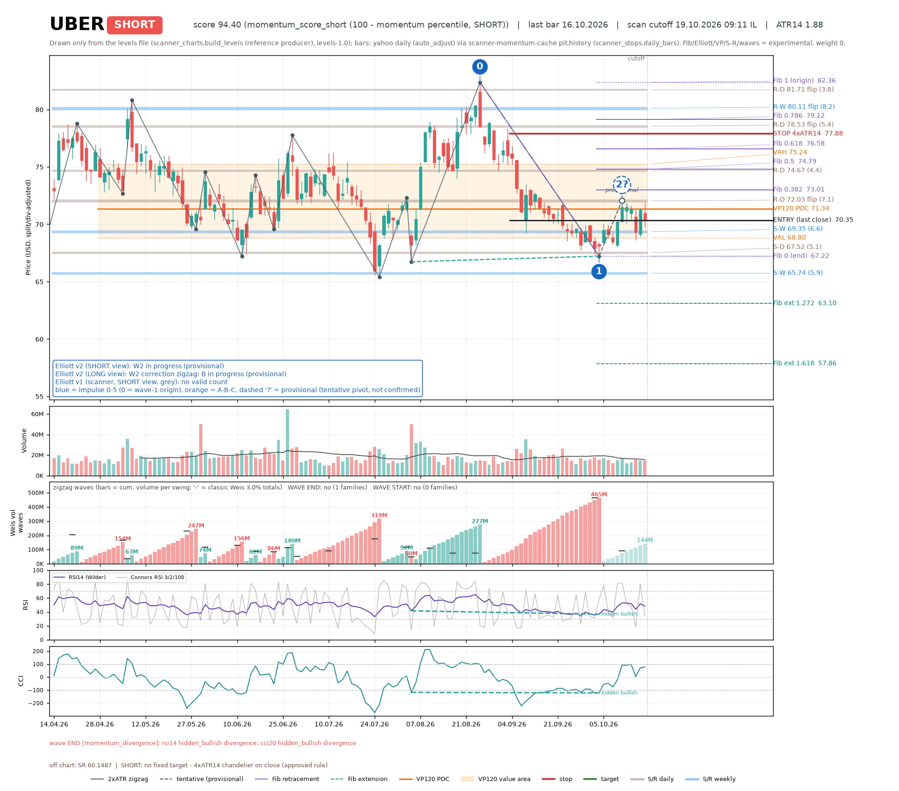
- Jev (typesafe/jev-1.13): 8 כותרות · 0 בביטחון ≥0.8 (סומכים על Jev) · 4 הועברו ל-Claude לשיפוט (ביטחון נמוך או חשד למניפולציה; 0 חשודות, 0 הודעות חברה) · סנטימנט — · קטליזטור — · הסכמה עם Claude 3/4
- Grok (grok-4.3, חיפוש X של Grok): ✅ אישור · סנטימנט +0 · ביטחון low · 7 פוסטים · אין סיבה ברורה נגד השורט מה-X · חשבונות מאומתים: @contrarianpath, @aurelian_vale
- Perplexity (perplexity/sonar-pro): ⚠️ דגל · למרות שהמומנטום הטכני חלש יחסית, הדוח המתוזמן ל-4 בנובמבר נמצא בתוך חלון ההחזקה ומהווה אירוע בינארי קרוב. · קטליזטור: moderate (2026-11-04 https://investor.uber.com/news-events/news/press-release-details/2026/Uber-Announces-Date-of-Third-Quarter-2026-Results-Conference-Call/default.aspx)
- הדוח לרבעון השלישי ושיחת הוועידה מתוכננים ל-4 בנובמבר 2026, בתוך חלון ההחזקה ולכן מהווים אירוע בינארי קרוב. ב-14 הימים האחרונים נרשמו עדכוני אנליסטים חיוביים ותוכניות להרחבת פעילות הרכב האוטונומי, אך לא נמצא אירוע חתום וברור בעוצמה גבוהה. · דוח הבא: 2026-11-04 · דגלים: הדוח הקרוב נמצא בתוך כ-15 ימי המסחר, ולכן קיים סיכון בינארי משמעותי לשורט. / מקור מחקרי מציין קנס רגולטורי גדול בהולנד וסיכונים סביב קשרי Uber עם Waymo. / Uber Freight ממשיכה להיות לא רווחית לפי מקור המחקר שנבדק.
- Claude, אנליסט (anthropic/claude-sonnet-4.5): ביטחון 35/100 · ניטרלי · סיכון: דוח רבעוני בעוד 13 ימים עם ציפיות אנליסטים חיוביות
- תזה: השורט מסתמך על מומנטום חלש קיצוני ומיקום מתחת לכל הממוצעים, אך הדיברגנציה הבוליש הנסתרת והדוח הקרוב (13 ימים) יוצרים סיכון בינארי גבוה מול סנטימנט אנליסטים חיובי ויעדי מחיר גבוהים משמעותית (90-125). · טכני (מהגרף): המחיר ב-70.35 נמצא בתוך ה-VA של VP120 (68.80-75.24), מעט מתחת ל-POC 71.34, עם מומנטום חלש מאוד (5.6) ומתחת לכל הממוצעים. דיברגנציה בוליש נסתרת ב-RSI ו-CCI מעידה על לחץ מכירה מתמצה, וה-bearish harami מציע היסוס לפני הדוח.
- GPT, פרקליט השטן (openai/gpt-5.6-sol): ⚠️ דגל · הסיכון הגדול: דוח קרוב עם ציפיות אנליסטים חיוביות · המומנטום החלש תומך בשורט, אך התמיכה הקרובה, הדיברגנציה השורית והדוח יוצרים סיכון נגדי מהותי.
- נגד התזה של Claude: הטענה שהמחיר מתחת לכל הממוצעים שגויה, משום שהוא מעל SMA20.
- האם הגרף נראה נכון? (ניסיוני): Grok: n/a: אין מידע על ספירה טכנית בפוסטים · Perplexity: yes: הספירה מסומנת בעצמה כפרוביזורית, והתרשים מציג התאוששות מהשפל האחרון לצד RSI ו-CCI עם סטייה שורית חבויה, ולכן איני מסכים שהספירה הקצרה המאושרת מספקת בסיס טכני חד-משמעי. · Claude: no: הספירה הזמנית W2 והעיגון הפיבונאצ'י מ-82.36 ל-67.22 נראים הגיוניים על הגרף, וה-S/R מזוהים נכון · GPT: yes: ספירת W2 מסומנת כזמנית ללא ספירה תקפה, והדיברגנציה השורית מחלישה את הפרשנות הדובית. · קלט: grok=img pplx=img claude=img gpt=img
- אתגור הדדי: Claude 35 (neutral) מול GPT flag: מעורב
3. MRK – לונג · דירוג 91.6
- רמות (קובץ הרמות, נר אחרון 2026-10-16, hash ed91f196af434981): כניסה 145.95 · סטופ 130.51 (chandelier_close 4.0xATR14, ATR14=3.8599) · יעד: 160.52 – חצי ב-Fib 1.618 (סגירה), השאר בשנדלייר 4xATR
- טכני: SMA20 145.74 · SMA50 144.68 · SMA200 123.57 · מומנטום 12-1 0.801 · RSI14 52.2 · CCI20 16
- ניסיוני (משקל 0): אליוט v2: W4 correction zigzag: C done -> W5 may start · אליוט v1: no valid count · פיבו v2 125.48→156.00 (1.618=174.86) · VP120 POC 146.59 (VAH 156.00, VAL 119.37) · תמיכה 142.32 · התנגדות 152.74 · סוף גל: 1 משפחות (wave_volume_dominance) · תחילת גל: 2 (volume_exhaustion,wave_volume_dominance)
- דוח: מותר - דוח בעוד 9 ימי מסחר · מקורות: 2026-10-29 (Yahoo calendar); 2026-10-29 (Perplexity (מאושר, עם מקורות))
- סוויפ נזילות (ייחוס בלבד, משקל 0): לא · עבר בדיקה, שביר, משקל 0
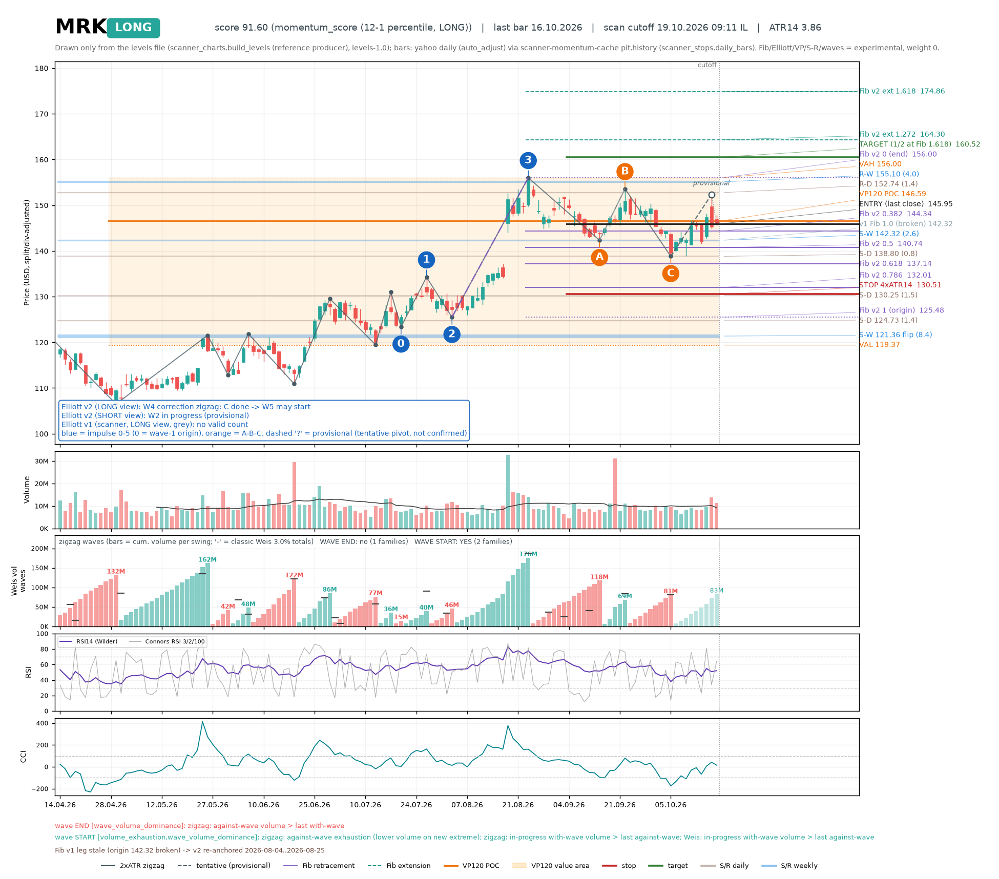
- Jev (typesafe/jev-1.13): 13 כותרות · 1 בביטחון ≥0.8 (סומכים על Jev) · 3 הועברו ל-Claude לשיפוט (ביטחון נמוך או חשד למניפולציה; 0 חשודות, 1 הודעות חברה) · סנטימנט שלילי (-1.00) · קטליזטור analyst · הסכמה עם Claude 1/3
- Grok (grok-4.3, חיפוש X של Grok): ✅ אישור · סנטימנט +1 · ביטחון medium · 10 פוסטים · סנטימנט X חיובי/נייטרלי לסקטור ול-MRK ללא חדשות שליליות · חשבונות מאומתים: —
- Perplexity (perplexity/sonar-pro): ⚠️ דגל · הדוח ב-29 באוקטובר נמצא בתוך כ-15 ימי המסחר הקרובים, ובנוסף קיים אירוע אונקולוגי בינארי ב-26 באוקטובר. · קטליזטור: strong (2026-10-29 https://www.merck.com/events/q3-2026-earnings-call/)
- הדוח לרבעון השלישי מתוכנן ל-29 באוקטובר, ולכן הוא אירוע קרוב ובינארי במיוחד לפוזיציית לונג. החברה צפויה להציג נתוני Phase 3 ראשונים באונקולוגיה במסגרת ESMO 2026, וכן לקיים אירוע משקיעים באונקולוגיה ב-26 באוקטובר; נתונים אלה עשויים להשפיע על הערכת הצמיחה העתידית. · דוח הבא: 2026-10-29 · דגלים: הדוח הקרוב נמצא בתוך חלון ההחזקה הצפוי, עם סיכון לתגובה חדה לתוצאות ולתחזית. / תחזית FY 2026 שדווחה היא EPS של 2.660–2.760, וההערכות לשנת 2026 נסחפו נמוך יותר בשל חיובים הקשורים לרכישה. / קיימת אי-ודאות רגולטורית ופייפליין: נתוני Phase 3 קרובים עלולים להיות בינאריים, בעוד שהתמונה האנליטית מעורבת עם כמה הורדות יעד.
- Claude, אנליסט (anthropic/claude-sonnet-4.5): ביטחון 45/100 · ניטרלי · סיכון: דוח רבעוני בעוד 9 ימים עם פוטנציאל לתנודתיות חדה ושינוי כיוון
- תזה: הספירה האליוטית מצביעה על השלמת תיקון והתחלת גל 5, עם תמיכה ב-142.32 ויעד פיבונאצ'י ב-160.52. עם זאת, הדוח הקרוב והנתונים הקליניים יוצרים סיכון בינארי משמעותי, והפונדמנטלים חלשים עם P/E קיצוני ו-EPS יורד. · טכני (מהגרף): המניה נמצאת בתיקון זיגזג (ABC) שהושלם ליד POC ה-VP120 (146.59), עם אינדיקציה לתחילת גל 5 עולה. המחיר נסגר מעל SMA20/50, מומנטום חזק (91.6), אך RSI ניטרלי (52) ו-CCI חלש (16) מעידים על חוסר דחף מיידי.
- GPT, פרקליט השטן (openai/gpt-5.6-sol): ⚠️ דגל · הסיכון הגדול: אירועי דוח ונתונים קליניים בינאריים בתוך חלון ההחזקה · המומנטום היחסי חיובי, אך אין אישור טכני מספק מול תמחור קיצוני וסיכון אירועים בינארי קרוב.
- נגד התזה של Claude: החולשה המרכזית היא ההסתמכות על תחילת גל 5 אף שהספירה החלופית אינה תקפה והפיבוט האחרון מסומן כזמני.
- האם הגרף נראה נכון? (ניסיוני): Grok: no: ספירת אליוט ופיב נראות תואמות את הגרף · Perplexity: no: הספירה הראשית, עוגן הפיבונאצ׳י ורמות התמיכה/התנגדות נראים עקביים באופן סביר עם מבנה המחיר המוצג. · Claude: no: ספירת הזיגזג ABC נראית סבירה עם C שהושלם ליד POC, והעיגון של פיבונאצ'י v2 מ-125.48 ל-156.00 הגיוני · GPT: yes: גל 5 טרם אושר חזותית, והיעד מבוסס על פיבונאצ'י מיושן שאינו תואם לעיגון המחודש. · קלט: grok=img pplx=img claude=img gpt=img
- אתגור הדדי: Claude 45 (neutral) מול GPT flag: מעורב
4. ADI – לונג · דירוג 85.0
- רמות (קובץ הרמות, נר אחרון 2026-10-16, hash 00f9e289203a469f): כניסה 395.44 · סטופ 347.39 (chandelier_close 4.0xATR14, ATR14=12.01) · יעד: 468.82 – חצי ב-Fib 1.618 (סגירה), השאר בשנדלייר 4xATR
- טכני: SMA20 401.63 · SMA50 382.92 · SMA200 364.57 · מומנטום 12-1 0.542 · RSI14 49.7 · CCI20 -2
- ניסיוני (משקל 0): אליוט v2: W2 in progress (provisional) · אליוט v1: no valid count · פיבו v2 348.00→422.67 (1.618=468.82) · VP120 POC 391.45 (VAH 417.52, VAL 369.24) · תמיכה 381.03 · התנגדות 396.66 · סוף גל: 0 משפחות (—) · תחילת גל: 1 (volume_exhaustion)
- דוח: מותר - דוח בעוד 27 ימי מסחר · מקורות: 2026-11-24 (Yahoo calendar); 2026-11-24 (Perplexity (מאושר, עם מקורות))
- סוויפ נזילות (ייחוס בלבד, משקל 0): לא · עבר בדיקה, שביר, משקל 0
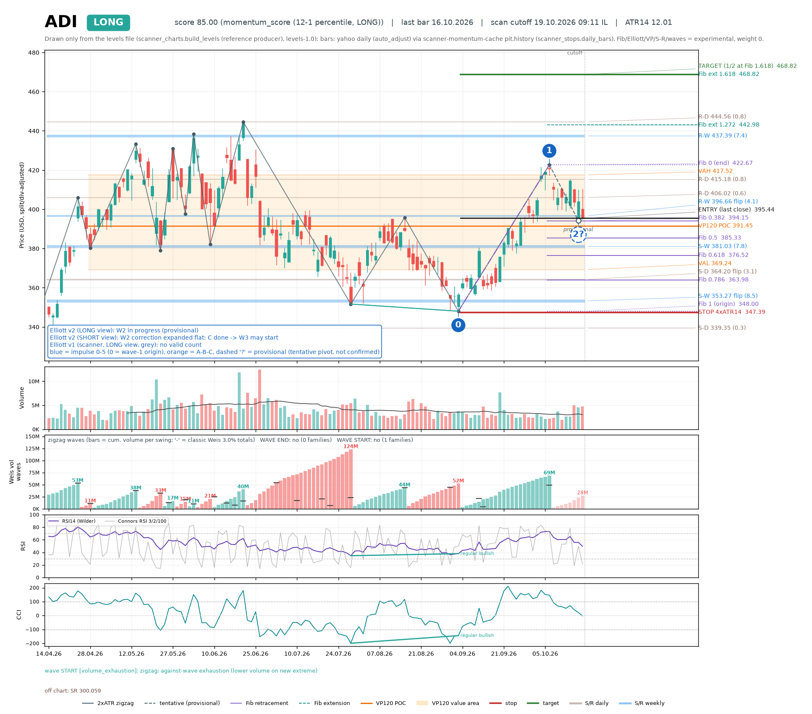
- Jev (typesafe/jev-1.13): 6 כותרות · 0 בביטחון ≥0.8 (סומכים על Jev) · 5 הועברו ל-Claude לשיפוט (ביטחון נמוך או חשד למניפולציה; 0 חשודות, 0 הודעות חברה) · סנטימנט — · קטליזטור — · הסכמה עם Claude 4/5
- Grok (grok-4.3, חיפוש X של Grok): ✅ אישור · סנטימנט +0 · ביטחון low · 7 פוסטים · אין חדשות שליליות ב-X · חשבונות מאומתים: —
- Perplexity (perplexity/sonar-pro): ✅ אישור · אין דוחות בתוך כ־15 ימי המסחר הקרובים ולא נמצא אירוע בינארי קרוב או דגל אדום מהותי במקורות שנבדקו. · קטליזטור: weak
- מועד הדוחות הבא מופיע ל־24 בנובמבר 2026, ולכן הוא נמצא מעבר לחלון של 30 הימים הקרובים. ב־14 הימים האחרונים לא נמצא אירוע תאגידי ספציפי וחזק; עדכוני האנליסטים היו חיוביים, אך אינם קטליזטור ודאי. · דוח הבא: 2026-11-24 · דגלים: הדוחות הבאים מתוכננים ל־24 בנובמבר 2026, מעבר ל־15 ימי המסחר הקרובים אך בתוך אופק החזקה של כמה שבועות. / ההנחיה המדווחת לרבעון הרביעי היא טווח EPS של 3.710–4.010; לא נמצא מקור להעלאת הנחיה חדשה ב־30 הימים האחרונים. / לא נמצא במידע שנאסף דגל אדום מאומת בנושא חשבונאות, ליטיגציה, דילול, חוב או רגולציה.
- Claude, אנליסט (anthropic/claude-sonnet-4.5): ביטחון 48/100 · ניטרלי · סיכון: כישלון מתחת ל-POC (391.45) או 0.5 פיבו (385.34) יבטל את ספירת W2 ויחשוף לירידה נוספת
- תזה: המומנטום גבוה (85) והמבנה הטכני תומך בהמשך עלייה אם W2 הושלם ליד 0.382 פיבו; עם זאת, המניה נמצאת בטווח צר מתחת ל-SMA20 ללא אישור פריצה, והיעדר קטליזטור קרוב מחליש את הטיימינג. · טכני (מהגרף): המניה נסגרה ב-395.44 מעל SMA50 (382.92) אך מתחת ל-SMA20 (401.63), בתוך ה-VA של VP120. אליוט v2 מציע W2 פרובזיונלי לאחר שיא ב-422.67, עם תיקון פיבונאצ'י עד כעת ל-0.382 (394.15); RSI ניטרלי ב-49.74 ו-CCI קרוב לאפס, מה שמעיד על חוסר מומנטום ברור.
- GPT, פרקליט השטן (openai/gpt-5.6-sol): ⚠️ דגל · הסיכון הגדול: המשך תיקון W2 במקום תחילת גל עליות חדש · הצמיחה והמגמה הבינונית תומכות, אך התזמון הטכני והקטליזטור אינם מאשרים כעת המשך עלייה.
- נגד התזה של Claude: החולשה המרכזית היא ההנחה ש־W2 הושלם, אף שהפיבוט טרם אושר והספירה פרוביזורית.
- האם הגרף נראה נכון? (ניסיוני): Grok: n/a: אין דיון ב-X על הגרף · Perplexity: yes: הספירה הראשית והעוגן נראים זמניים, והגל המסומן 2 עדיין מסומן כלא מאושר ולכן אין ודאות מספקת לאישור הספירה או רמות התמיכה. · Claude: no: עיגון הפיבו מ-348 ל-422.67 והספירה הפרובזיונלית של W2 סבירים בהתחשב בתיקון האחרון; S/R שבועי ב-396.66 תואם את אזור ההתנגדות הנוכחי. · GPT: yes: סימון סיום W2 אינו משכנע ללא פיבוט מאושר, במיוחד כשהמחיר עדיין מתחת ל־SMA20 וליד התנגדות שבועית. · קלט: grok=img pplx=img claude=img gpt=img
- אתגור הדדי: Claude 48 (neutral) מול GPT flag: מעורב
5. OXY – לונג · דירוג 77.6
- רמות (קובץ הרמות, נר אחרון 2026-10-16, hash 67e9737556af1d59): כניסה 62.38 · סטופ 56.28 (chandelier_close 4.0xATR14, ATR14=1.5246) · יעד: 67.78 – חצי ב-Fib 1.618 (סגירה), השאר בשנדלייר 4xATR
- טכני: SMA20 58.53 · SMA50 59.20 · SMA200 54.63 · מומנטום 12-1 0.444 · RSI14 63.8 · CCI20 128
- ניסיוני (משקל 0): אליוט v2: no valid count · אליוט v1: no valid count · פיבו v2 53.41→61.87 (1.618=67.09) · VP120 POC 58.42 (VAH 60.20, VAL 53.39) · תמיכה 60.42 · התנגדות 63.77 · סוף גל: 1 משפחות (wave_volume_dominance) · תחילת גל: 2 (volume_exhaustion,wave_volume_dominance)
- דוח: מותר - דוח בעוד 16 ימי מסחר · מקורות: 2026-11-09 (Yahoo calendar); 2026-11-09 (Perplexity (מאושר, עם מקורות))
- סוויפ נזילות (ייחוס בלבד, משקל 0): לא · עבר בדיקה, שביר, משקל 0
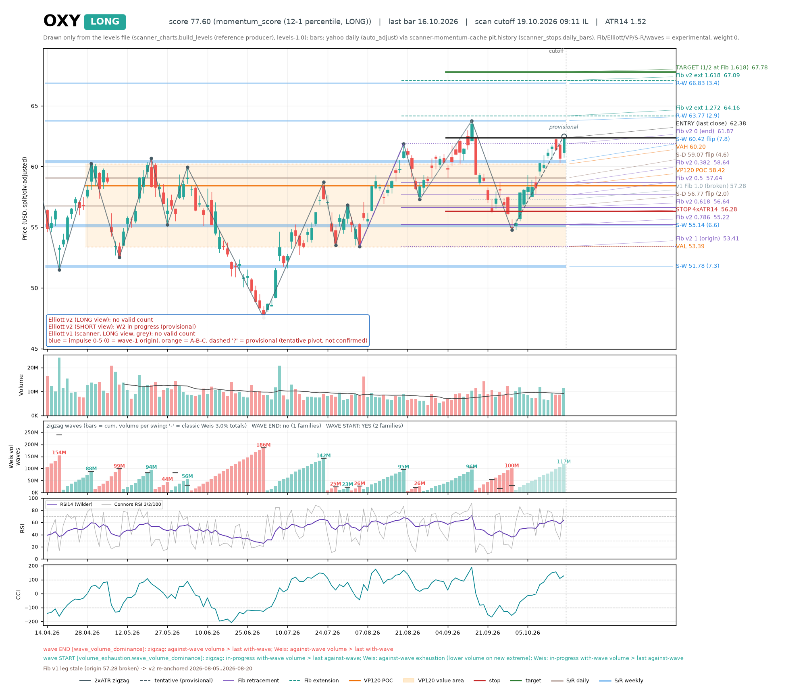
- Jev (typesafe/jev-1.13): 3 כותרות · 0 בביטחון ≥0.8 (סומכים על Jev) · 3 הועברו ל-Claude לשיפוט (ביטחון נמוך או חשד למניפולציה; 0 חשודות, 0 הודעות חברה) · סנטימנט — · קטליזטור — · הסכמה עם Claude 2/3
- Grok (grok-4.3, חיפוש X של Grok): ✅ אישור · סנטימנט +0 · ביטחון low · 0 פוסטים · אין חדשות שליליות ב-X · חשבונות מאומתים: —
- Perplexity (perplexity/sonar-pro): ⚠️ דגל · הדוחות ב־9 בנובמבר נמצאים בתוך אופק ההחזקה הקצר ולכן קיימת חשיפת אירוע בינארי משמעותית. · קטליזטור: strong (2026-11-09 https://finance.yahoo.com/quote/OXY/)
- מחיר הנפט הממומש של OXY ברבעון השלישי עלה ל־85.91 דולר לחבית, אך החברה דיווחה גם על השבתות זמניות במפרץ מקסיקו עקב מגבלת צינור ותחזוקה של צד שלישי. החברה צפויה לפרסם תוצאות לרבעון השלישי לאחר סגירת המסחר ב־9 בנובמבר, אירוע מהותי הנמצא בתוך אופק ההחזקה המתוכנן. · דוח הבא: 2026-11-09 · דגלים: הדוחות הקרובים כוללים סיכון אירועי משמעותי, והם צפויים בתוך כ־15 ימי מסחר. / השבתות זמניות במפרץ מקסיקו עקב מגבלת צינור ותחזוקה של צד שלישי עלולות לפגוע בהפקה. / קיימת חשיפה לתנודתיות במחירי הסחורות ולפגיעה אפשרית מהפסד של 94 מיליון דולר בגידור.
- Claude, אנליסט (anthropic/claude-sonnet-4.5): ביטחון 62/100 · תומך · סיכון: דוחות רבעון שלישי בעוד 16 ימים עם חשיפה להשבתות תפעוליות ותנודתיות מחירי נפט
- תזה: מומנטום חזק ותמיכה טכנית מוצקה תומכים בהמשך עלייה לטווח קצר, עם תמיכה מיעדי אנליסטים מוגברים. עם זאת, הדוחות הקרובים והסיכון התפעולי במפרץ מקסיקו מהווים סיכון אירועי משמעותי. · טכני (מהגרף): המניה בעלייה חזקה עם מומנטום 77.6, מעל כל הממוצעים הנעים (SMA20/50/200) ומעל אזור הערך VP120. RSI 63.76 ו-CCI 127.81 מצביעים על חוזק אך לא קניית יתר קיצונית; הכניסה ב-62.38 קרובה להתנגדות שבועית ב-63.77.
- GPT, פרקליט השטן (openai/gpt-5.6-sol): ⚠️ דגל · הסיכון הגדול: סיכון דוחות בינארי בשילוב פגיעה אפשרית בהפקה · החוזק הטכני קיים, אך איכות האישור חלשה וסיכוני האירוע והתפעול מהותיים.
- נגד התזה של Claude: התזה נשענת על מומנטום ויעדי מחיר למרות התנגדות קרובה, אינדיקטורים מתוחים ודירוגי אנליסטים מעורבים.
- האם הגרף נראה נכון? (ניסיוני): Grok: n/a: אין דעות משמעותיות ב-X · Perplexity: no: הספירה, עוגן פיבונאצ'י ורמות התמיכה וההתנגדות נראים סבירים ביחס למבנה המחיר המוצג, אף שספירת הגלים מסומנת כלא מאומתת. · Claude: n/a: אין ספירת אליוט תקפה מוצגת, רק Fib retracement שנראה סביר מהשפל האחרון · GPT: yes: אין ספירת אליוט תקפה, והיעד נשען על Fib v1 המסומן כמיושן במקום על העיגון המחודש. · קלט: grok=img pplx=img claude=img gpt=img
- אתגור הדדי: Claude 62 (supports) מול GPT flag: מעורב
6. AAVE – לונג (קריפטו) · דירוג 75.0
- רמות (קובץ הרמות, נר אחרון 2026-10-18, hash 5be92d68bd1d2618): כניסה 151.85 · סטופ 120.44 (fixed_close 3.0xATR14, ATR14=10.47) · יעד: אין – ללא יעד (כלל קריפטו מאושר) - סטופ קבוע 3xATR14 על סגירה יומית UTC
- טכני: SMA20 166.71 · SMA50 147.23 · SMA200 105.13 · מומנטום 12-1 0.374 · RSI14 45.5 · CCI20 -125
- ניסיוני (משקל 0): אליוט v2: W2 in progress (provisional) · אליוט v1: in_W4 (W3 done) · פיבו v2 134.95→187.50 (1.618=219.98) · VP120 POC 90.53 (VAH 133.76, VAL 82.35) · תמיכה 143.96 · התנגדות 162.19 · סוף גל: 3 משפחות (volume_exhaustion,wave_volume_dominance,momentum_divergence) · תחילת גל: 0 (—)
- דוח: n/a (crypto)
- סוויפ נזילות (ייחוס בלבד, משקל 0): לא
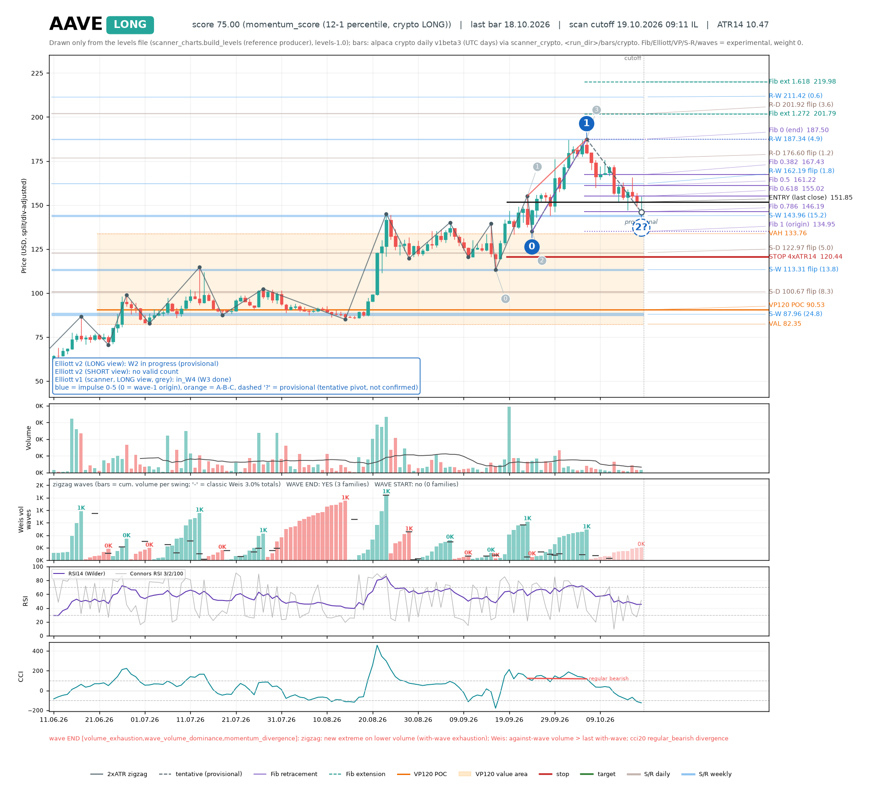
- Grok (סנטימנט ראשי לקריפטו) (grok-4.3, חיפוש X של Grok): ✅ אישור · סנטימנט +1 · ביטחון medium · 10 פוסטים · סנטימנט חיובי כללי ללא סיבה לווטו · חשבונות מאומתים: @Flowslikeosmo, @Freddie57829294, @periskop007, @iambroots, @BaseWhaleAlert
- Jev (typesafe/jev-1.13): 2 כותרות · 0 בביטחון ≥0.8 (סומכים על Jev) · 0 הועברו ל-Claude לשיפוט (ביטחון נמוך או חשד למניפולציה; 0 חשודות, 0 הודעות חברה) · סנטימנט — · קטליזטור —
- Perplexity (perplexity/sonar-pro): ⚠️ דגל · אין דוחות רווחים בקריפטו, אך קיימים אירועי ממשל קרובים ולחץ היצע אפשרי ולכן העסקה דורשת זהירות. · קטליזטור: moderate (2026-10-07 https://aave.com/docs/resources/changelog)
- ב-2026-10-07 הושק Aave V4 ב-Base עם Hub למניות טכנולוגיה, וב-2026-10-14 הוגשה הצעה לקבלת ביטקוין מקורי כבטוחה; שניהם עשויים לתמוך באימוץ אך אינם אישור סופי. במקביל, הצעה מ-2026-10-17 מבקשת לסגור שש פריסות בלוקצ'יין ולהסיר 50 שווקים בעלי שימוש נמוך, בעוד שמשקיע העביר 8,088 AAVE ל-FalconX — לחץ היצע אפשרי. · דוח הבא: — · דגלים: הצעה לסגור שש רשתות ולהסיר 50 שווקים בעלי שימוש נמוך. / העברת 8,088 AAVE מ-Coinbase ל-FalconX עשויה להעיד על כוונת מכירה. / TVL התאושש אך עדיין נמוך ב-31% מהרמה שלפני exploit של KelpDAO.
- Claude, אנליסט (anthropic/claude-sonnet-4.5): ביטחון 45/100 · ניטרלי · סיכון: לחץ מכירה מהעברת 8,088 AAVE ל-FalconX והצעה לצמצום 50 שווקים
- תזה: הכניסה ב-151.85 קרובה לתמיכה טכנית ולרמת פיבונאצ'י 0.618, עם סימני תשישות נפחית שעשויים לאותת על תחתית. עם זאת, המומנטום חלש, המחיר מתחת ל-SMA20, והקטליסטים מעורבים עם סיכוני היצע ממשיים. · טכני (מהגרף): המחיר ב-151.85 נמצא בתיקון מתחת ל-SMA20 (166.71) אך מעל SMA50 (147.23), בקרבת רמת פיבונאצ'י 0.618 (155.02) ומעל תמיכה שבועית ב-143.96. RSI ב-45.48 ו-CCI שלילי ב-124.55 מצביעים על חולשה לטווח קצר, אך סיום גל עם סימני תשישות נפחית ודיברגנציה שלילית ב-CCI עשויים לאותת על תחתית פוטנציאלית.
- GPT, פרקליט השטן (openai/gpt-5.6-sol): ⚠️ דגל · הסיכון הגדול: המשך התיקון ולחץ היצע לפני אישור תחתית · החולשה הטכנית והסיכונים הבסיסיים ממשיים, בעוד שתזת התחתית נשענת על ספירה זמנית.
- נגד התזה של Claude: האנליסט מפרש תשישות ודיברגנציה כתחתית אפשרית אף שהן מסמנות סיום גל קודם ואין אות לתחילת גל חדש.
- האם הגרף נראה נכון? (ניסיוני): Grok: no: ספירת Elliott ו-Fib נראים תקינים · Perplexity: no · Claude: no: ספירת אליוט v2 (W2 זמני) והעיגון לפיבונאצ'י מ-134.95 ל-187.5 נראים סבירים; רמות S/R תואמות את המבנה הנראה · GPT: yes: ספירת W2 אינה מאושרת, מתנגשת עם תווית W4 החלופית, והגרף אינו מציג עדיין היפוך ברור. · קלט: grok=img pplx=img claude=img gpt=img
- אתגור הדדי: Claude 45 (neutral) מול GPT flag: מעורב
7. LLY – לונג · דירוג 74.8
- רמות (קובץ הרמות, נר אחרון 2026-10-16, hash fc7b09e7c4163012): כניסה 1,257.03 · סטופ 1,113.85 (chandelier_close 4.0xATR14, ATR14=35.80) · יעד: 1,319.84 – חצי ב-Fib 1.618 (סגירה), השאר בשנדלייר 4xATR
- טכני: SMA20 1,178.76 · SMA50 1,180.17 · SMA200 1,077.69 · מומנטום 12-1 0.403 · RSI14 68.6 · CCI20 277
- ניסיוני (משקל 0): אליוט v2: W2 correction zigzag: C done -> W3 may start · אליוט v1: no valid count · פיבו v2 1,113.29→1,215.00 (1.618=1,277.86) · VP120 POC 1,154.76 (VAH 1,239.27, VAL 1,096.93) · תמיכה 1,240.89 · התנגדות 1,292.65 · סוף גל: 1 משפחות (momentum_divergence) · תחילת גל: 3 (volume_exhaustion,wave_volume_dominance,momentum_divergence)
- דוח: מותר - דוח בעוד 9 ימי מסחר · מקורות: 2026-10-29 (Yahoo calendar); 2026-10-29 (Perplexity (מאושר, עם מקורות))
- סוויפ נזילות (ייחוס בלבד, משקל 0): לא · עבר בדיקה, שביר, משקל 0
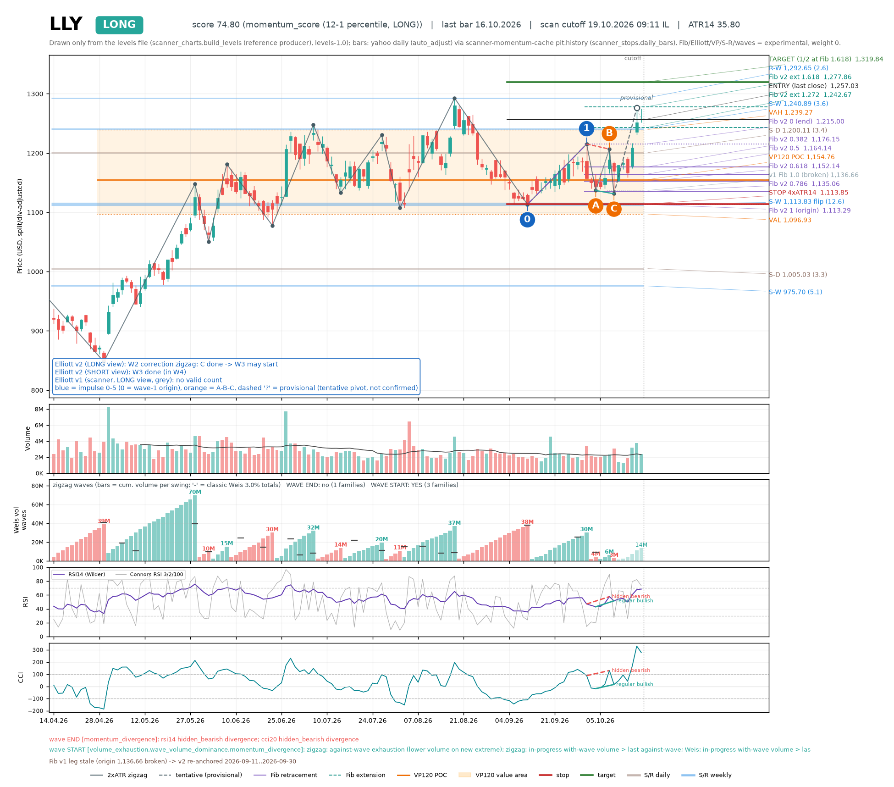
- Jev (typesafe/jev-1.13): 15 כותרות · 1 בביטחון ≥0.8 (סומכים על Jev) · 7 הועברו ל-Claude לשיפוט (ביטחון נמוך או חשד למניפולציה; 0 חשודות, 1 הודעות חברה) · סנטימנט חיובי (+1.00) · קטליזטור product · הסכמה עם Claude 5/7
- Grok (grok-4.3, חיפוש X של Grok): ✅ אישור · סנטימנט +0 · ביטחון low · 0 פוסטים · אין סנטימנט שלילי ב-X נגד LONG · חשבונות מאומתים: —
- Perplexity (perplexity/sonar-pro): ⚠️ דגל · הדוחות המאושרים ל-29 באוקטובר נמצאים בתוך חלון ההחזקה הקרוב ועלולים ליצור תנודתיות בינארית משמעותית. · קטליזטור: strong (2026-10-29 https://investor.lilly.com/news-releases/news-release-details/lilly-confirms-date-and-conference-call-third-quarter-2026)
- האירוע המרכזי הקרוב הוא פרסום תוצאות הרבעון השלישי ב-29 באוקטובר 2026, שאושר על ידי לילי. במהלך 14 הימים האחרונים לא נמצא מקור לאירוע חברה ספציפי נוסף בעוצמה דומה; בחלון 30 הימים הקרוב, דוחות הרבעון הם הקטליזטור העיקרי. · דוח הבא: 2026-10-29 · דגלים: דוחות הרבעון השלישי מתפרסמים בתוך כ-15 ימי מסחר, ולכן קיימת חשיפה לאירוע בינארי קרוב. / תחזיות יעדי המחיר בין האנליסטים מפוזרות, עם טווח יעד נמוך של 930 וגבוה של 1600. / לא נמצא במקורות שנאספו מידע מאומת על שינוי תחזית, ליטיגציה, דילול, חוב או סוגיה רגולטורית חדשה בחלון הבדיקה.
- Claude, אנליסט (anthropic/claude-sonnet-4.5): ביטחון 52/100 · ניטרלי · סיכון: חשיפה לדוח רבעוני בעוד 9 ימי מסחר עם דיברגנציה נסתרת דובית
- תזה: הסטאפ מנסה לתפוס גל 3 אליוטי לאחר תיקון ABC שהושלם, עם קטליזטורים חיוביים (אישור אירופאי, תוצאות מוצר) ומומנטום טכני חזק. עם זאת, הדיברגנציה הנסתרת הדובית והקרבה לדוח רבעוני (9 ימים) מהווים סיכון בינארי משמעותי. · טכני (מהגרף): המניה סיימה תיקון זיגזג ABC ליד POC של VP120 וכעת מנסה לפרוץ מעל VAH (1239). המומנטום חיובי עם RSI 68.6 ו-CCI 277, אך קיימת דיברגנציה נסתרת דובית בסיום הגל האחרון. הכניסה ב-1257 נמצאת מעל תמיכה שבועית ב-1240 אך מתחת להתנגדות שבועית ב-1292.
- GPT, פרקליט השטן (openai/gpt-5.6-sol): ⚠️ דגל · הסיכון הגדול: דוח בינארי קרוב מול סטאפ טכני מתוח ולא מאומת · המומנטום חיובי, אך התנגדות קרובה, סימני מיצוי ודוח בעוד 9 ימי מסחר מחלישים משמעותית את יחס הסיכון של הרעיון.
- נגד התזה של Claude: התזה חלשה בעיקר בהצגת תחילת גל 3 כאפשרות מהותית למרות ספירה חלופית לא תקפה, פריצה פרוביזורית ודיברגנציות דוביות.
- האם הגרף נראה נכון? (ניסיוני): Grok: n/a: אין פוסטים רלוונטיים · Perplexity: yes: הספירה והעוגנים נראים tentative, והמחיר קרוב להתנגדות אזורית לאחר עלייה חדה עם סימוני divergence דוביים ב-RSI וב-CCI. · Claude: no: ספירת האליוט v2 (ABC זיגזג שהושלם) והעיגון מחדש של פיבונאצ'י נראים הגיוניים על הגרף · GPT: yes: סיום ABC ותחילת גל 3 אינם משכנעים חזותית ללא פריצה מאושרת, בעוד שהעוגן החדש וההתנגדות השבועית מדגישים סיכון סמוך. · קלט: grok=img pplx=img claude=img gpt=img
- אתגור הדדי: Claude 52 (neutral) מול GPT flag: מעורב
8. AAPL – לונג · דירוג 71.0
- רמות (קובץ הרמות, נר אחרון 2026-10-16, hash e119de29ba403cda): כניסה 343.46 · סטופ 316.67 (chandelier_close 4.0xATR14, ATR14=6.6977) · יעד: 367.24 – חצי ב-Fib 1.618 (סגירה), השאר בשנדלייר 4xATR
- טכני: SMA20 337.42 · SMA50 325.69 · SMA200 292.14 · מומנטום 12-1 0.357 · RSI14 62.1 · CCI20 114
- ניסיוני (משקל 0): אליוט v2: W3 in progress (provisional) · אליוט v1: in_W3 (W2 done) · פיבו v2 309.90→345.34 (1.618=367.24) · VP120 POC 309.80 (VAH 335.10, VAL 289.41) · תמיכה 335.46 · התנגדות 344.99 · סוף גל: 2 משפחות (volume_exhaustion,momentum_divergence) · תחילת גל: 3 (wave_volume_dominance,momentum_divergence,elliott_context)
- דוח: מותר - דוח בעוד 11 ימי מסחר · מקורות: 2026-11-02 (Yahoo calendar)
- סוויפ נזילות (ייחוס בלבד, משקל 0): לא · עבר בדיקה, שביר, משקל 0
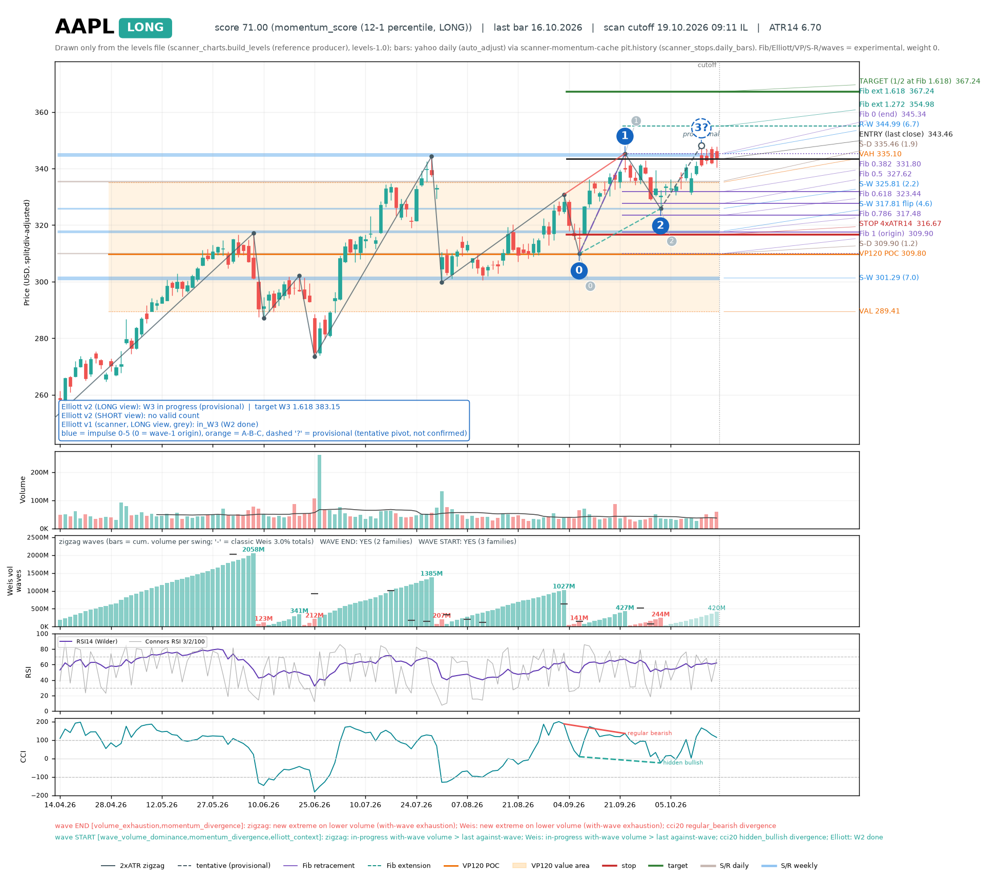
- Jev (typesafe/jev-1.13): 15 כותרות · 0 בביטחון ≥0.8 (סומכים על Jev) · 8 הועברו ל-Claude לשיפוט (ביטחון נמוך או חשד למניפולציה; 0 חשודות, 0 הודעות חברה) · סנטימנט — · קטליזטור — · הסכמה עם Claude 8/8
- Grok (grok-4.3, חיפוש X של Grok): ✅ אישור · סנטימנט +0 · ביטחון low · 10 פוסטים · אין סנטימנט שלילי ב-X · חשבונות מאומתים: —
- Perplexity (perplexity/sonar-pro): ⚠️ דגל · הדוחות הצפויים בתוך חלון של כ־15 ימי מסחר והם אירוע בינארי מהותי, לכן העסקה מסומנת בדגל. · קטליזטור: moderate (2026-10-29 https://www.marketbeat.com/instant-alerts/analyst-jpmorgan-chase-co-forecasts-strong-price-appreciation-for-apple-nasdaq-aapl-stock-2026-10-12/)
- הדוחות הצפויים ב־29 באוקטובר עשויים להיות הטריגר המרכזי, אך התאריך לא אושר רשמית על ידי אפל. בתקופה האחרונה נרשמה העלאת יעד של JPMorgan, לצד חששות מעלויות זיכרון, שחיקת המרווחים והאטה בצמיחת ה־App Store. · דוח הבא: 2026-10-29 (לא מאושר) · דגלים: תאריך הדוחות ב־29 באוקטובר מופיע בדיווחי שוק אך לא אושר על ידי אפל. / לחצי עלויות זיכרון ושחיקת המרווח הגולמי; תחזית ספטמבר מצביעה על מרווח אמצעי של 46.5%. / 14 אנליסטים הורידו תחזיות EPS לרבעון הרביעי לעומת 7 העלאות ב־30 הימים האחרונים.
- Claude, אנליסט (anthropic/claude-sonnet-4.5): ביטחון 62/100 · תומך · סיכון: כניסה בשיא היסטורי 11 ימים לפני דוח רווחים עם ציפיות גבוהות ולחצי מרווח
- תזה: הסטאפ תומך בפריצה לשיא חדש עם מומנטום חזק, ספירת אליוט תומכת ב-W3, וקטליסט iPhone Duo שנמכר תוך דקות. עם זאת, הכניסה בשיא היסטורי סמוך לדוח רווחים (11 ימים) עם סתירות בתאריכים ולחצי מרווח מהווה סיכון תזמון משמעותי. · טכני (מהגרף): המניה סיימה בשיא היסטורי 343.46 דולר, מעל כל הממוצעים הנעים (SMA20/50/200), עם RSI 62 ו-CCI 114 המצביעים על מומנטום חיובי אך לא קיצוני. הספירה האליוטית מציעה W3 בהתקדמות לעבר יעד 383 דולר, עם תמיכת דיברגנציה חבויה שורית ב-CCI ונפח דומיננטי בגל העולה.
- GPT, פרקליט השטן (openai/gpt-5.6-sol): ⚠️ דגל · הסיכון הגדול: אכזבת דוחות לאחר תמחור ציפיות גבוהות · המגמה חיובית, אך יחס הסיכונים נחלש בשל התנגדות קרובה, מיצוי מומנטום ואירוע רווחים בינארי.
- נגד התזה של Claude: הספירה השורית שעליה נשענת התזה עדיין זמנית וסותרת את אותות המיצוי והדיברגנציה הדובית.
- האם הגרף נראה נכון? (ניסיוני): Grok: n/a: אין מידע רלוונטי · Perplexity: no: הספירה הראשית של גל 3 לאחר גל 2 נראית סבירה, והעוגנים של פיבונאצ׳י ורמות התמיכה/התנגדות מתיישבים באופן סביר עם מבנה המחיר. · Claude: no: ספירת W3 נראית סבירה עם W1 ו-W2 מוגדרים היטב, עיגון פיבונאצ'י מ-309.9 ל-345.34 הגיוני, ורמות S/R תואמות את המבנה · GPT: yes: סימון W3 נשען על שיא זמני לא מאושר מול התנגדות שבועית, ולכן יעד ההרחבה אינו מבוסס דיו. · קלט: grok=img pplx=img claude=img gpt=img
- אתגור הדדי: Claude 62 (supports) מול GPT flag: מעורב
9. ABNB – לונג · דירוג 69.2
- רמות (קובץ הרמות, נר אחרון 2026-10-16, hash 547aaa0d75b6a5b6): כניסה 173.70 · סטופ 153.72 (chandelier_close 4.0xATR14, ATR14=4.9945) · יעד: 229.13 – חצי ב-Fib 1.618 (סגירה), השאר בשנדלייר 4xATR
- טכני: SMA20 162.10 · SMA50 172.79 · SMA200 145.00 · מומנטום 12-1 0.335 · RSI14 60.9 · CCI20 185
- ניסיוני (משקל 0): אליוט v2: W2 correction zigzag: B in progress (provisional) · אליוט v1: in_W3 (W2 done) · פיבו v2 135.72→193.45 (1.618=229.13) · VP120 POC 133.19 (VAH 168.29, VAL 129.88) · תמיכה 165.06 · התנגדות 178.84 · סוף גל: 2 משפחות (volume_exhaustion,wave_volume_dominance) · תחילת גל: 3 (climax,momentum_divergence,elliott_context)
- דוח: מותר - דוח בעוד 14 ימי מסחר · מקורות: 2026-11-05 (Yahoo calendar); 2026-11-05 (Perplexity (מאושר, עם מקורות))
- סוויפ נזילות (ייחוס בלבד, משקל 0): לא · עבר בדיקה, שביר, משקל 0
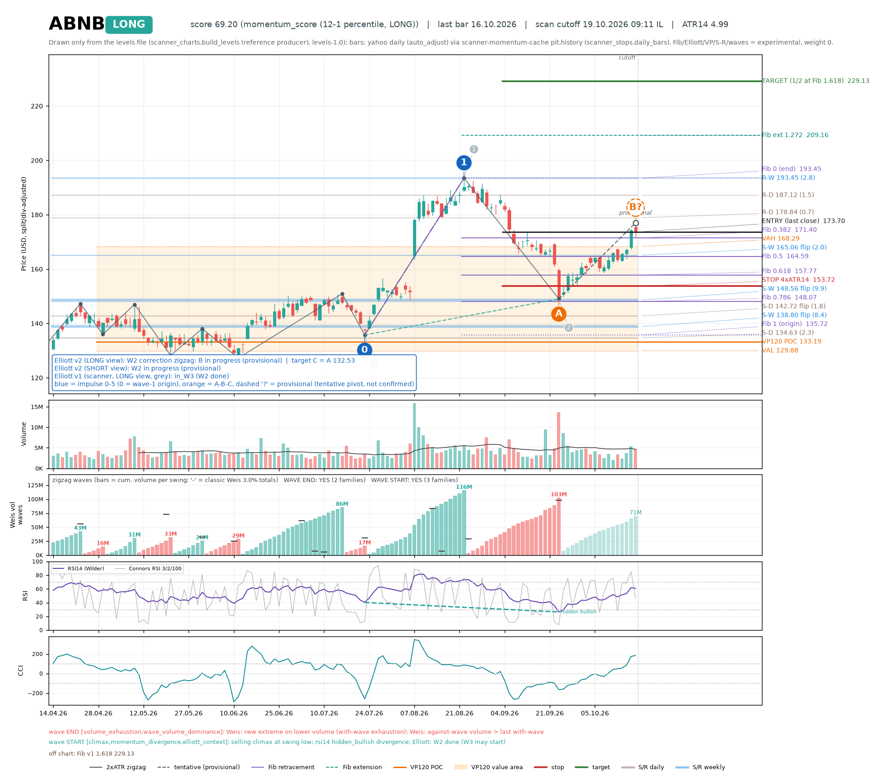
- Jev (typesafe/jev-1.13): 9 כותרות · 0 בביטחון ≥0.8 (סומכים על Jev) · 7 הועברו ל-Claude לשיפוט (ביטחון נמוך או חשד למניפולציה; 0 חשודות, 0 הודעות חברה) · סנטימנט — · קטליזטור — · הסכמה עם Claude 6/7
- Grok (grok-4.3, חיפוש X של Grok): ✅ אישור · סנטימנט +0 · ביטחון low · 1 פוסטים · אין סיבה ברורה ב-X נגד הלונג · חשבונות מאומתים: @currencyheatmap
- Perplexity (perplexity/sonar-pro): ⚠️ דגל · יש אירוע דוחות בינארי בתוך כ-15 ימי מסחר, ולכן העסקה מסומנת flag למרות שהקטליזטור המוצרי חיובי. · קטליזטור: strong (2026-11-05 https://finance.yahoo.com/markets/stocks/articles/keybanc-says-consider-buying-shares-173300759.html)
- החברה דיווחה על השקת תמחור דינמי בעדכון הסתיו, אירוע מוצרי ספציפי שעשוי לתמוך בצמיחה.[1] פרסום תוצאות הרבעון השלישי מתוכנן ל-5 בנובמבר 2026, בתוך חלון ההחזקה האפשרי ולכן הוא אירוע בינארי קרוב.[2] · דוח הבא: 2026-11-05 · דגלים: פרסום הדוחות ב-5 בנובמבר 2026 קרוב לטווח עסקת הסווינג, ולכן קיים סיכון לתנודתיות בינארית.[2] / Wells Fargo הורידה את תחזית צמיחת הלילות לרבעון השלישי ל-11.8% וציינה רוח נגד מאקרו ומגמות אפליקציה חלשות יותר.[4] / נמצאה אי-התאמה בין מקורות לגבי יעד הדוחות: מקור אחד מציין 4 בנובמבר ומקורות אחרים 5 בנובמבר; התאריך 5 בנובמבר נתמך במספר מקורות.[2][5]
- Claude, אנליסט (anthropic/claude-sonnet-4.5): ביטחון 52/100 · ניטרלי · סיכון: דוח רבעוני ב-5 בנובמבר בתוך חלון ההחזקה עם אזהרות אנליסטים על האטה
- תזה: הסט-אפ מציע כניסה לגל 3 אליוטי פוטנציאלי לאחר תיקון ABC שהושלם, עם מומנטום חיובי ותמיכה טכנית. עם זאת, הדוח הקרוב (14 ימים) והאזהרות של Wells Fargo לגבי האטה מאקרו מהוות סיכון משמעותי לתזמון. · טכני (מהגרף): המניה נסחרת מעל ממוצעים נעים מרכזיים (SMA20: 162.10, SMA50: 172.79) עם מומנטום חיובי (69.2) ו-RSI בריא (60.93). התיקון מנקודה 1 (193.45) לנקודה A (135.72) הושלם, והמחיר עבר את רמת הפיבונאצ'י 0.382 (171.40) בדרך לפריצה.
- GPT, פרקליט השטן (openai/gpt-5.6-sol): ⚠️ דגל · הסיכון הגדול: גל C יורד סביב הדוח הקרוב · המומנטום חיובי, אך מבנה הגלים, המיצוי והדוח הקרוב הופכים את הלונג לפגיע.
- נגד התזה של Claude: התזה נשענת על השלמת ABC אף שהספירה הראשית עדיין מסמנת גל B זמני וגל C אפשרי.
- האם הגרף נראה נכון? (ניסיוני): Grok: no: ספירה אליוט ורמות Fib/SR נראות תואמות · Perplexity: no: הספירה, עוגן פיבונאצ׳י ורמות התמיכה/התנגדות נראים עקביים ויזואלית עם הפיבוטים והמחיר, אף שהגל B מסומן כזמני. · Claude: no: ספירת אליוט v2 מציגה תיקון ABC הגיוני מנקודה 1, עם B זמני סביר והמחיר מעל רמות פיבונאצ'י מרכזיות · GPT: yes: ספירת W3 השורית אינה מתיישבת עם ספירת v2 הראשית והזמנית של B לפני C. · קלט: grok=img pplx=img claude=img gpt=img
- אתגור הדדי: Claude 52 (neutral) מול GPT flag: מעורב
10. AVGO – שורט · דירוג 69.2
- רמות (קובץ הרמות, נר אחרון 2026-10-16, hash b040be2641a4becc): כניסה 328.75 · סטופ 375.01 (chandelier_close 4.0xATR14, ATR14=11.57) · יעד: אין – ללא יעד קבוע - שנדלייר 4xATR14 על סגירה (כלל מאושר)
- טכני: SMA20 355.39 · SMA50 365.32 · SMA200 367.06 · מומנטום 12-1 -0.006 · RSI14 34.9 · CCI20 -211
- ניסיוני (משקל 0): אליוט v2: no valid count · אליוט v1: no valid count · פיבו v2 431.94→341.71 (1.618=285.94) · VP120 POC 363.18 (VAH 407.65, VAL 345.05) · תמיכה 323.87 · התנגדות 338.50 · סוף גל: 0 משפחות (—) · תחילת גל: 2 (volume_exhaustion,wave_volume_dominance)
- דוח: מותר - דוח בעוד 37 ימי מסחר · מקורות: 2026-12-09 (Yahoo calendar)
- סוויפ נזילות (ייחוס בלבד, משקל 0): לא
- ספירלת פיבו – יעדי ייחוס בלבד (משקל 0, לא משנה סטופ/יעד; השורט נשאר עם סטופ נגרר 4×ATR בלי יעד): T1 — (—) · T2 — (—) · מצב: none
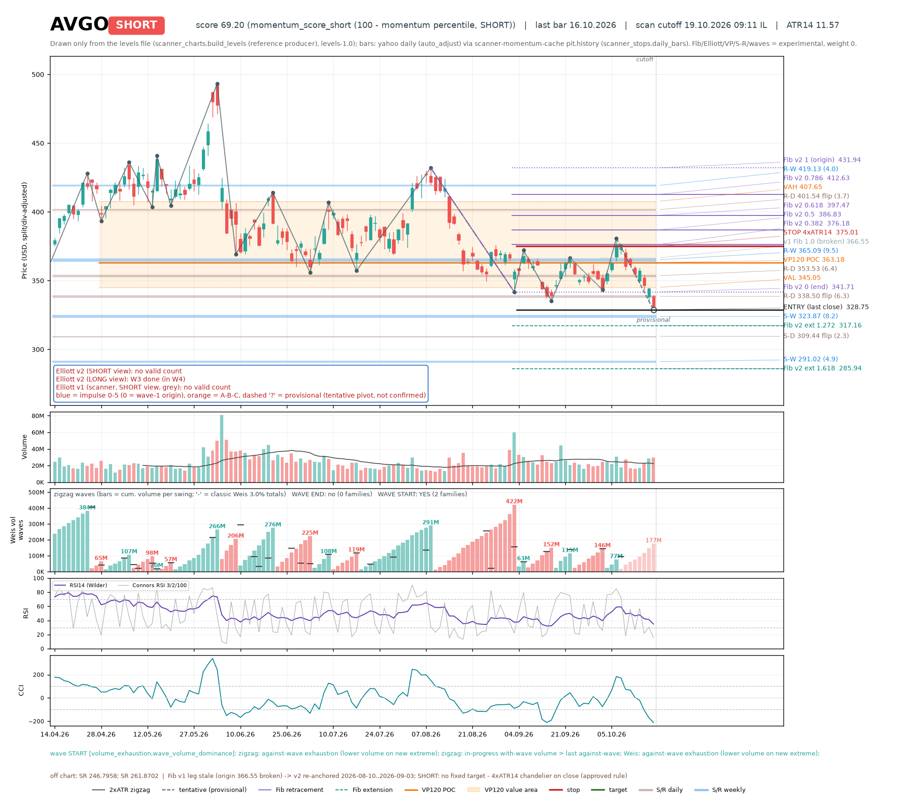
- Jev (typesafe/jev-1.13): 15 כותרות · 1 בביטחון ≥0.8 (סומכים על Jev) · 1 הועברו ל-Claude לשיפוט (ביטחון נמוך או חשד למניפולציה; 0 חשודות, 0 הודעות חברה) · סנטימנט שלילי (-1.00) · קטליזטור macro · הסכמה עם Claude 1/1
- Grok (grok-4.3, חיפוש X של Grok): ⚠️ דגל · סנטימנט +1 · ביטחון medium · 9 פוסטים · סנטימנט שורי ברוב הפוסטים · חשבונות מאומתים: @DimitryNakhla, @SalTradezz, @A_Najumi, @NYKrant
- Perplexity (perplexity/sonar-pro): ✅ אישור · מועד הדוחות המשוער נמצא מעבר לכ-15 ימי מסחר ואין מקור לאירוע בינארי קרוב, אך קיימת אי-ודאות מהותית סביב ההנחיות. · קטליזטור: moderate
- הקטליזטור המרכזי הוא דוח הרווחים הבא, הצפוי ב-10 בדצמבר 2026, אך התאריך טרם אושר רשמית. ב-14 הימים האחרונים פורסמו הערכות חיוביות לגבי צמיחת AI והתחייבויות רב-שנתיות, אך לא נמצא אירוע חברה חתום וברור ב-30 הימים הקרובים שעשוי להוות קטליזטור בינארי. · דוח הבא: 2026-12-10 (לא מאושר) · דגלים: קיימת אי-ודאות לגבי מועד הדוחות, כאשר המקורות מציגים הערכות שונות והתאריך לא אושר רשמית. / DA Davidson הורידה את יעד המחיר ל-350 דולר בשל חששות לגבי ההנחיה הקרובה להכנסות. / טווח יעדי המחיר רחב מאוד, והורדת יעד לצד הערכות חיוביות מצביעה על רגישות גבוהה לציפיות AI ולהנחיות החברה.
- Claude, אנליסט (anthropic/claude-sonnet-4.5): ביטחון 62/100 · תומך · סיכון: תמיכה שבועית חזקה ב-323.87 קרובה מאוד לכניסה, ויעדי אנליסטים של 350-575 דולר
- תזה: הסטאפ תומך בשורט טכני על רקע מגמת ירידה מבוססת, מומנטום חלש (30.8) ומיקום מתחת ל-VA, בשילוב עם סנטימנט שלילי לגבי בועת AI ואזהרות המנכ"ל. הסיכון העיקרי הוא שהמניה קרובה לתמיכה שבועית חזקה והאנליסטים נותרים אופטימיים עם יעדי מחיר גבוהים משמעותית. · טכני (מהגרף): המניה נמצאת במגמת ירידה ברורה מתחת לכל הממוצעים הנעים (SMA20/50/200), עם RSI נמוך (34.89) ו-CCI שלילי חזק (-211.27). המחיר נסגר מתחת ל-VA של VP120 ובסמוך לתמיכה שבועית ב-323.87, כאשר גלי הנפח מצביעים על התחלת גל ירידה חדש עם exhaustion בגל העליה הקודם.
- GPT, פרקליט השטן (openai/gpt-5.6-sol): ⚠️ דגל · הסיכון הגדול: ריבאונד חד מתמיכה שבועית על רקע תנאי מכירות־יתר · המגמה תומכת בשורט, אך הקרבה לתמיכה ומכירות־היתר לצד יסודות וסנטימנט שוריים יוצרים סיכון ממשי להיפוך.
- נגד התזה של Claude: התזה מייחסת משקל רב מדי לכותרות בועה ולמומנטום שכבר נשחק, ומתעלמת מהיעדר קטליזטור שלילי קרוב.
- האם הגרף נראה נכון? (ניסיוני): Grok: n/a: אין סתירה ברורה בספירה · Perplexity: yes: הספירה המצוירת מציינת במפורש שאין ספירת Elliott תקפה, והעוגן וה-S/R אינם מקבלים אישור מספק מהמבנה התנודתי. · Claude: n/a: אין ספירת אליוט תקפה מוצגת, רק סימון provisional ללא מבנה ברור · GPT: no: אין ספירת אליוט תקפה, ועיגון הפיבונאצ'י ורמות התמיכה וההתנגדות נראים סבירים ביחס לצירים המוצגים. · קלט: grok=img pplx=img claude=img gpt=img
- אתגור הדדי: Claude 62 (supports) מול GPT flag: מעורב
11. AMGN – לונג · דירוג 67.3
- רמות (קובץ הרמות, נר אחרון 2026-10-16, hash 1c2de6cbe35c10b9): כניסה 432.49 · סטופ 389.86 (chandelier_close 4.0xATR14, ATR14=10.66) · יעד: 458.81 – חצי ב-Fib 1.618 (סגירה), השאר בשנדלייר 4xATR
- טכני: SMA20 413.39 · SMA50 414.52 · SMA200 365.67 · מומנטום 12-1 0.313 · RSI14 62.5 · CCI20 175
- ניסיוני (משקל 0): אליוט v2: W3 in progress (provisional) · אליוט v1: in_W3 (W2 done) · פיבו v2 374.46→426.59 (1.618=458.81) · VP120 POC 325.42 (VAH 405.19, VAL 318.88) · תמיכה 426.30 · התנגדות 446.72 · סוף גל: 0 משפחות (—) · תחילת גל: 2 (wave_volume_dominance,elliott_context)
- דוח: מותר - דוח בעוד 12 ימי מסחר · מקורות: 2026-11-03 (Yahoo calendar); 2026-11-03 (Perplexity (מאושר, עם מקורות))
- סוויפ נזילות (ייחוס בלבד, משקל 0): לא · עבר בדיקה, שביר, משקל 0
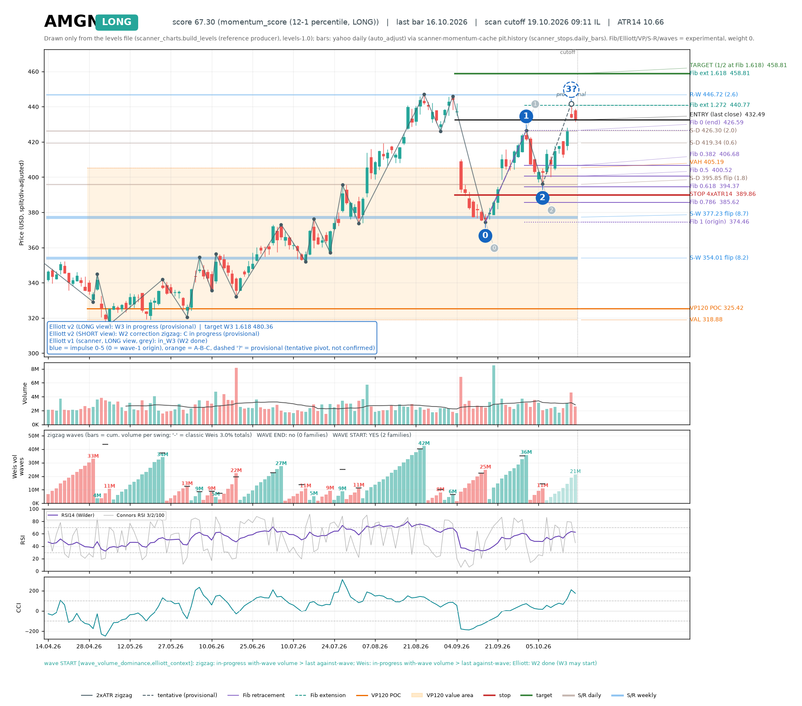
- Jev (typesafe/jev-1.13): 5 כותרות · 2 בביטחון ≥0.8 (סומכים על Jev) · 2 הועברו ל-Claude לשיפוט (ביטחון נמוך או חשד למניפולציה; 0 חשודות, 0 הודעות חברה) · סנטימנט שלילי (-1.00) · קטליזטור analyst · הסכמה עם Claude 2/2
- Grok (grok-4.3, חיפוש X של Grok): ✅ אישור · סנטימנט +0 · ביטחון low · 0 פוסטים · אין דעות משמעותיות ב-X · חשבונות מאומתים: —
- Perplexity (perplexity/sonar-pro): ⚠️ דגל · הדוח ב־3 בנובמבר נמצא בתוך כ־15 ימי מסחר, ולכן קיימת חשיפה בינארית קרובה למרות המומנטום החיובי. · קטליזטור: strong (2026-11-03 https://finance.yahoo.com/quote/AMGN/?fr=sycsrp_catchall)
- הדוח הרבעוני הבא מתוכנן ל־3 בנובמבר 2026, ולכן הוא קטליזטור קרוב ומשמעותי. ב־8 באוקטובר RBC העלתה את יעד המחיר תוך שמירה על דירוג Outperform, אך לא נמצאה הודעה חברה־ספציפית מהותית נוספת בחלון הבדיקה. · דוח הבא: 2026-11-03 · דגלים: הדוח הבא צפוי ב־3 בנובמבר, בתוך אופק ההחזקה הקצר, ולכן קיים סיכון בינארי משמעותי. / קונצנזוס האנליסטים הוא Hold, עם יעדי מחיר ממוצעים הנמוכים ממחיר הסגירה המוצג בגרף. / נרשנו הורדות יעדי מחיר באוקטובר, כולל BMO וגוגנהיים, המצביעות על לחץ בציפיות.
- Claude, אנליסט (anthropic/claude-sonnet-4.5): ביטחון 48/100 · ניטרלי · סיכון: דוח רבעוני ב-3 בנובמבר בתוך אופק ההחזקה
- תזה: הגישה ארוכה נתמכת במומנטום חיובי, מבנה אליוטי פוטנציאלי ל-W3, ונפח דומיננטי בגל העולה. עם זאת, הדוח הקרוב והורדות יעדי מחיר אחרונות (BMO, Guggenheim) מעלים סימני שאלה לגבי התזמון. · טכני (מהגרף): המניה סגרה ב-432.49 מעל SMA20/50/200, עם מומנטום חיובי (67.3) ו-RSI 62.5. הספירה האליוטית מציעה W3 פרובזיונלית לכיוון 480, אך הספירה טרם אושרה והמחיר קרוב להתנגדות שבועית ב-446.72.
- GPT, פרקליט השטן (openai/gpt-5.6-sol): ⚠️ דגל · הסיכון הגדול: סיכון בינארי מהדוח הקרוב · המומנטום חיובי, אך יחס הסיכון לתגמול, ההתנגדות והדוח הקרוב מחלישים את התזמון.
- נגד התזה של Claude: התזה נשענת מדי על W3 זמנית ועל דומיננטיות נפח שאינן מאשרות פריצה מעל ההתנגדות השבועית.
- האם הגרף נראה נכון? (ניסיוני): Grok: n/a: null · Perplexity: yes: הספירה הראשית מסומנת כפרוביזורית, והמחיר כבר קרוב לאזור ההתנגדות והיעד, כך שהעוגן והספירה אינם משכנעים לחלוטין. · Claude: no: הספירה האליוטית והעיגון הפיבונאצ'י נראים סבירים, אך הספירה מסומנת כפרובזיונלית ולא מאושרת · GPT: yes: סימון W3 נראה מוקדם משום שהפיבוט העליון טרם אושר והמחיר עדיין מתחת להתנגדות השבועית. · קלט: grok=img pplx=img claude=img gpt=img
- אתגור הדדי: Claude 48 (neutral) מול GPT flag: מעורב
12. PFE – לונג · דירוג 60.7
- רמות (קובץ הרמות, נר אחרון 2026-10-16, hash a5ba1f9343ac8699): כניסה 29.58 · סטופ 27.37 (chandelier_close 4.0xATR14, ATR14=0.5525) · יעד: 30.00 – חצי ב-Fib 1.618 (סגירה), השאר בשנדלייר 4xATR
- טכני: SMA20 28.34 · SMA50 27.97 · SMA200 26.03 · מומנטום 12-1 0.213 · RSI14 69.8 · CCI20 176
- ניסיוני (משקל 0): אליוט v2: W2 correction zigzag: C done -> W3 may start · אליוט v1: no valid count · פיבו v2 23.21→29.21 (1.618=32.92) · VP120 POC 25.41 (VAH 27.35, VAL 23.21) · תמיכה 29.15 · התנגדות — · סוף גל: 0 משפחות (—) · תחילת גל: 3 (volume_exhaustion,wave_volume_dominance,momentum_divergence)
- דוח: מותר - דוח בעוד 12 ימי מסחר · מקורות: 2026-11-03 (Yahoo calendar); 2026-11-03 (Perplexity (מאושר, עם מקורות))
- סוויפ נזילות (ייחוס בלבד, משקל 0): לא · עבר בדיקה, שביר, משקל 0
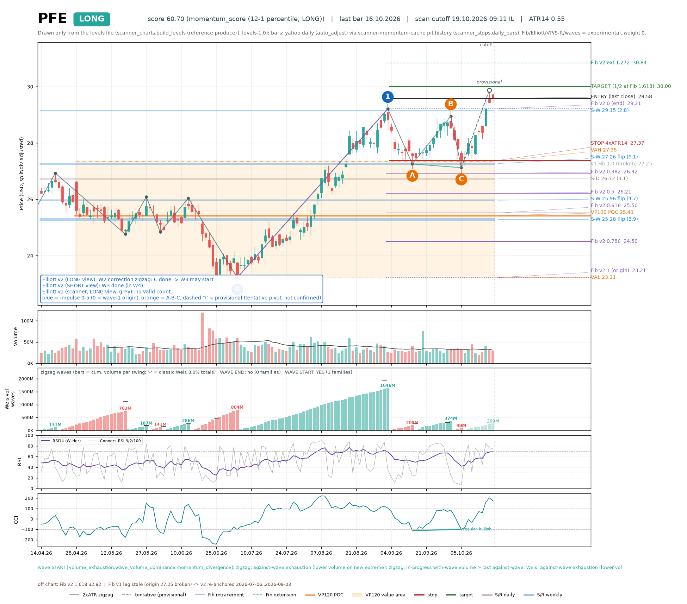
- Jev (typesafe/jev-1.13): 5 כותרות · 0 בביטחון ≥0.8 (סומכים על Jev) · 1 הועברו ל-Claude לשיפוט (ביטחון נמוך או חשד למניפולציה; 0 חשודות, 0 הודעות חברה) · סנטימנט — · קטליזטור — · הסכמה עם Claude 1/1
- Grok (grok-4.3, חיפוש X של Grok): ✅ אישור · סנטימנט +0 · ביטחון low · 0 פוסטים · אין סיבה לבטל את ה-LONG על פי X · חשבונות מאומתים: —
- Perplexity (perplexity/sonar-pro): ⚠️ דגל · הדוחות ב-3 בנובמבר נמצאים בתוך כ-15 ימי המסחר הקרובים, ולכן קיימת חשיפה לאירוע בינארי משמעותי. · קטליזטור: strong (2026-11-03 https://finance.yahoo.com/markets/stocks/articles/four-analysts-raised-pfizer-targets-160640604.html)
- הדוחות לרבעון השלישי מתוכננים ל-3 בנובמבר, בתוך כ-15 ימי המסחר הקרובים, ולכן הם קטליזטור בינארי משמעותי. כנס ESMO מתוכנן ל-23 באוקטובר, ובמקביל פורסמו העלאות יעדי מחיר של כמה אנליסטים בתחילת אוקטובר. · דוח הבא: 2026-11-03 · דגלים: הדוחות הקרובים נמצאים בתוך חלון ההחזקה ועלולים ליצור תנודתיות בינארית. / ברבעון האחרון החברה דיווחה על הפסד GAAP של 246 מיליון דולר, אף שההכנסות היו 15.03 מיליארד דולר. / קיימת חשיפה להתדיינות Depo-Provera; מקור דיווח על הליך MDL ושינוי אזהרת FDA הקשור לסיכון לגידול מוחי.
- Claude, אנליסט (anthropic/claude-sonnet-4.5): ביטחון 45/100 · ניטרלי · סיכון: דוח רבעוני בעוד 12 ימים עם פוטנציאל תנודתיות בינארית גבוהה
- תזה: הסטאפ תופס מומנטום טכני חזק בשיא 52 שבועות עם אישור תבנית אליוטית לגל 3, אך היעד הקרוב (30.00) נמצא רק 1.4% מעל הכניסה ביחס סיכון-תגמול חלש של 1:0.2. הדוח הקרוב והפונדמנטלים החלשים (צמיחה שלילית, התדיינויות משפטיות) מגבילים את הפוטנציאל. · טכני (מהגרף): המניה סיימה ב-29.58 בשיא 52 שבועות, מעל כל הממוצעים הנעים (SMA20/50/200), עם RSI 69.81 ו-CCI 176.18 המצביעים על מומנטום חזק אך קרוב לרמות קנייה מוגזמת. הגרף מראה השלמת תיקון זיגזג ABC והתחלת גל 3 אליוטי פוטנציאלי, עם תמיכה שבועית ב-29.15 ממש מתחת לכניסה.
- GPT, פרקליט השטן (openai/gpt-5.6-sol): ⚠️ דגל · הסיכון הגדול: סיכון בינארי מהדוחות הקרובים · המומנטום חיובי, אך איכות האישור ויחס הסיכון־תגמול אינם מצדיקים ביטחון גבוה.
- נגד התזה של Claude: החולשה המרכזית היא הצגת גל 3 כמאושר אף שהספירה מסומנת כאפשרית והפיבוט האחרון זמני.
- האם הגרף נראה נכון? (ניסיוני): Grok: n/a: אין פוסטים רלוונטיים · Perplexity: no: הספירה, עוגן פיבונאצ'י ורמות התמיכה/התנגדות נראים עקביים עם השיאים והשפלים המסומנים בגרף. · Claude: no: ספירת האליוט v2 (השלמת ABC והתחלת W3) והעיגון הפיבונאצ'י נראים סבירים על הגרף, התמיכה השבועית ממוקמת נכון · GPT: yes: ספירת גל 3 נשענת על פיבוט זמני, ויעד העסקה נגזר מעיגון Fib מיושן ולא מהעיגון המחודש. · קלט: grok=img pplx=img claude=img gpt=img
- אתגור הדדי: Claude 45 (neutral) מול GPT flag: מעורב
13. ABBV – לונג · דירוג 57.0
- רמות (קובץ הרמות, נר אחרון 2026-10-16, hash 930266acd9439a16): כניסה 285.42 · סטופ 259.64 (chandelier_close 4.0xATR14, ATR14=6.4450) · יעד: 304.12 – חצי ב-Fib 1.618 (סגירה), השאר בשנדלייר 4xATR
- טכני: SMA20 268.46 · SMA50 260.92 · SMA200 230.77 · מומנטום 12-1 0.195 · RSI14 72.3 · CCI20 162
- ניסיוני (משקל 0): אליוט v2: W3 in progress (provisional) · אליוט v1: in_W3 (W2 done) · פיבו v2 245.26→267.75 (1.618=281.64) · VP120 POC 247.04 (VAH 287.27, VAL 223.32) · תמיכה 265.64 · התנגדות — · סוף גל: 2 משפחות (volume_exhaustion,wave_volume_dominance) · תחילת גל: 2 (wave_volume_dominance,elliott_context)
- דוח: מותר - דוח בעוד 10 ימי מסחר · מקורות: 2026-10-30 (Yahoo calendar); 2026-10-30 (Perplexity (מאושר, עם מקורות))
- סוויפ נזילות (ייחוס בלבד, משקל 0): לא · עבר בדיקה, שביר, משקל 0
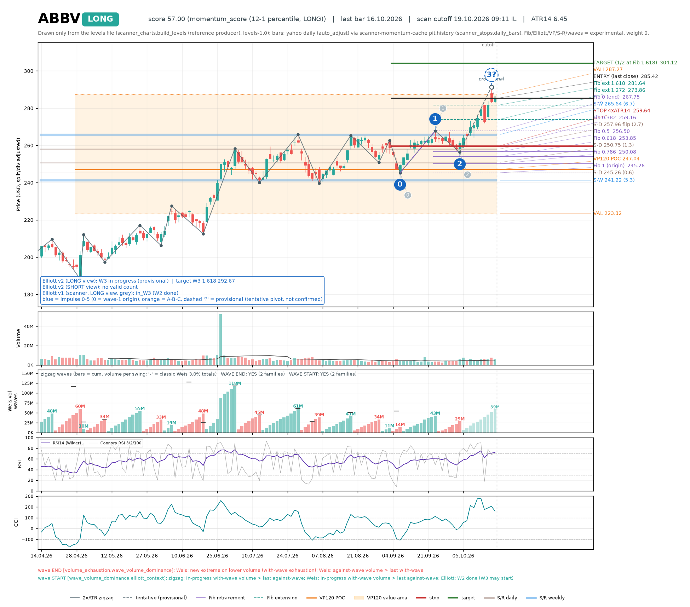
- Jev (typesafe/jev-1.13): 12 כותרות · 0 בביטחון ≥0.8 (סומכים על Jev) · 5 הועברו ל-Claude לשיפוט (ביטחון נמוך או חשד למניפולציה; 0 חשודות, 2 הודעות חברה) · סנטימנט — · קטליזטור — · הסכמה עם Claude 4/5
- Grok (grok-4.3, חיפוש X של Grok): ✅ אישור · סנטימנט +0 · ביטחון low · 1 פוסטים · אין דיון שלילי ב-X · חשבונות מאומתים: @JDruryPartners
- Perplexity (perplexity/sonar-pro): ⚠️ דגל · הדוח המתוזמן ל-30 באוקטובר נמצא בתוך חלון כ-15 ימי המסחר ולכן יש לסמן את העסקה למרות המומנטום החיובי ופעולות האנליסטים. · קטליזטור: strong (2026-10-30 https://investors.abbvie.com/financial-releases)
- הדוח לרבעון השלישי מתוכנן ל-30 באוקטובר 2026 לפני פתיחת המסחר, ומהווה אירוע קרוב ובינארי. ב-8 באוקטובר JPMorgan העלה את יעד המחיר, Morgan Stanley העלה אותו ב-7 באוקטובר, ו-Cantor Fitzgerald העלה אותו ב-8 באוקטובר; לא נמצא מקור לאישור FDA, עסקה חתומה או העלאת תחזית ב-14 הימים שנבדקו. · דוח הבא: 2026-10-30 · דגלים: הדוחות הקרובים נמצאים בתוך כ-15 ימי המסחר ולכן קיימת חשיפת אירוע בינארי לעסקת LONG. / התחזית המדווחת לרבעון השלישי היא EPS של 3.840–3.880; לא נמצא במקורות שנבדקו קיצוץ תחזית עדכני. / לא נמצאו במקורות שנבדקו ראיות עדכניות לבעיה חשבונאית, דילול חריג, חוב בעייתי, ליטיגציה מהותית או פעולה רגולטורית שלילית.
- Claude, אנליסט (anthropic/claude-sonnet-4.5): ביטחון 48/100 · ניטרלי · סיכון: דוח רבעוני בעוד 10 ימים עם חשיפה בינארית, וקנייה מוגזמת טכנית
- תזה: הפריצה מעל VAH עם ספירה אליוטית תומכת ושדרוגי אנליסטים יוצרים מומנטום חיובי לטווח קצר. עם זאת, הכניסה ב-285.42 קרובה מאוד ל-VAH והאינדיקטורים מראים קנייה מוגזמת, והדוח בעוד 10 ימים מהווה סיכון בינארי משמעותי. · טכני (מהגרף): המניה פרצה מעל VAH של VP120 (287.27) ונסגרה ב-285.42, עם RSI ב-72.27 ו-CCI ב-161.69 המצביעים על קנייה מוגזמת. הספירה האליוטית מציעה W3 בתהליך עם יעד 292.67, אך הנפח בגל האחרון הראה תשישות (volume exhaustion) והמומנטום החזק (15d ret 8.64%) עלול להיות מתוח.
- GPT, פרקליט השטן (openai/gpt-5.6-sol): ⚠️ דגל · הסיכון הגדול: דוח בינארי קרוב לאחר מהלך מתוח · המגמה חיובית, אך אין פריצה מאושרת והיחס בין הסיכון לתמורה חלש לפני הדוח.
- נגד התזה של Claude: החולשה המרכזית היא הצגת פריצה מעל VAH אף שהסגירה נותרה מתחתיו.
- האם הגרף נראה נכון? (ניסיוני): Grok: n/a · Perplexity: no: הספירה המוצגת נראית עקבית עם העלייה והפיבוטים האחרונים, והמחיר נמצא מעל אזורי התמיכה וה-POC המסומנים. · Claude: no: הספירה האליוטית והעיגון של Fib נראים סבירים, W2 מסומן נכון והיעד W3 הגיוני · GPT: yes: ספירת W3 עדיין זמנית, והיעד שלה נמוך משמעותית מיעד העסקה. · קלט: grok=img pplx=img claude=img gpt=img
- אתגור הדדי: Claude 48 (neutral) מול GPT flag: מעורב
14. SCHW – שורט · דירוג 50.5
- רמות (קובץ הרמות, נר אחרון 2026-10-16, hash 412cd0e3a34c5ca7): כניסה 91.96 · סטופ 101.10 (chandelier_close 4.0xATR14, ATR14=2.2862) · יעד: אין – ללא יעד קבוע - שנדלייר 4xATR14 על סגירה (כלל מאושר)
- טכני: SMA20 97.76 · SMA50 104.41 · SMA200 97.73 · מומנטום 12-1 0.123 · RSI14 27.8 · CCI20 -177
- ניסיוני (משקל 0): אליוט v2: no valid count · אליוט v1: no valid count · פיבו v2 —→— (1.618=—) · VP120 POC 91.42 (VAH 102.82, VAL 84.33) · תמיכה 90.97 · התנגדות 93.47 · סוף גל: 1 משפחות (wave_volume_dominance) · תחילת גל: 1 (wave_volume_dominance)
- דוח: תאריך דוח לא מאומת
- סוויפ נזילות (ייחוס בלבד, משקל 0): לא
- ספירלת פיבו – יעדי ייחוס בלבד (משקל 0, לא משנה סטופ/יעד; השורט נשאר עם סטופ נגרר 4×ATR בלי יעד): T1 107.26 (fan:2@fib0.236) · T2 102.76 (fan:1@fib0.382) · מצב: triggered_earlier
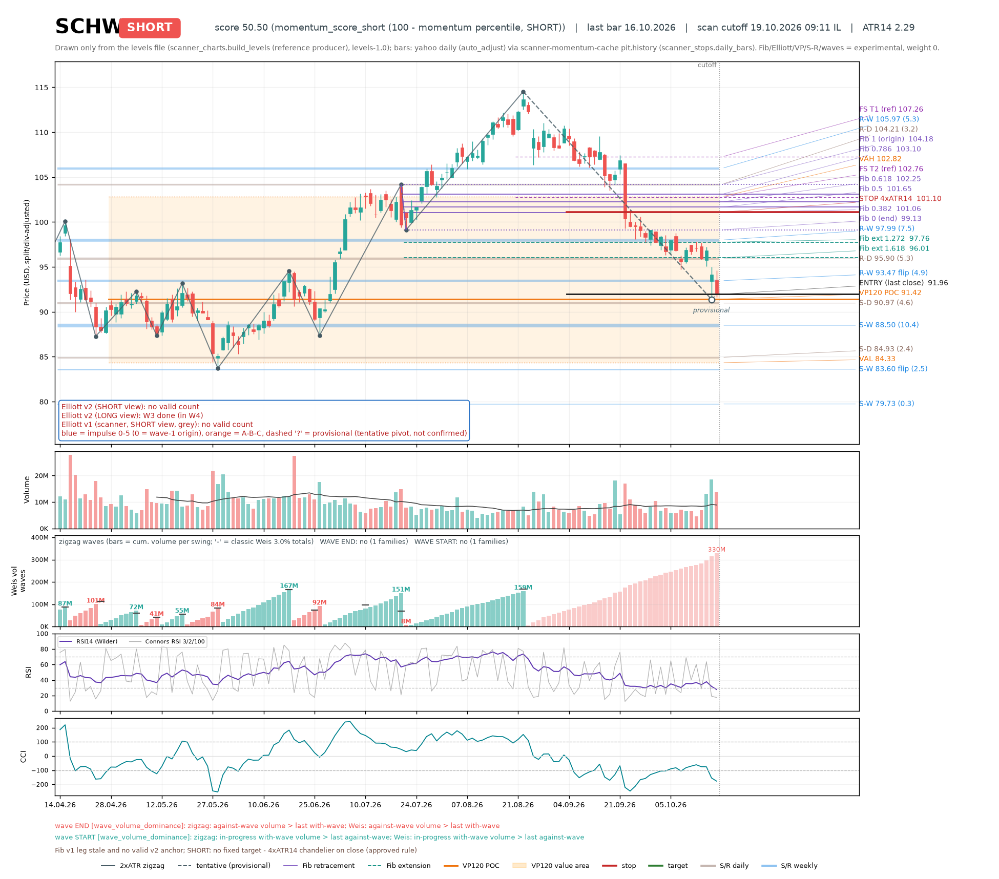
- Jev (typesafe/jev-1.13): 15 כותרות · 2 בביטחון ≥0.8 (סומכים על Jev) · 8 הועברו ל-Claude לשיפוט (ביטחון נמוך או חשד למניפולציה; 0 חשודות, 0 הודעות חברה) · סנטימנט ניטרלי/מעורב (+0.01) · קטליזטור analyst · הסכמה עם Claude 1/8
- Grok (grok-4.3, חיפוש X של Grok): ✅ אישור · סנטימנט +0 · ביטחון low · 0 פוסטים · אין דיון משמעותי ב-X · חשבונות מאומתים: —
- Perplexity (perplexity/sonar-pro): ⚠️ דגל · הדוחות פורסמו לאחרונה והיו פעולות אנליסטים מעורבות, אך אין במידע שנאסף תאריך רווחים עתידי מאומת או אירוע בינארי קרוב. · קטליזטור: weak
- החברה פרסמה תוצאות רבעון שלישי ב-15 באוקטובר 2026, ולכן זהו אירוע שכבר התרחש ולא קטליזטור עתידי. לא נמצא במידע שנאסף אירוע חברה ספציפי ומתוארך במהלך 30 הימים הקרובים. · דוח הבא: — · דגלים: מספר הורדות יעד מחיר לאחר פרסום תוצאות הרבעון השלישי. / הדוחות האחרונים עלולים ליצור תנודתיות, אך לא נמצא מידע מספיק על שינויי תחזית או חולשה חשבונאית מהותית. / לא נמצא במידע שנאסף מקור מאומת לליטיגציה, דילול, חוב חריג או פעולה רגולטורית מהותית.
- Claude, אנליסט (anthropic/claude-sonnet-4.5): ביטחון 45/100 · ניטרלי · סיכון: oversold קיצוני עם RSI=27.8 מגביר סיכון לריבאונד טכני חד
- תזה: לאחר ירידה של 7% ב-15 ימים ותגובה שלילית לתוצאות למרות ביצועים טובים, יש פוטנציאל להמשך לחץ מכירה לכיוון תמיכה ב-90.97. עם זאת, רמת oversold קיצונית ודירוגי אנליסטים חיוביים (Buy/Overweight) מהווים סיכון משמעותי לריבאונד. · טכני (מהגרף): המניה בירידה חדה מ-113 ל-92, מתחת לכל הממוצעים (SMA20=97.8, SMA50=104.4). RSI=27.8 ו-CCI=-176.9 מצביעים על oversold קיצוני, אך המומנטום שלילי והמחיר נסגר בדיוק על הכניסה המוצעת ליד POC=91.4.
- GPT, פרקליט השטן (openai/gpt-5.6-sol): ⚠️ דגל · הסיכון הגדול: ריבאונד חד ממכירות־יתר סמוך לתמיכה · המגמה יורדת, אך מכירות־יתר, תמיכה קרובה, יסודות חזקים ודירוגים חיוביים הופכים את השורט המאוחר למסוכן.
- נגד התזה של Claude: התזה חלשה בכך שהיא מסיקה המשך לחץ מתגובה שכבר התרחשה, ללא קטליזטור שלילי חדש ומאומת.
- האם הגרף נראה נכון? (ניסיוני): Grok: no: הספירה והעוגנים נראים תקינים · Perplexity: yes: התרשים עצמו מציין שאין ספירת Elliott תקפה ואין עוגן Fib קבוע, ולכן אין בסיס מספק לאשר את הספירה או העוגנים המצוירים. · Claude: n/a: אין ספירת אליוט תקפה מוצגת, רק 'no valid count' · GPT: yes: אין ספירת אליוט תקפה ועוגן הפיבונאצ'י מסומן כמיושן, ולכן שכבות אלו אינן תומכות בשורט. · קלט: grok=img pplx=img claude=img gpt=img
- אתגור הדדי: Claude 45 (neutral) מול GPT flag: מעורב
15. BTC – לונג (קריפטו) · דירוג 50.0
- רמות (קובץ הרמות, נר אחרון 2026-10-18, hash 8db5d601934141c1): כניסה 82,009.90 · סטופ 75,626.01 (fixed_close 3.0xATR14, ATR14=2,127.96) · יעד: אין – ללא יעד (כלל קריפטו מאושר) - סטופ קבוע 3xATR14 על סגירה יומית UTC
- טכני: SMA20 83,333.34 · SMA50 81,398.36 · SMA200 72,496.28 · מומנטום 12-1 0.202 · RSI14 48.7 · CCI20 -91
- ניסיוני (משקל 0): אליוט v2: W2 correction expanded flat: C in progress (provisional) · אליוט v1: no valid count · פיבו v2 74,908.81→87,384.87 (1.618=95,095.07) · VP120 POC 63,951.24 (VAH 81,452.30, VAL 57,722.05) · תמיכה 81,547.79 · התנגדות 83,582.61 · סוף גל: 1 משפחות (wave_volume_dominance) · תחילת גל: 0 (—)
- דוח: n/a (crypto)
- סוויפ נזילות (ייחוס בלבד, משקל 0): לא
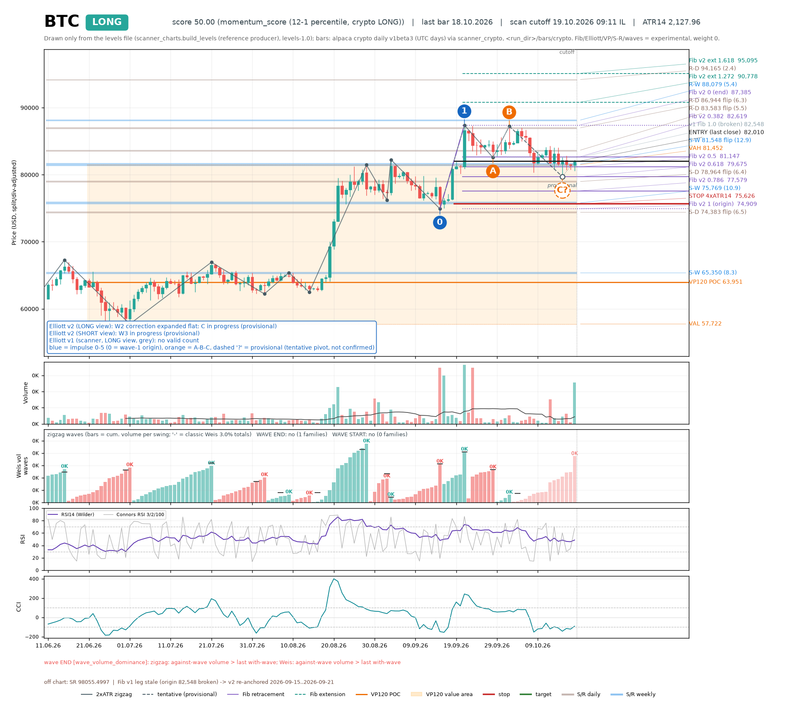
- Grok (סנטימנט ראשי לקריפטו) (grok-4.3, חיפוש X של Grok): ✅ אישור · סנטימנט +0 · ביטחון medium · 7 פוסטים · סנטימנט ניטרלי-חיובי ללא חדשות שליליות ברורות · חשבונות מאומתים: —
- Jev (typesafe/jev-1.13): 0 כותרות · 0 בביטחון ≥0.8 (סומכים על Jev) · 0 הועברו ל-Claude לשיפוט (ביטחון נמוך או חשד למניפולציה; 0 חשודות, 0 הודעות חברה) · סנטימנט — · קטליזטור —
- Perplexity (perplexity/sonar-pro): ⚠️ דגל · יש אירוע מאקרו בינארי קרוב וזרימות תעודות הסל חלשות, ולכן כניסת LONG כעת מצדיקה דגל אזהרה. · קטליזטור: moderate (2026-10-27 https://coinstack.substack.com/p/etfs-bleed-in-uptober)
- זרימות תעודות הסל האמריקאיות היו שליליות באוקטובר, כולל יציאה של כ־617.2 מיליון דולר עד 19 באוקטובר ויציאה יומית של כ־487.1 מיליון דולר ב־7 באוקטובר. האירוע המאקרו המרכזי הקרוב הוא ישיבת ה־FOMC ב־27–28 באוקטובר, בעוד שבתרשים המחיר נסחר מתחת להתנגדויות ונראה בתיקון יורד. · דוח הבא: — · דגלים: זרימות תעודות הסל האמריקאיות היו שליליות באוקטובר, עם יציאה מצטברת של כ־617.2 מיליון דולר עד 19 באוקטובר. / נתוני השרשרת מצביעים על חלוקת מטבעות ישנים: מאזן הזרימה השנתי של כתובות מחזיקים ותיקים היה שלילי בכ־127,300 BTC. / מתיחות ארה״ב–איראן והסיכון להידוק תנאים פיננסיים עלולים להכביד על נכסי סיכון.
- Claude, אנליסט (anthropic/claude-sonnet-4.5): ביטחון 35/100 · ניטרלי · סיכון: המשך התיקון מתחת לתמיכה השבועית לכיוון רמת 0.618 פיבונאצ'י ב-79675
- תזה: הכניסה ב-82010 קרובה לתמיכה שבועית (81548) אך התיקון הטכני טרם הושלם והקטליסטים שליליים. הסיכוי-תגמול חלש כאשר המחיר תקוע מתחת להתנגדויות מרובות והמומנטום נייטרלי. · טכני (מהגרף): המחיר נסחר מתחת ל-SMA20 (83333) ומתחת להתנגדות יומית ב-83583, בתיקון מורכב (expanded flat) שטרם הושלם. RSI נייטרלי ב-48.69 ונפח הגל הנגדי דומיננטי, מה שמצביע על חולשה לטווח קצר.
- GPT, פרקליט השטן (openai/gpt-5.6-sol): ⚠️ דגל · הסיכון הגדול: שבירת התמיכה השבועית תוך המשך תיקון C · החולשה הטכנית והרוחות הנגדיות מהזרימות ומהמאקרו יוצרות סיכון ממשי ל-LONG, אך התמיכה והמגמה ארוכת הטווח מונעות וטו.
- נגד התזה של Claude: הטיעון החלש ביותר הוא שזרימה שנתית של מחזיקים ותיקים מתזמנת בהכרח לחץ מכירה בטווח העסקה.
- האם הגרף נראה נכון? (ניסיוני): Grok: no: ספירת אליוט ו-Fib נראים תואמים לגרף · Perplexity: no: הספירה הראשית, עוגן פיבונאצ׳י ואזורי התמיכה וההתנגדות נראים עקביים עם מבנה התיקון המוצג, אם כי נקודת C עדיין מסומנת כזמנית. · Claude: no: ספירת expanded flat עם גל C זמני נראית סבירה בהתחשב במבנה התיקון המורכב והנפח הנגדי · GPT: no: הספירה, עוגן הפיבונאצ'י ורמות התמיכה וההתנגדות נראים סבירים, אך נקודת C עדיין זמנית. · קלט: grok=img pplx=img claude=img gpt=img
- אתגור הדדי: Claude 35 (neutral) מול GPT flag: מעורב
16. BAC – שורט · דירוג 49.5
- רמות (קובץ הרמות, נר אחרון 2026-10-16, hash 730d8c70e9738979): כניסה 51.23 · סטופ 56.50 (chandelier_close 4.0xATR14, ATR14=1.3165) · יעד: אין – ללא יעד קבוע - שנדלייר 4xATR14 על סגירה (כלל מאושר)
- טכני: SMA20 54.38 · SMA50 58.93 · SMA200 54.75 · מומנטום 12-1 0.137 · RSI14 24.1 · CCI20 -128
- ניסיוני (משקל 0): אליוט v2: W2 in progress (provisional) · אליוט v1: W5_done (correction next) · פיבו v2 54.93→49.26 (1.618=45.76) · VP120 POC 61.52 (VAH 64.25, VAL 52.98) · תמיכה 50.21 · התנגדות 51.89 · סוף גל: 2 משפחות (volume_exhaustion,climax) · תחילת גל: 1 (wave_volume_dominance)
- דוח: מותר - דוח בעוד 62 ימי מסחר · מקורות: 2027-01-15 (Yahoo calendar); 2027-01-15 (Perplexity (מאושר, עם מקורות))
- סוויפ נזילות (ייחוס בלבד, משקל 0): לא
- ספירלת פיבו – יעדי ייחוס בלבד (משקל 0, לא משנה סטופ/יעד; השורט נשאר עם סטופ נגרר 4×ATR בלי יעד): T1 57.55 (fan:2@fib0.382) · T2 57.55 (fan:1@fib0.382) · מצב: triggered_earlier
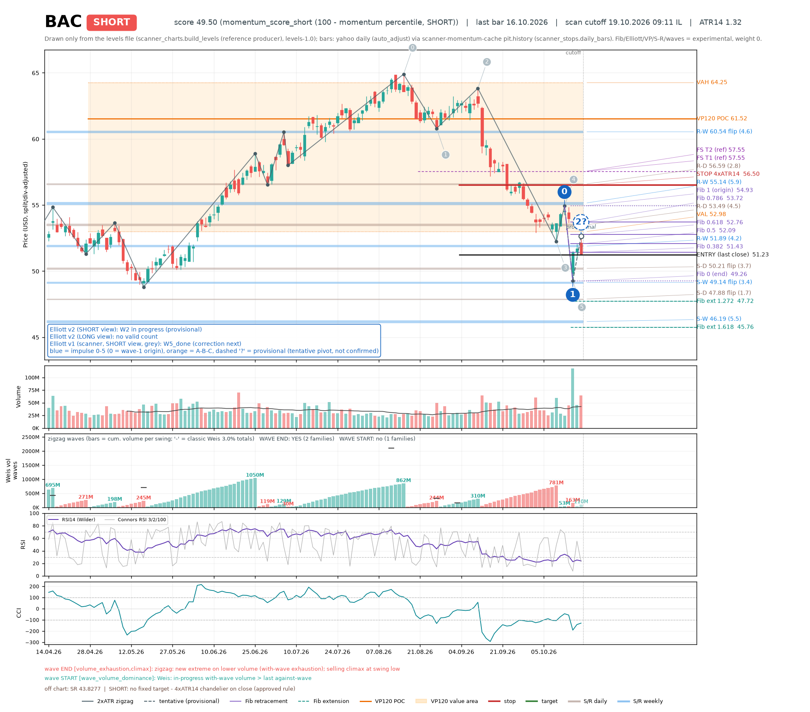
- Jev (typesafe/jev-1.13): 15 כותרות · 2 בביטחון ≥0.8 (סומכים על Jev) · 8 הועברו ל-Claude לשיפוט (ביטחון נמוך או חשד למניפולציה; 0 חשודות, 1 הודעות חברה) · סנטימנט שלילי (-1.00) · קטליזטור earnings · הסכמה עם Claude 4/8
- Grok (grok-4.3, חיפוש X של Grok): ✅ אישור · סנטימנט +0 · ביטחון low · 6 פוסטים · סנטימנט ניטרלי ללא חדשות נגד השורט · חשבונות מאומתים: @ideaddontcare
- Perplexity (perplexity/sonar-pro): ⚠️ דגל · הדוח האחרון והורדות יעדי המחיר תומכים בלחץ שלילי, אך הספירה הטכנית זמנית והאירוע הבא המשמעותי הוא דוח ינואר, שאינו בתוך כ-15 ימי המסחר הקרובים. · קטליזטור: moderate (2026-10-14 https://investor.bankofamerica.com/events-and-presentations/events/detail/20261014-q3-2026-bank-of-america-earnings-conference-call)
- הדוח לרבעון השלישי פורסם ב-14 באוקטובר, עם רווח למניה של 1.08 לעומת קונצנזוס של 1.10, ולכן הוא עשוי להכביד על המניה בטווח הקצר. במהלך 30 הימים הקרובים לא נמצא אירוע חברה בינארי מתוזמן נוסף, אך הדוח הבא מתוכנן ל-15 בינואר 2027. · דוח הבא: 2027-01-15 · דגלים: פספוס רווח למניה ברבעון השלישי: 1.08 לעומת קונצנזוס של 1.10. / מספר בתי השקעות הורידו יעדי מחיר לאחר הדוח, כולל TD Cowen, Citigroup, KBW ו-Morgan Stanley. / JPMorgan הורידה את תחזית הרווח למניה לרבעון השלישי ולשנת 2026; בנוסף דווח על חשש להאטה בעמלות בנקאות השקעות.
- Claude, אנליסט (anthropic/claude-sonnet-4.5): ביטחון 45/100 · ניטרלי · סיכון: oversold קיצוני עם RSI 24 - סיכון גבוה לריבאונד טכני חד
- תזה: השורט נשען על מומנטום שלילי חזק לאחר דוח חלש וקנס גבוה, עם תמיכה טכנית קרובה ב-50.21. עם זאת, רמת ה-oversold הקיצונית (RSI 24) והערכה פונדמנטלית סבירה מעלים סיכון להתאוששות חדה. · טכני (מהגרף): המניה בירידה חדה מתחת לכל הממוצעים (SMA20/50/200), RSI בקריאה קיצונית של 24.06 ו-CCI ב-128- מצביעים על oversold חמור. הכניסה ב-51.23 קרובה לתמיכה ב-50.21, עם סטופ רחב ב-56.50 (4xATR14).
- GPT, פרקליט השטן (openai/gpt-5.6-sol): ⚠️ דגל · הסיכון הגדול: ריבאונד חד ממכירות־יתר ותמיכה קרובה · המגמה שלילית, אך מכירות־יתר קיצוניות, תמיכה סמוכה וסימני מיצוי הופכים את תזמון השורט למסוכן.
- נגד התזה של Claude: התזה מעניקה משקל יתר לדוח ולקנס שכבר תומחרו לאחר ירידה חדה, אף שהאנליסט עצמו ניטרלי ומזהה סיכון ריבאונד גבוה.
- האם הגרף נראה נכון? (ניסיוני): Grok: no: ספירה ורמות נראות תקינות · Perplexity: yes: הספירה הראשית מסומנת כזמנית, והתרשים מציג חפיפה בין גלי Elliott והעוגנים באזור השפל האחרון, לכן אין ודאות מספקת לאישור הספירה או עוגן הפיבוט. · Claude: no: ספירת אליוט v2 (W2 provisional) והעיגון הפיבונאצ'י מ-54.93 ל-49.26 נראים סבירים על הגרף · GPT: yes: ספירת אליוט הראשית זמנית ונשענת על ציר לא מאושר, בעוד סימני השיא והנפח החריג מתאימים גם לתחתית מתקנת. · קלט: grok=img pplx=img claude=img gpt=img
- אתגור הדדי: Claude 45 (neutral) מול GPT flag: מעורב
17. AVAX – לונג (קריפטו) · דירוג 41.7
- רמות (קובץ הרמות, נר אחרון 2026-10-18, hash 52e2c626b9c39e88): כניסה 9.7663 · סטופ 7.7032 (fixed_close 3.0xATR14, ATR14=0.6877) · יעד: אין – ללא יעד (כלל קריפטו מאושר) - סטופ קבוע 3xATR14 על סגירה יומית UTC
- טכני: SMA20 10.59 · SMA50 9.3983 · SMA200 8.1696 · מומנטום 12-1 0.201 · RSI14 45.4 · CCI20 -133
- ניסיוני (משקל 0): אליוט v2: W2 correction expanded flat: C in progress (provisional) · אליוט v1: in_W4 (W3 done) · פיבו v2 7.1713→11.79 (1.618=14.64) · VP120 POC 6.4902 (VAH 9.9395, VAL 5.9456) · תמיכה 9.7643 · התנגדות 10.42 · סוף גל: 2 משפחות (wave_volume_dominance,momentum_divergence) · תחילת גל: 0 (—)
- דוח: n/a (crypto)
- סוויפ נזילות (ייחוס בלבד, משקל 0): לא
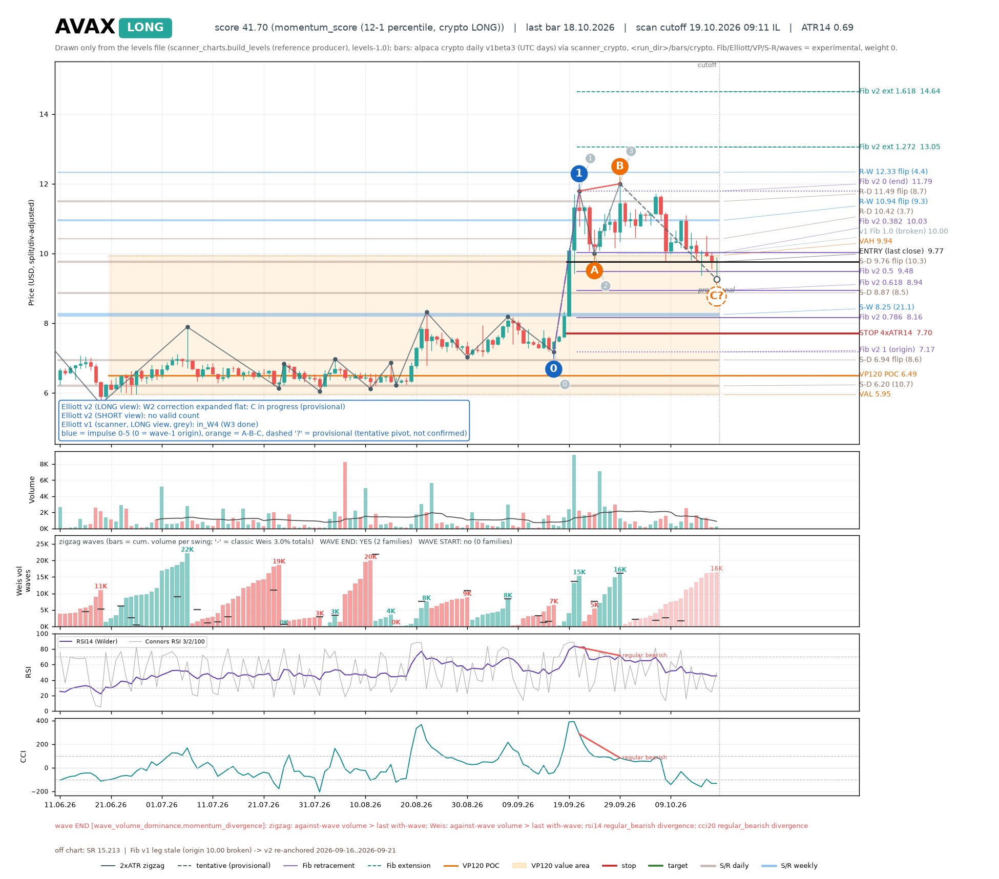
- Grok (סנטימנט ראשי לקריפטו) (grok-4.3, חיפוש X של Grok): ✅ אישור · סנטימנט +1 · ביטחון medium · 5 פוסטים · אין סנטימנט שלילי חזק ב-X שסותר את ה-LONG · חשבונות מאומתים: @MintPrice1, @maluhia_boy, @CesarF2394
- Jev (typesafe/jev-1.13): 0 כותרות · 0 בביטחון ≥0.8 (סומכים על Jev) · 0 הועברו ל-Claude לשיפוט (ביטחון נמוך או חשד למניפולציה; 0 חשודות, 0 הודעות חברה) · סנטימנט — · קטליזטור —
- Perplexity (perplexity/sonar-pro): ⚠️ דגל · לונג כעת מסומן בגלל שחרור אסימונים קרוב, אירועים בינאריים אפשריים ומומנטום טכני נחלש. · קטליזטור: moderate (2026-10-16 https://crypto.com/eea/coins-ai/avalanche/latest-news)
- אירועים קרובים כוללים שחרור אסימוני AVAX, כאשר המקורות מציינים תאריכים סותרים: 21 באוקטובר או 24 באוקטובר 2026, וכן שחרור נוסף ב-8 בנובמבר 2026. ב-14 הימים האחרונים דווח על הרחבת מסחר ב-AVAX בידי Charles Schwab, על זרימות לנכסים ממוסמכים באוואלאנץ' ועל שימושים מוסדיים חדשים, אך חלק מהדיווחים מגיעים ממקורות משניים ולא אומתו במקור רשמי. · דוח הבא: — · דגלים: שחרור AVAX קרוב עם תאריכים וכמויות סותרים בין המקורות. / התרשים מציג מומנטום נחלש, סטיות דוביות ב-RSI וב-CCI ונפח גלים דובי. / חלק מהחדשות על ETF, זרימות מוסדיות ואימוץ מגיעות מאגרגטורים או ממקורות משניים ללא אימות רשמי.
- Claude, אנליסט (anthropic/claude-sonnet-4.5): ביטחון 35/100 · ניטרלי · סיכון: שחרור אסימונים קרוב (21-24 אוקטובר) עלול ללחוץ על המחיר
- תזה: הלונג מסתמך על תמיכה טכנית קרובה וסיום אפשרי של תיקון W2, אך הסטיות הדוביות, הנפח הנגדי ושחרור האסימונים הקרוב מערערים את התזה. הסיכון-תגמול לא אטרקטיבי בטווח הקצר. · טכני (מהגרף): המחיר ב-9.77 נמצא בתיקון מתחת לשיא 12.5, עם סטיות דוביות ב-RSI וב-CCI ונפח גלים נגדי דומיננטי. הספירה האליוטית מציעה תיקון W2 מורחב (C בתהליך), אך הכניסה קרובה לתמיכה 9.76 ומעל SMA200 ב-8.17.
- GPT, פרקליט השטן (openai/gpt-5.6-sol): ⛔ וטו · הסיכון הגדול: המשך גל C בלחץ שחרור אסימונים · המומנטום, הנפח והספירה הזמנית מצביעים על תיקון פעיל, ללא זרז חיובי מאומת שיצדיק לונג כעת.
- נגד התזה של Claude: ההנחה שתיקון W2 עשוי להסתיים חלשה, משום שהספירה זמנית ואין אות מאושר לתחילת גל עולה.
- האם הגרף נראה נכון? (ניסיוני): Grok: no: הספירה Elliott ו-Fib נראים תקינים · Perplexity: yes: הספירה הראשית מסומנת כפרוביזורית והפיבוט האחרון מסומן בסימן שאלה, בעוד שהמחיר יורד מתחת לאזורי התנגדות עם סטיות דוביות. · Claude: no: הספירה W2 expanded flat והעיגון מחדש של הפיבונאצ'י מ-7.17 ל-11.79 נראים סבירים על התרשים · GPT: no: ספירת C בתהליך, עוגן Fib v2 ורמות התמיכה וההתנגדות תואמים באופן סביר למבנה המצויר. · קלט: grok=img pplx=img claude=img gpt=img
- אתגור הדדי: Claude 35 (neutral) מול GPT veto: הסכמה שלילית: Claude חלש, GPT וטו
18. CRM – לונג · דירוג 37.4
- רמות (קובץ הרמות, נר אחרון 2026-10-16, hash a76a666de5f85984): כניסה 240.70 · סטופ 204.42 (chandelier_close 4.0xATR14, ATR14=9.0696) · יעד: 250.74 – חצי ב-Fib 1.618 (סגירה), השאר בשנדלייר 4xATR
- טכני: SMA20 233.23 · SMA50 229.90 · SMA200 198.30 · מומנטום 12-1 0.035 · RSI14 55.8 · CCI20 125
- ניסיוני (משקל 0): אליוט v2: no valid count · אליוט v1: no valid count · פיבו v2 154.88→267.80 (1.618=337.58) · VP120 POC 181.37 (VAH 209.37, VAL 148.50) · תמיכה 231.86 · התנגדות 250.72 · סוף גל: 1 משפחות (wave_volume_dominance) · תחילת גל: 3 (volume_exhaustion,wave_volume_dominance,momentum_divergence)
- דוח: מותר - דוח בעוד 32 ימי מסחר · מקורות: 2026-12-02 (Yahoo calendar)
- סוויפ נזילות (ייחוס בלבד, משקל 0): לא · עבר בדיקה, שביר, משקל 0
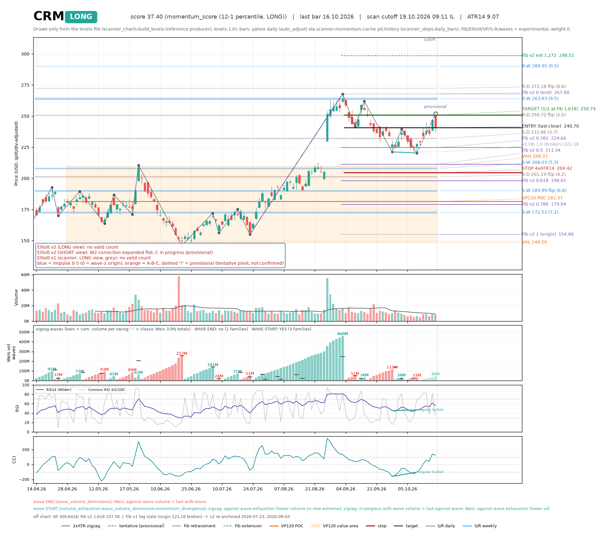
- Jev (typesafe/jev-1.13): 13 כותרות · 0 בביטחון ≥0.8 (סומכים על Jev) · 7 הועברו ל-Claude לשיפוט (ביטחון נמוך או חשד למניפולציה; 0 חשודות, 0 הודעות חברה) · סנטימנט — · קטליזטור — · הסכמה עם Claude 7/7
- Grok (grok-4.3, חיפוש X של Grok): ✅ אישור · סנטימנט +0 · ביטחון low · 0 פוסטים · אין פוסטים רלוונטיים ב-X · חשבונות מאומתים: —
- Perplexity (perplexity/sonar-pro): ⚠️ דגל · יש קטליזטור חיובי משמעותי, אך הדוח הבא צפוי בדצמבר ועלול ליפול בתוך חלון ההחזקה, בעוד שהתאריך אינו מאומת. · קטליזטור: moderate (2026-10-12 https://markets.businessinsider.com/news/stocks/salesforce-upgraded-to-buy-from-underperform-at-bofa-1036617387)
- ב-12 באוקטובר Bank of America שדרג את Salesforce מ־Underperform ל־Buy והעלה את יעד המחיר מ־160 ל־285 דולר. החברה העלתה את תחזית FY2027 להכנסות של 46.1–46.4 מיליארד דולר ולרווח non-GAAP למניה של 16.67–16.71 דולר, אך מועד הדוח הבא לא אושר במקור רשמי שסופק. · דוח הבא: — · דגלים: הדוח הבא צפוי בדצמבר לפי מקור משני, אך לא נמצא תאריך מאומת; לכן קיים סיכון אירוע בטווח ההחזקה. / העלאת התחזית מלווה באי־ודאות לגבי קצב המוניטיזציה של מוצרי Agentforce וצמיחת ההכנסות. / לא נמצאה בתוצאות שסופקו אינדיקציה מספקת לבדיקת ליטיגציה, דילול, חוב או סוגיות חשבונאיות עדכניות.
- Claude, אנליסט (anthropic/claude-sonnet-4.5): ביטחון 48/100 · ניטרלי · סיכון: דוח רווחים ב-2 בדצמבר (32 ימי מסחר) עלול ליצור תנודתיות; המומנטום הנוכחי אינו תומך בפריצה מהירה
- תזה: שדרוג אנליסטים וחוזים גדולים תומכים בכיוון העלייה, אך המומנטום הטכני חלש והמניה בקונסולידציה. היעד 250.74 דולר (4.2% מהכניסה) סביר אך דורש פריצה מעל 250 דולר (התנגדות). · טכני (מהגרף): המניה נסחרת מעל ממוצעים נעים (SMA20/50/200) אך המומנטום חלש (ציון 37.4, RSI 55.84). הגרף מראה קונסולידציה צדדית סביב 240 לאחר עלייה חדה, עם נפח יורד ואין ספירת אליוט תקפה.
- GPT, פרקליט השטן (openai/gpt-5.6-sol): ⛔ וטו · הסיכון הגדול: כשל בפריצה מול יחס סיכוי־סיכון שלילי · האפסייד המוגבל עד התנגדות אינו מפצה על הסיכון והאישור הטכני החלש.
- נגד התזה של Claude: התזה חלשה בכך שהיא מכנה את היעד סביר אף שהוא יושב ישירות על התנגדות והמומנטום אינו מאשר פריצה.
- האם הגרף נראה נכון? (ניסיוני): Grok: n/a: אין נתונים מ-X לבדיקה · Perplexity: yes: התרשים עצמו מציין שאין ספירת Elliott תקפה, והפיבוט האחרון מסומן כפרוביזורי ולכן איני מאשר את הספירה או את עוגן הפיבונאצ׳י. · Claude: n/a: אין ספירת אליוט תקפה בגרף; רמות Fib ו-S/R נראות סבירות · GPT: yes: יעד העסקה נשען על Fib v1 המסומן כמיושן, בעוד Fib v2 עוגן מחדש ואין ספירת אליוט תקפה. · קלט: grok=img pplx=img claude=img gpt=img
- אתגור הדדי: Claude 48 (neutral) מול GPT veto: מעורב
19. GS – שורט · דירוג 34.6
- רמות (קובץ הרמות, נר אחרון 2026-10-16, hash 42d3dce93346222b): כניסה 881.26 · סטופ 980.76 (chandelier_close 4.0xATR14, ATR14=24.87) · יעד: אין – ללא יעד קבוע - שנדלייר 4xATR14 על סגירה (כלל מאושר)
- טכני: SMA20 906.45 · SMA50 973.13 · SMA200 952.67 · מומנטום 12-1 0.263 · RSI14 34.3 · CCI20 -63
- ניסיוני (משקל 0): אליוט v2: W2 in progress (provisional) · אליוט v1: W5_done (correction next) · פיבו v2 931.00→859.03 (1.618=814.55) · VP120 POC 1,035.52 (VAH 1,107.86, VAL 934.26) · תמיכה 859.04 · התנגדות 897.88 · סוף גל: 3 משפחות (volume_exhaustion,momentum_divergence,elliott_context) · תחילת גל: 1 (wave_volume_dominance)
- דוח: מותר - דוח בעוד 62 ימי מסחר · מקורות: 2027-01-18 (Perplexity (מאושר, עם מקורות))
- סוויפ נזילות (ייחוס בלבד, משקל 0): לא
- ספירלת פיבו – יעדי ייחוס בלבד (משקל 0, לא משנה סטופ/יעד; השורט נשאר עם סטופ נגרר 4×ATR בלי יעד): T1 960.83 (fan:4@fib0.5) · T2 960.83 (circle:0.786@fib0.5) · מצב: triggered_earlier
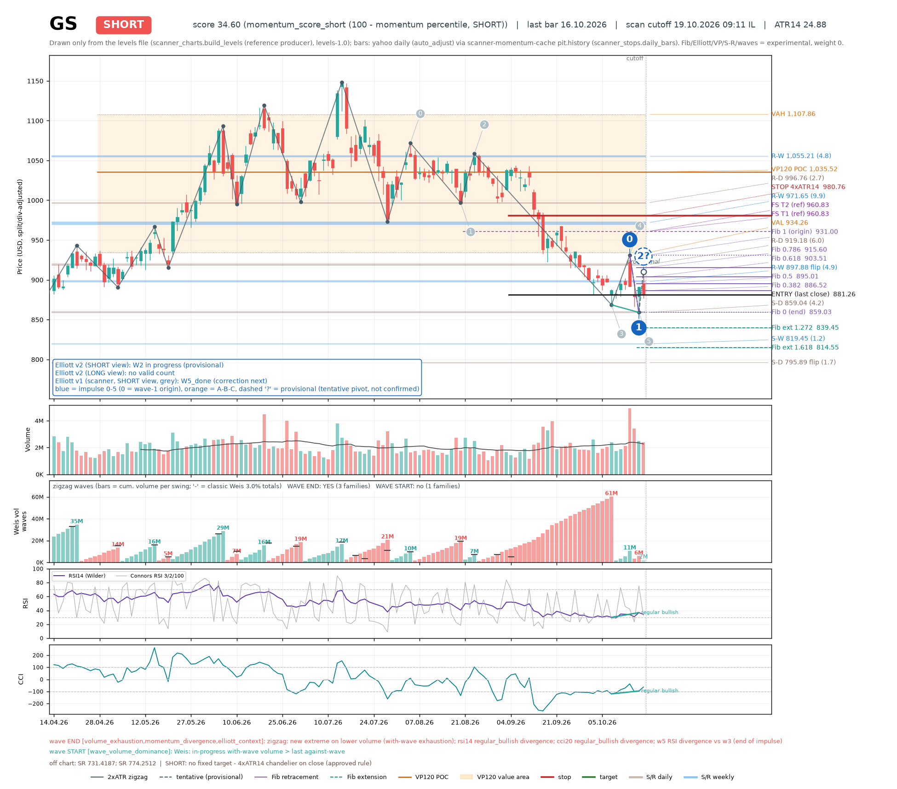
- Jev (typesafe/jev-1.13): 15 כותרות · 2 בביטחון ≥0.8 (סומכים על Jev) · 5 הועברו ל-Claude לשיפוט (ביטחון נמוך או חשד למניפולציה; 0 חשודות, 0 הודעות חברה) · סנטימנט שלילי (-1.00) · קטליזטור analyst · הסכמה עם Claude 3/5
- Grok (grok-4.3, חיפוש X של Grok): ✅ אישור · סנטימנט +0 · ביטחון low · 0 פוסטים · אין פוסטים רלוונטיים ב-X · חשבונות מאומתים: —
- Perplexity (perplexity/sonar-pro): ⚠️ דגל · אירוע הדוחות האחרון היה ב-13 באוקטובר והמחיר מציג סטייה שורית ואי-ודאות בספירת הגלים, אף שמועד הדוחות הבא אינו בתוך חלון ההחזקה הקרוב. · קטליזטור: moderate (2026-10-13 https://stockanalysis.com/stocks/gs/)
- החברה פרסמה תוצאות רבעון שלישי ב-13 באוקטובר 2026, עם רווח למניה של 17.01 דולר לעומת אומדן של 12.86 דולר. מועד הרווחים הבא שמופיע במקור הוא 18 בינואר 2027; לא נמצא במידע שנאסף אירוע חברה בינארי נוסף ב-30 הימים הקרובים. · דוח הבא: 2027-01-18 · דגלים: קיימת אי-אחידות משמעותית בין יעדי האנליסטים, עם הורדות יעד חדות לאחר הדוחות. / הקונצנזוס נותר Hold או Neutral, ללא שינוי חיובי רחב בדירוגים. / המידע שנאסף אינו מצביע על שינויי הנחיות, דילול, חוב, ליטיגציה או פעולה רגולטורית מהותית בתקופה שנבדקה.
- Claude, אנליסט (anthropic/claude-sonnet-4.5): ביטחון 25/100 · מתנגד · סיכון: דייברגנציה בוליש חזקה ב-RSI/CCI מול שפל חדש, אזור oversold קיצוני
- תזה: השורט נגד דייברגנציה בוליש חזקה ואזור oversold, כאשר הספירה מציעה תיקון W2 (עלייה) ולא המשך ירידה. הכניסה ב-881 קרובה מאוד לתמיכה 859 ולפיבו 1.272, עם סטופ רחוק מאוד ב-981 - סיכון/תגמול לא אטרקטיבי. · טכני (מהגרף): המניה בירידה חדה מתחת לכל הממוצעים, עם RSI 34.33 ו-CCI שלילי המצביעים על oversold. הגרף מראה דייברגנציה בוליש ברור ב-RSI/CCI מול השפל האחרון, וספירת אליוט v2 מציעה W2 זמני (תיקון) לאחר ירידה אימפולסיבית.
- GPT, פרקליט השטן (openai/gpt-5.6-sol): ⚠️ דגל · הסיכון הגדול: היפוך שורי מתמיכה לאחר מיצוי הירידה · המגמה דובית, אך הסטיות השוריות, התמיכה הקרובה והיסודות החזקים הופכים את תזמון השורט למסוכן.
- נגד התזה של Claude: האנליסט מגזים בתיאור מכירות היתר כקיצוניות, שכן RSI 34.33 וספירת W2 עדיין זמנית.
- האם הגרף נראה נכון? (ניסיוני): Grok: no · Perplexity: yes: הספירה הראשית מסומנת כפרוביזורית והתרשים מציג סטייה שורית ב-RSI וב-CCI, לכן קיימת אי-ודאות לגבי המשך הגל היורד ועוגן הפיבוט. · Claude: no: הספירה v2 (W2 זמני) והפיבו מעוגנים נכון; הדייברגנציה מסומנת בבירור · GPT: yes: ספירת W2 המצוירת זמנית וצפופה סביב תנודת המחיר האחרונה, ולכן אינה משכנעת אף שהפיבו והתמיכה סבירים. · קלט: grok=img pplx=img claude=img gpt=img
- אתגור הדדי: Claude 25 (opposes) מול GPT flag: מעורב
20. MS – שורט · דירוג 33.6
- רמות (קובץ הרמות, נר אחרון 2026-10-16, hash fe74e558cbab47dc): כניסה 180.57 · סטופ 200.42 (chandelier_close 4.0xATR14, ATR14=4.9613) · יעד: אין – ללא יעד קבוע - שנדלייר 4xATR14 על סגירה (כלל מאושר)
- טכני: SMA20 190.97 · SMA50 204.33 · SMA200 193.07 · מומנטום 12-1 0.280 · RSI14 25.4 · CCI20 -123
- ניסיוני (משקל 0): אליוט v2: W5 in progress (provisional) · אליוט v1: in_W5 (W4 done) · פיבו v2 218.51→182.47 (1.618=160.20) · VP120 POC 215.16 (VAH 226.62, VAL 194.98) · תמיכה 179.24 · התנגדות 184.53 · סוף גל: 1 משפחות (wave_volume_dominance) · תחילת גל: 1 (wave_volume_dominance)
- דוח: מותר - דוח בעוד 61 ימי מסחר · מקורות: 2027-01-14 (Yahoo calendar); 2027-01-14 (Perplexity (מאושר, עם מקורות))
- סוויפ נזילות (ייחוס בלבד, משקל 0): לא
- ספירלת פיבו – יעדי ייחוס בלבד (משקל 0, לא משנה סטופ/יעד; השורט נשאר עם סטופ נגרר 4×ATR בלי יעד): T1 — (—) · T2 — (—) · מצב: none
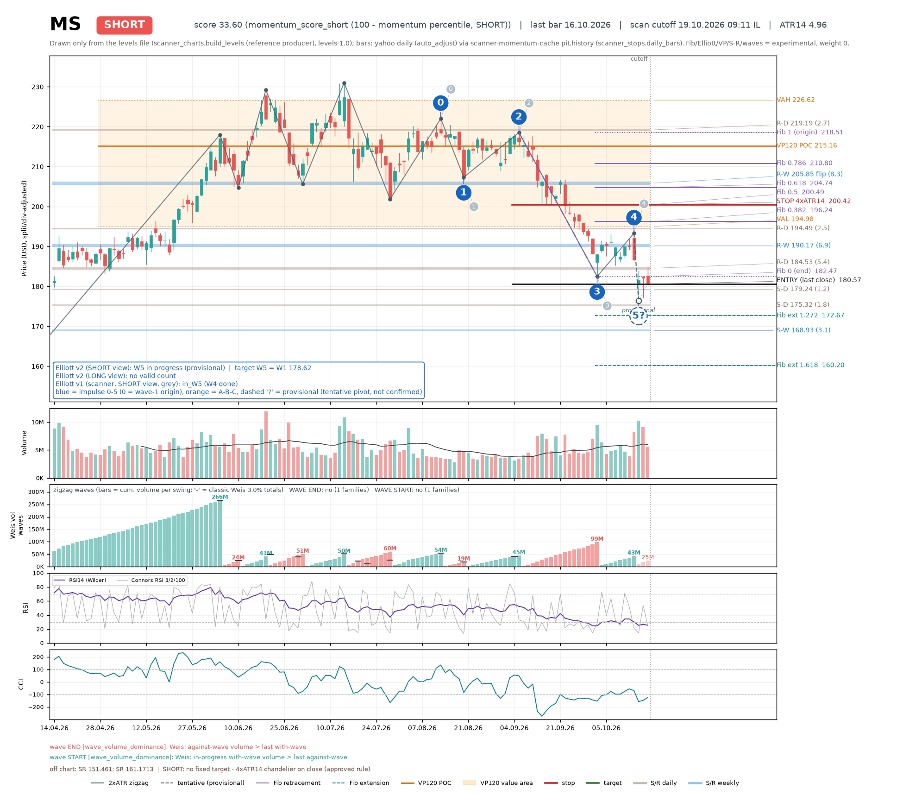
- Jev (typesafe/jev-1.13): 15 כותרות · 4 בביטחון ≥0.8 (סומכים על Jev) · 6 הועברו ל-Claude לשיפוט (ביטחון נמוך או חשד למניפולציה; 0 חשודות, 0 הודעות חברה) · סנטימנט שלילי (-1.00) · קטליזטור analyst · הסכמה עם Claude 2/6
- Grok (grok-4.3, חיפוש X של Grok): ✅ אישור · סנטימנט +0 · ביטחון low · 9 פוסטים · אין חדשות שליליות ב-X נגד השורט · חשבונות מאומתים: —
- Perplexity (perplexity/sonar-pro): ⚠️ דגל · מועד הדוחות הבא המדווח נמצא בתוך אופק ההחזקה המורחב, ובמקביל קיימת אי-ודאות סביב תגובת השוק להורדות יעדי המחיר. · קטליזטור: moderate (2026-10-14 https://www.marketbeat.com/stocks/NYSE/MS/earnings/)
- הדוחות לרבעון השלישי פורסמו ב-14 באוקטובר, עם EPS של 3.03 דולר לעומת תחזית של 2.93 דולר. לא נמצא מקור שמאשר אירוע חברה מהותי נוסף ב-30 הימים הקרובים; מועד הדוחות הבא שדווח הוא 14 בינואר 2027. · דוח הבא: 2027-01-14 · דגלים: ריבוי הורדות יעדי מחיר מצד אנליסטים לאחרונה, למרות שדירוג הקונצנזוס עדיין חיובי. / הדוחות האחרונים כללו הפתעת EPS חיובית, ולכן אין כרגע מקור שמאשר קיצוץ תחזית או הידרדרות חשבונאית. / התרשים מציג מגמת ירידה מתחת לאזורי התנגדות, אך המניה סמוכה לאזורי תמיכה ולכן קיים סיכון לריבאונד.
- Claude, אנליסט (anthropic/claude-sonnet-4.5): ביטחון 35/100 · ניטרלי · סיכון: ריבאונד טכני מאזור oversold ותמיכה 179
- תזה: הירידה החדה והאינדיקטורים oversold יוצרים סיכון גבוה לריבאונד טכני, במיוחד כשהמניה קרובה לתמיכה ולאחר דוחות חזקים. הספירה האליוטית תומכת בירידה נוספת ל-178, אך הסיכון-תגמול לא אטרקטיבי כאן. · טכני (מהגרף): המניה בירידה חדה מ-230 ל-180, מתחת לכל הממוצעים (SMA20/50/200) ומתחת ל-VA של VP120. RSI ב-25 ו-CCI ב-123- מצביעים על oversold קיצוני; הספירה האליוטית מציעה W5 לכיוון 178.62, אך המניה כבר קרובה לתמיכה ב-179.24 ולפיבו 1.272 ב-172.67.
- GPT, פרקליט השטן (openai/gpt-5.6-sol): ⛔ וטו · הסיכון הגדול: ריבאונד חד ממצב מכירות־יתר סמוך לתמיכה · המשך הירידה האפשרי מוגבל מול שילוב של מכירות־יתר, תמיכה קרובה ונתוני יסוד חזקים.
- נגד התזה של Claude: הטענה שיחס החוב להון טיפוסי לבנק השקעות אינה מגובה בנתוני השוואה שסופקו.
- האם הגרף נראה נכון? (ניסיוני): Grok: no: ספירת אליוט ו-Fib נראות תקינות על הגרף · Perplexity: no: הספירה והעוגנים נראים עקביים עם ירידה מאזור 218 לערך לכיוון 178, וההתנגדויות והתמיכות מסומנות באופן סביר. · Claude: no: הספירה האליוטית (W5 פרובזיונלי) והפיבו מעוגנים היטב בפיבוטים המסומנים; S/R נראים הגיוניים · GPT: yes: ספירת W5 עדיין provisional, והיעד 178.62 כמעט הושג בתוך אזור תמיכה, כך שאין לה ערך רב להצדקת שורט חדש. · קלט: grok=img pplx=img claude=img gpt=img
- אתגור הדדי: Claude 35 (neutral) מול GPT veto: הסכמה שלילית: Claude חלש, GPT וטו
21. C – שורט · דירוג 28.0
- רמות (קובץ הרמות, נר אחרון 2026-10-16, hash b72ad89c21edb074): כניסה 124.26 · סטופ 138.15 (chandelier_close 4.0xATR14, ATR14=3.4720) · יעד: אין – ללא יעד קבוע - שנדלייר 4xATR14 על סגירה (כלל מאושר)
- טכני: SMA20 129.06 · SMA50 132.67 · SMA200 125.63 · מומנטום 12-1 0.358 · RSI14 38.4 · CCI20 -98
- ניסיוני (משקל 0): אליוט v2: W2 in progress (provisional) · אליוט v1: in_W4 (W3 done) · פיבו v2 133.50→120.20 (1.618=111.98) · VP120 POC 131.78 (VAH 137.67, VAL 123.08) · תמיכה 122.98 · התנגדות 130.94 · סוף גל: 2 משפחות (volume_exhaustion,momentum_divergence) · תחילת גל: 1 (wave_volume_dominance)
- דוח: מותר - דוח בעוד 60 ימי מסחר · מקורות: 2027-01-14 (Yahoo calendar); 2027-01-13 (Perplexity (מאושר, עם מקורות))
- סוויפ נזילות (ייחוס בלבד, משקל 0): כן (לונג, רמה 123.57 pivot)
- ספירלת פיבו – יעדי ייחוס בלבד (משקל 0, לא משנה סטופ/יעד; השורט נשאר עם סטופ נגרר 4×ATR בלי יעד): T1 126.14 (circle:0.786@fib1.0) · T2 126.14 (fan:1@fib1.0) · מצב: triggered_earlier
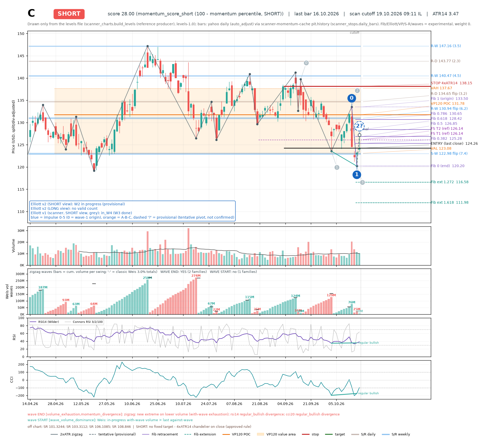
- Jev (typesafe/jev-1.13): 15 כותרות · 2 בביטחון ≥0.8 (סומכים על Jev) · 8 הועברו ל-Claude לשיפוט (ביטחון נמוך או חשד למניפולציה; 0 חשודות, 0 הודעות חברה) · סנטימנט חיובי (+0.43) · קטליזטור earnings · הסכמה עם Claude 7/8
- Grok (grok-4.3, חיפוש X של Grok): ✅ אישור · סנטימנט +0 · ביטחון low · 0 פוסטים · אין חדשות שליליות ב-X · חשבונות מאומתים: —
- Perplexity (perplexity/sonar-pro): ⚠️ דגל · מועד הדוחות הבא אינו בתוך כ-15 ימי המסחר, אך קיימת אי-ודאות טכנית משמעותית והורדות יעדי מחיר לאחר הדוחות מצדיקות דגל ולא אישור מלא. · קטליזטור: moderate (2026-10-13 https://www.citigroup.com/rcs/citigpa/storage/public/Earnings/Q32026/2026prqtr3rslt.pdf)
- סיטי פרסמה ב-13 באוקטובר תוצאות רבעון שלישי חזקות מהצפי, עם רווח למניה של 2.85 דולר והכנסות של 23.85 מיליארד דולר. במהלך 30 הימים הקרובים לא זוהה אירוע חברה בינארי מתוזמן נוסף; הכנס הבא צפוי בינואר. · דוח הבא: 2027-01-13 · דגלים: המדדים ירדו לאחר הדוחות למרות הכאת תחזיות, מה שמצביע על חששות לגבי קיימות צמיחת הרווח, פעילות המסחר ועלויות אשראי. / מספר בתי השקעות הורידו יעדי מחיר לאחר הדוחות, כולל RBC, TD Cowen ו-UBS. / קיימים סיכוני אשראי וביצוע אסטרטגי לבנק, אך לא נמצא במקורות שנבדקו אירוע חדש מאומת של ליטיגציה, דילול או קנס רגולטורי בתקופה הרלוונטית.
- Claude, אנליסט (anthropic/claude-sonnet-4.5): ביטחון 45/100 · ניטרלי · סיכון: דיברגנציה בולית רגילה ב-RSI/CCI עם exhaustion נפחי בקרבת תמיכה שבועית
- תזה: SHORT נגד התנגדות טכנית חזקה (POC 131.78, VAH 137.67, Fib 0.382-0.618 ברצועה 125-128) לאחר ניסיון התאוששות כושל; דיברגנציה בולית ו-exhaustion נפחי מהווים סיכון משמעותי לתזה. אנליסטים הורידו יעדים למרות דוחות חזקים, מה שמצביע על חששות לגבי קיימות הצמיחה. · טכני (מהגרף): המניה סגרה ב-124.26 לאחר ירידה של 7.5% ב-15 ימים, מתחת ל-SMA20/50 אך קרוב ל-SMA200. RSI 38.4 ו-CCI -97.6 מצביעים על oversold עם דיברגנציה בולית רגילה ב-RSI ו-CCI; נפח התמוטטות נמוך מהקודם (exhaustion). הכניסה 124.26 קרובה לתמיכה שבועית 122.98 ומעל VAL של VP120 (123.08).
- GPT, פרקליט השטן (openai/gpt-5.6-sol): ⛔ וטו · הסיכון הגדול: היפוך שורי מתמיכה לאחר מיצוי מוכרים · צבר סימני ההיפוך הטכניים והחדשות העסקיות החיוביות סותר שורט חדש באזור תמיכה.
- נגד התזה של Claude: התזה נשענת על התנגדויות שמעל המחיר, אך מתעלמת מכך שהכניסה עצמה קרובה לתמיכה ומגובה בדיברגנציה שורית.
- האם הגרף נראה נכון? (ניסיוני): Grok: n/a: אין פוסטים רלוונטיים · Perplexity: yes: הספירה הראשית מסומנת כפרוביזורית, והתרשים עצמו מציג סטייה שורית ב-RSI וב-CCI לאחר ירידה חדה, ולכן איני מסכים בביטחון עם ספירת השורט או עם עוגן הפיבוט. · Claude: no: ספירת Elliott v2 (W2 provisional) והעיגון פיבונאצ'י (133.5→120.2) נראים סבירים; רמות S/R שבועיות מתואמות עם אזורי נפח · GPT: yes: ספירת אליוט המצוירת זמנית וסותרת בין הגרסאות, ולכן אינה בסיס אמין להמשך הירידה. · קלט: grok=img pplx=img claude=img gpt=img
- אתגור הדדי: Claude 45 (neutral) מול GPT veto: מעורב
22. PLTR – לונג · דירוג 28.0
- רמות (קובץ הרמות, נר אחרון 2026-10-16, hash 862b8284c79096ef): כניסה 186.03 · סטופ 155.00 (chandelier_close 4.0xATR14, ATR14=7.7572) · יעד: 242.84 – חצי ב-Fib 1.618 (סגירה), השאר בשנדלייר 4xATR
- טכני: SMA20 193.55 · SMA50 182.57 · SMA200 152.65 · מומנטום 12-1 -0.019 · RSI14 46.3 · CCI20 -24
- ניסיוני (משקל 0): אליוט v2: W2 in progress (provisional) · אליוט v1: no valid count · פיבו v2 164.55→212.94 (1.618=242.84) · VP120 POC 135.14 (VAH 172.44, VAL 114.90) · תמיכה 171.05 · התנגדות 187.47 · סוף גל: 0 משפחות (—) · תחילת גל: 0 (—)
- דוח: מותר - דוח בעוד 11 ימי מסחר · מקורות: 2026-11-02 (Yahoo calendar)
- סוויפ נזילות (ייחוס בלבד, משקל 0): לא · עבר בדיקה, שביר, משקל 0
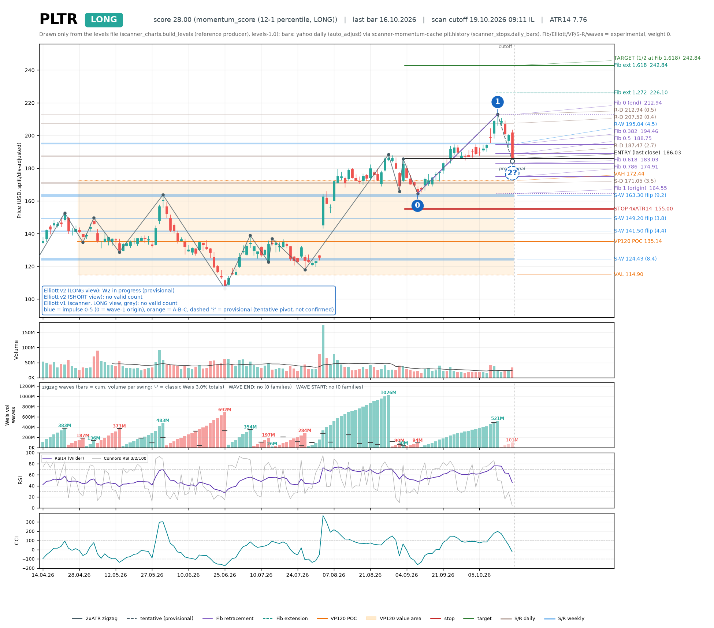
- Jev (typesafe/jev-1.13): 15 כותרות · 0 בביטחון ≥0.8 (סומכים על Jev) · 7 הועברו ל-Claude לשיפוט (ביטחון נמוך או חשד למניפולציה; 0 חשודות, 1 הודעות חברה) · סנטימנט — · קטליזטור — · הסכמה עם Claude 7/7
- Grok (grok-4.3, חיפוש X של Grok): ✅ אישור · סנטימנט +2 · ביטחון high · 9 פוסטים · סנטימנט חיובי חזק ב-X תומך ב-LONG · חשבונות מאומתים: —
- Perplexity (perplexity/sonar-pro): ⚠️ דגל · כניסה כעת מסומנת בגלל דוחות צפויים בתוך כ-15 ימי מסחר, אף שמועד הדוחות עדיין לא אושר רשמית. · קטליזטור: moderate (2026-11-02 https://finance.yahoo.com/quote/PLTR/research-reports/)
- בחלון האחרון נרשמה התחזקות משמעותית בסיקור האנליסטים, כולל העלאות דירוג ויעדי מחיר של Goldman Sachs, Barclays, Baird ו-Mizuho. בחודש הקרוב צפויים פרסום תוצאות הרבעון השלישי, לפי דיווחים שטרם אושרו רשמית, והמשך תגובה אפשרית לחוזה Anduril בשווי 1.8 מיליארד דולר שבו Palantir עשויה ליהנות מהזדמנות עסקית עקיפה. · דוח הבא: 2026-11-02 (לא מאושר) · דגלים: מועד הדוחות ל-2 בנובמבר מופיע במקור פיננסי אך החברה טרם אישרה אותו, ולכן קיים סיכון לאירוע בינארי קרוב. / תמחור גבוה ותלות בהמשך צמיחה מהירה ובהתרחבות שוק ה-AI עלולים להגדיל את סיכון האכזבה. / ניכרת מחלוקת בין האנליסטים: לצד העלאות דירוג קיימת גם המלצת Hold ויעד נמוך יותר; לא נמצא בחומרים שנאספו דיווח מאומת על קיצוץ תחזית, חוב חריג, ליטיגציה או בעיית חשבונאות.
- Claude, אנליסט (anthropic/claude-sonnet-4.5): ביטחון 42/100 · ניטרלי · סיכון: דוח רבעוני בעוד 11 ימים עם תמחור גבוה מאוד ומומנטום חלש
- תזה: הטענה לטובת הלונג: פריצה מעל 212.94 דולר הושלמה, אנליסטים תומכים ביעדים גבוהים, ומגזר ה-AI ממשיך לצמוח. הטענה נגד: המומנטום חלש, המניה מתחת ל-SMA20, תבנית bearish בסגירה, והתמחור יקר מאוד עם סיכון גבוה לאכזבה לקראת הדוח. · טכני (מהגרף): המניה נסגרה ב-186.03 דולר, מתחת ל-SMA20 (193.55) ומעל ל-SMA50 (182.57), עם תבנית bearish engulfing בסגירה האחרונה. RSI ב-46.27 ו-CCI שלילי מצביעים על חולשה לטווח קצר, והמומנטום הנמוך (ציון 28) מעיד על היעדר כוח דחף חיובי.
- GPT, פרקליט השטן (openai/gpt-5.6-sol): ⛔ וטו · הסיכון הגדול: אכזבה בדוח תחת תמחור קיצוני ומומנטום חלש · החולשה הטכנית, ההתנגדות הקרובה, התמחור והסיכון הבינארי סותרים כרגע את לונג המומנטום.
- נגד התזה של Claude: הטענה שפריצה מעל 212.94 הושלמה אינה נתמכת בסגירה של 186.03 ובנסיגה החדה המוצגת בגרף.
- האם הגרף נראה נכון? (ניסיוני): Grok: no: ספירת Elliott ו-Fib נראים תקינים · Perplexity: yes: הספירה הראשית מסומנת כפרוביזורית, והגל המסומן כגל 2 טרם אושר; לכן אין בסיס מספיק לקבל את ספירת Elliott ואת עוגני Fib ו-S/R כאימות טכני מלא. · Claude: no: ספירת אליוט W2 זמנית והעיגון פיבונאצ'י מ-164.55 ל-212.94 נראים סבירים על הגרף · GPT: yes: ספירת W2 מסומנת כזמנית ללא פיבוט מאושר, בעוד עוגן הפיבונאצ'י וההתנגדות הקרובה נראים סבירים. · קלט: grok=img pplx=img claude=img gpt=img
- אתגור הדדי: Claude 42 (neutral) מול GPT veto: הסכמה שלילית: Claude חלש, GPT וטו
23. MSFT – לונג · דירוג 26.2
- רמות (קובץ הרמות, נר אחרון 2026-10-16, hash ca89f545e30b359d): כניסה 529.05 · סטופ 481.02 (chandelier_close 4.0xATR14, ATR14=12.01) · יעד: 590.65 – חצי ב-Fib 1.618 (סגירה), השאר בשנדלייר 4xATR
- טכני: SMA20 520.22 · SMA50 505.37 · SMA200 434.03 · מומנטום 12-1 -0.023 · RSI14 57.4 · CCI20 60
- ניסיוני (משקל 0): אליוט v2: W2 in progress (provisional) · אליוט v1: in_W4 (W3 done) · פיבו v2 487.23→551.15 (1.618=590.65) · VP120 POC 391.09 (VAH 486.32, VAL 348.54) · תמיכה 523.00 · התנגדות 549.92 · סוף גל: 2 משפחות (volume_exhaustion,wave_volume_dominance) · תחילת גל: 2 (wave_volume_dominance,momentum_divergence)
- דוח: מותר - דוח בעוד 8 ימי מסחר · מקורות: 2026-10-28 (Yahoo calendar); 2026-10-28 (Perplexity (מאושר, עם מקורות))
- סוויפ נזילות (ייחוס בלבד, משקל 0): לא · עבר בדיקה, שביר, משקל 0
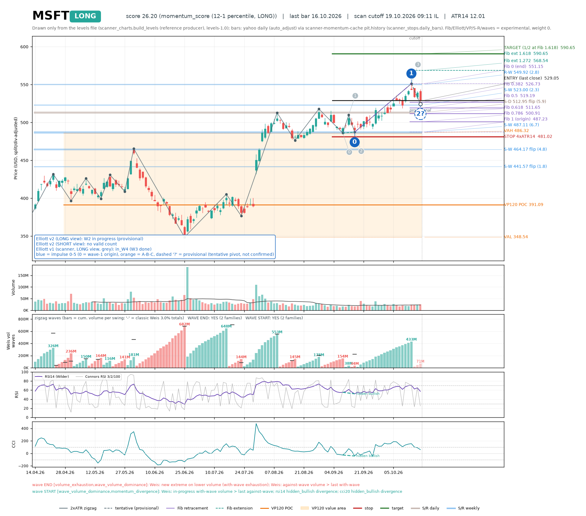
- Jev (typesafe/jev-1.13): 15 כותרות · 2 בביטחון ≥0.8 (סומכים על Jev) · 1 הועברו ל-Claude לשיפוט (ביטחון נמוך או חשד למניפולציה; 0 חשודות, 0 הודעות חברה) · סנטימנט שלילי (-0.28) · קטליזטור regulatory · הסכמה עם Claude 0/1
- Grok (grok-4.3, חיפוש X של Grok): ⛔ וטו · סנטימנט -1 · ביטחון medium · 2 פוסטים · חדשות שליליות על נסיגה מפרויקט AI · חשבונות מאומתים: @Apex__Invest, @Riquetrading
- Perplexity (perplexity/sonar-pro): ⚠️ דגל · הדוח המאושר ל-28 באוקטובר נמצא בתוך חלון ההחזקה הקצר ולכן מצדיק FLAG, אף שלא נמצא טעם מתועד ל-VETO. · קטליזטור: strong (2026-10-28 https://news.microsoft.com/source/2026/10/07/microsoft-announces-quarterly-earnings-release-date-69/)
- הדוח הרבעוני הבא של מיקרוסופט מתוכנן ל-28 באוקטובר 2026 לאחר סגירת המסחר, ולכן הוא קטליזטור קרוב ומשמעותי. ב-5 באוקטובר דווח על שדרוג דירוג ל-Buy, וב-7 באוקטובר החברה אישרה רשמית את מועד הדוח; לא נמצא אירוע חברה משמעותי נוסף המאומת ל-30 הימים הקרובים. · דוח הבא: 2026-10-28 · דגלים: הדוח מתפרסם בתוך כ-15 ימי מסחר, ולכן קיימת חשיפת אירוע בינארי משמעותית לפוזיציית LONG. / הוצאות ההון הצפויות לשנת הכספים 2027 הן כ-175 מיליארד דולר, בעוד שתזרים המזומנים החופשי ברבעון הרביעי ירד ב-23.2%. / לא נמצאו בתוצאות שנאספו ראיות חדשות ומאומתות לחשבונאות בעייתית, דילול חריג, חוב חריג או התפתחות ליטיגציה מהותית בתקופה שנבדקה.
- Claude, אנליסט (anthropic/claude-sonnet-4.5): ביטחון 25/100 · מתנגד · סיכון: דוח רבעוני בעוד 8 ימים עם חשיפה בינארית מלאה, וסימני תשישות טכנית בשיא
- תזה: הבוט מנסה לתפוס המשך מגמה לאחר שיא חדש, אך הטכני מראה תשישות (bearish engulfing, נפח נמוך, מומנטום חלש) והספירה האליוטית אינה מאושרת. הדוח הקרוב (8 ימים) והסנטימנט השלילי (רגולציה, ביטול עסקה) מגבירים סיכון, והכניסה בשיא ללא פולבק מקטינה את יחס סיכון-תגמול. · טכני (מהגרף): המניה סגרה בשיא חדש (529.05) אך הדפוס האחרון הוא bearish engulfing עם נפח תשישות, והמומנטום חלש (26.2, momentum_12_1 שלילי). RSI 57.36 ו-CCI 60.34 מעל 50 אך לא בקנייה יתר; הספירה האליוטית v2 מסומנת כ-provisional (W2 in progress), מה שמעיד על אי-ודאות מבנית.
- GPT, פרקליט השטן (openai/gpt-5.6-sol): ⛔ וטו · הסיכון הגדול: דוח בינארי קרוב מול תשישות טכנית · המומנטום החלש, אות ההיפוך והסיכון הבינארי הקרוב סותרים עסקת המשך LONG.
- נגד התזה של Claude: החולשה בתזה היא הטענה לכניסה בשיא חדש, אף שהסגירה 529.05 נמוכה מהקצה 551.15.
- האם הגרף נראה נכון? (ניסיוני): Grok: no: ספירה ו-Fib נראים תקינים · Perplexity: yes: הספירה הראשית מסומנת כפרוביזורית, והגל הנוכחי לאחר השיא נראה לא מאושר; גם עוגן הפיבונאצ'י ורמות ההתנגדות אינם חד-משמעיים מהמבנה הגרפי. · Claude: yes: הספירה v2 מסומנת כ-provisional ו-W2 in progress לא ברור על הגרף; העיגון הפיבונאצ'י מ-487.23 ל-551.15 נראה סביר אך הכניסה בשיא ללא W2 מאושר מסוכנת. · GPT: yes: ספירת W2 המצוירת זמנית, נשענת על ציר לא מאושר וסותרת את ספירת W4 החלופית. · קלט: grok=img pplx=img claude=img gpt=img
- אתגור הדדי: Claude 25 (opposes) מול GPT veto: הסכמה שלילית: Claude חלש, GPT וטו
24. DIS – לונג · דירוג 24.3
- רמות (קובץ הרמות, נר אחרון 2026-10-16, hash 9ea1b96d7be4c16a): כניסה 110.59 · סטופ 102.13 (chandelier_close 4.0xATR14, ATR14=2.1148) · יעד: 113.39 – חצי ב-Fib 1.618 (סגירה), השאר בשנדלייר 4xATR
- טכני: SMA20 105.87 · SMA50 106.11 · SMA200 103.10 · מומנטום 12-1 -0.043 · RSI14 65.4 · CCI20 168
- ניסיוני (משקל 0): אליוט v2: W4 correction zigzag: C done -> W5 may start · אליוט v1: no valid count · פיבו v2 94.46→111.87 (1.618=122.63) · VP120 POC 103.60 (VAH 108.25, VAL 98.15) · תמיכה 109.77 · התנגדות 111.27 · סוף גל: 1 משפחות (wave_volume_dominance) · תחילת גל: 2 (volume_exhaustion,wave_volume_dominance)
- דוח: מותר - דוח בעוד 22 ימי מסחר · מקורות: 2026-11-17 (Yahoo calendar); 2026-11-17 (Perplexity (מאושר, עם מקורות))
- סוויפ נזילות (ייחוס בלבד, משקל 0): כן (שורט, רמה 111.87 pivot) · עבר בדיקה, שביר, משקל 0
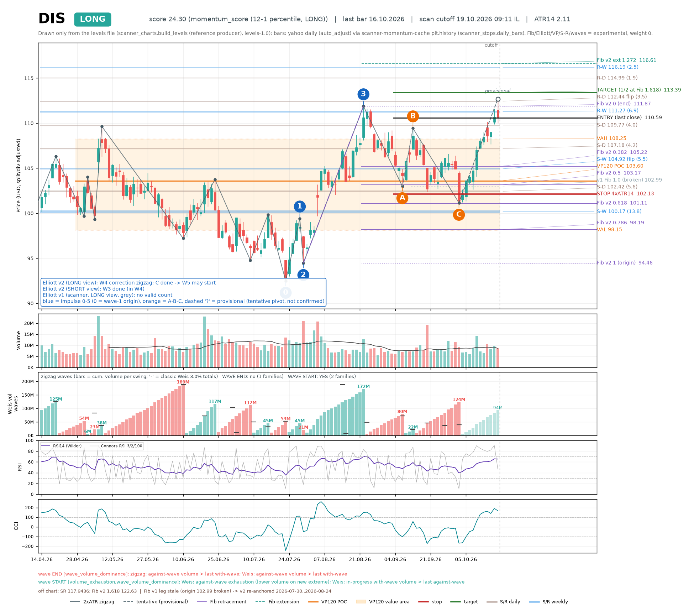
- Jev (typesafe/jev-1.13): 12 כותרות · 0 בביטחון ≥0.8 (סומכים על Jev) · 7 הועברו ל-Claude לשיפוט (ביטחון נמוך או חשד למניפולציה; 0 חשודות, 1 הודעות חברה) · סנטימנט — · קטליזטור — · הסכמה עם Claude 5/7
- Grok (grok-4.3, חיפוש X של Grok): ✅ אישור · סנטימנט +0 · ביטחון low · 4 פוסטים · סנטימנט מעורב ללא סיבה X-ברורה נגד LONG · חשבונות מאומתים: @SterlingCharts, @CharmaeThinks
- Perplexity (perplexity/sonar-pro): ⚠️ דגל · הדוחות הבאים מתוכננים ל-17 בנובמבר 2026, בתוך כ-15 ימי המסחר הקרובים ובאופק ההחזקה, ולכן קיימת חשיפה לאירוע בינארי. · קטליזטור: moderate (2026-11-17 https://www.zacks.com/stock/research/DIS/earnings-calendar)
- הקטליזטור המרכזי הוא פרסום דוחות הרבעון הרביעי ב-17 בנובמבר 2026, אירוע בינארי שנמצא מעבר ל-30 הימים הקרובים אך בתוך אופק ההחזקה האפשרי. ב-30 הימים האחרונים לא נמצא אירוע חברה חתום או שינוי תחזית חיובי רשמי; בתקופה הקרובה לא זוהה קטליזטור ספציפי נוסף ממקור שנבדק. · דוח הבא: 2026-11-17 · דגלים: פרסום הדוחות ב-17 בנובמבר הוא אירוע בינארי במהלך אופק ההחזקה ועלול לגרום לתנודתיות משמעותית. / ריימונד ג'יימס הוריד את יעד המחיר ל-$119, תוך ציון חולשה בפארקים הבינלאומיים, במיוחד באסיה ובסין. / קיימת אי-ודאות סביב עמידה בתחזית הרווח העתידית; המקורות שנבדקו לא דיווחו על בעיית חשבונאות, דילול, ליטיגציה מהותית, חוב חריג או פעולה רגולטורית חדשה.
- Claude, אנליסט (anthropic/claude-sonnet-4.5): ביטחון 45/100 · ניטרלי · סיכון: דוח רבעוני ב-17 בנובמבר באמצע אופק ההחזקה, חולשה בפארקים בינלאומיים
- תזה: התיקון הטכני הושלם והמניה מעל אזור ערך, עם אישור אנליסטים חיובי מסיטיגרופ. עם זאת, המומנטום חלש (ציון 24.3), היעד קרוב להתנגדות, והדוח הרבעוני בעוד 3 שבועות מהווה סיכון תנודתיות משמעותי. · טכני (מהגרף): המניה השלימה תיקון זיגזג ABC לאחר שיא 3, והתאוששה מעל POC ו-VAL של VP120. RSI 65 ו-CCI 167 מצביעים על מומנטום חיובי, אך המניה נמצאת קרוב להתנגדות שבועית ב-111.27 ויעד הפיב 113.39 נמצא מעליה.
- GPT, פרקליט השטן (openai/gpt-5.6-sol): ⚠️ דגל · הסיכון הגדול: דחייה בהתנגדות השבועית לפני השגת היעד · המשך העלייה אפשרי, אך התנגדות קרובה, מומנטום מבני חלש ויחס תמחור־צמיחה לא תומך מחלישים את ה-LONG.
- נגד התזה של Claude: הטענה שהתיקון הושלם נשענת על ספירת אליוט לא מאומתת ועל שיא אחרון המסומן כזמני.
- האם הגרף נראה נכון? (ניסיוני): Grok: no: ספירת אליוט ו-Fib נראים תואמים למגמה · Perplexity: no: הספירה הראשית והעוגן נראים סבירים ביחס לפיבוטים ולמבנה העלייה, ורמות התמיכה וההתנגדות מסומנות באופן עקבי. · Claude: no: ספירת הזיגזג ABC נראית סבירה, נקודת C מאושרת והעיגון לפיב מ-94.46 ל-111.87 הגיוני למבנה הגל הרחב. · GPT: yes: ספירת W5 אינה מאושרת, v1 חסרת ספירה תקפה, ועוגן Fib v1 מיושן בעוד v2 מציב יעדים שונים. · קלט: grok=img pplx=img claude=img gpt=img
- אתגור הדדי: Claude 45 (neutral) מול GPT flag: מעורב
25. CAT – שורט · דירוג 17.8
- רמות (קובץ הרמות, נר אחרון 2026-10-16, hash 637b4f495ca6c90e): כניסה 730.76 · סטופ 840.51 (chandelier_close 4.0xATR14, ATR14=27.44) · יעד: אין – ללא יעד קבוע - שנדלייר 4xATR14 על סגירה (כלל מאושר)
- טכני: SMA20 805.11 · SMA50 812.76 · SMA200 804.16 · מומנטום 12-1 0.509 · RSI14 30.7 · CCI20 -192
- ניסיוני (משקל 0): אליוט v2: W2 correction expanded flat: C done -> W3 may start · אליוט v1: no valid count · פיבו v2 935.00→771.39 (1.618=670.28) · VP120 POC 817.92 (VAH 924.49, VAL 777.50) · תמיכה 660.89 · התנגדות 736.98 · סוף גל: 2 משפחות (wave_volume_dominance,momentum_divergence) · תחילת גל: 0 (—)
- דוח: מותר - דוח בעוד 9 ימי מסחר · מקורות: 2026-10-29 (Yahoo calendar); 2026-10-29 (Perplexity (מאושר, עם מקורות))
- סוויפ נזילות (ייחוס בלבד, משקל 0): לא
- ספירלת פיבו – יעדי ייחוס בלבד (משקל 0, לא משנה סטופ/יעד; השורט נשאר עם סטופ נגרר 4×ATR בלי יעד): T1 — (—) · T2 — (—) · מצב: none
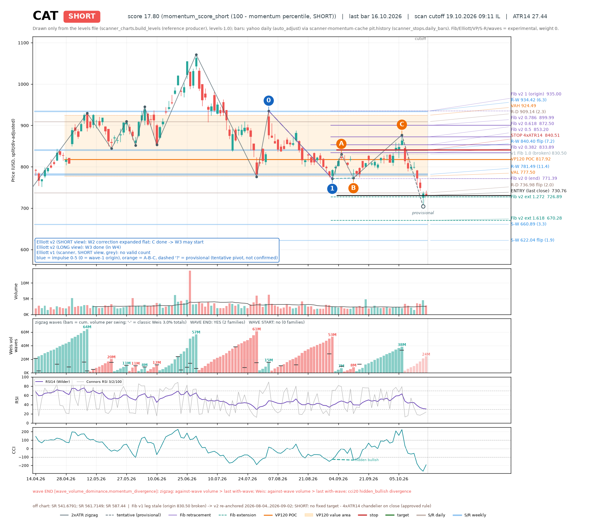
- Jev (typesafe/jev-1.13): 7 כותרות · 0 בביטחון ≥0.8 (סומכים על Jev) · 4 הועברו ל-Claude לשיפוט (ביטחון נמוך או חשד למניפולציה; 0 חשודות, 0 הודעות חברה) · סנטימנט — · קטליזטור — · הסכמה עם Claude 2/4
- Grok (grok-4.3, חיפוש X של Grok): ✅ אישור · סנטימנט +1 · ביטחון low · 2 פוסטים · סנטימנט X מעורב-חיובי אך לא חזק נגד השורט · חשבונות מאומתים: @ElliottForecast, @JaiChotalia
- Perplexity (perplexity/sonar-pro): ⚠️ דגל · הדוחות מתפרסמים בתוך כעשרה ימי מסחר לערך, ולכן קיימת קטליזטור בינארי קרוב לשורט. · קטליזטור: strong (2026-10-29 https://www.caterpillar.com/en/news/corporate-press-releases.html)
- החברה הודיעה ב-15 באוקטובר שתפרסם את תוצאות הרבעון השלישי ב-29 באוקטובר, אירוע מהותי בתוך חלון ההחזקה. בשבועיים האחרונים נרשמו קיצוצי יעדי מחיר על רקע חששות לגבי מומנטום ההזמנות ולחצי מחיר ועלויות על המרווחים. · דוח הבא: 2026-10-29 · דגלים: דוחות הרבעון השלישי צפויים ב-29 באוקטובר, ולכן קיימת אי-ודאות בינארית קרובה לפוזיציית שורט. / קיצוצי יעדי מחיר מרובים מצביעים על חששות לגבי האטה במומנטום ההזמנות ולחצי מחיר ועלויות על המרווחים. / אין במקורות שנבדקו אינדיקציה מאומתת לבעיית חשבונאות, ליטיגציה מהותית, דילול או קיצוץ הנחיות רשמי.
- Claude, אנליסט (anthropic/claude-sonnet-4.5): ביטחון 25/100 · מתנגד · סיכון: oversold קיצוני עם דיברגנציה בוליש ממש לפני דוח רבעוני
- תזה: השורט מתבסס על מומנטום שלילי חזק (ציון 82.2) ומיקום מתחת ל-VA של VP120, אך האינדיקטורים הטכניים מראים oversold קיצוני עם סימני תשישות מוכרים ממש לפני דוח רבעוני. הסיכון-תגמול נראה לא אטרקטיבי כאן. · טכני (מהגרף): המניה נסחרת מתחת לכל הממוצעים (SMA20/50/200 באזור 805-813) לאחר ירידה של 11% ב-15 יום. RSI ב-30.67 וCCI ב-191.96- מצביעים על oversold קיצוני, עם דיברגנציה בוליש נסתרת ב-CCI ונפח נגדי דומיננטי המסמנים סיום גל ירידה אפשרי.
- GPT, פרקליט השטן (openai/gpt-5.6-sol): ⛔ וטו · הסיכון הגדול: היפוך חד ממצב מכירות־יתר לפני הדוח · סימני התשישות, הקרבה לדוח והתמיכה הפונדמנטלית סותרים כניסת שורט מאוחרת.
- נגד התזה של Claude: חולשת התזה של האנליסט היא שמכירות־יתר ודיברגנציה אינן כשלעצמן אישור להיפוך.
- האם הגרף נראה נכון? (ניסיוני): Grok: no: ספירת Elliott SHORT נראית תואמת לגרף · Perplexity: no: הספירה, עוגן פיבונאצ'י ורמות התמיכה/התנגדות נראים סבירים ביחס לשיאים ולשפלים המוצגים, אף שהפיבוט האחרון מסומן כזמני. · Claude: no: ספירת אליוט v2 (W2 expanded flat הושלם) והעיגון מחדש של פיבונאצ'י נראים סבירים על הגרף · GPT: yes: ספירת W3 אינה מאושרת משום שהשפל האחרון מסומן זמני, בעוד ספירת v1 כלל אינה תקפה. · קלט: grok=img pplx=img claude=img gpt=img
- אתגור הדדי: Claude 25 (opposes) מול GPT veto: הסכמה שלילית: Claude חלש, GPT וטו
26. DOT – לונג (קריפטו) · דירוג 16.7
- רמות (קובץ הרמות, נר אחרון 2026-10-18, hash ae8e2e8bda20929f): כניסה 1.1166 · סטופ 0.8448 (fixed_close 3.0xATR14, ATR14=0.090621) · יעד: אין – ללא יעד (כלל קריפטו מאושר) - סטופ קבוע 3xATR14 על סגירה יומית UTC
- טכני: SMA20 1.1779 · SMA50 1.1050 · SMA200 1.0462 · מומנטום 12-1 -0.051 · RSI14 46.4 · CCI20 -149
- ניסיוני (משקל 0): אליוט v2: W2 in progress (provisional) · אליוט v1: no valid count · פיבו v2 1.0093→1.2950 (1.618=1.4716) · VP120 POC 0.8459 (VAH 1.1542, VAL 0.7470) · תמיכה 1.0874 · התנגדות 1.1681 · סוף גל: 2 משפחות (wave_volume_dominance,momentum_divergence) · תחילת גל: 1 (momentum_divergence)
- דוח: n/a (crypto)
- סוויפ נזילות (ייחוס בלבד, משקל 0): לא
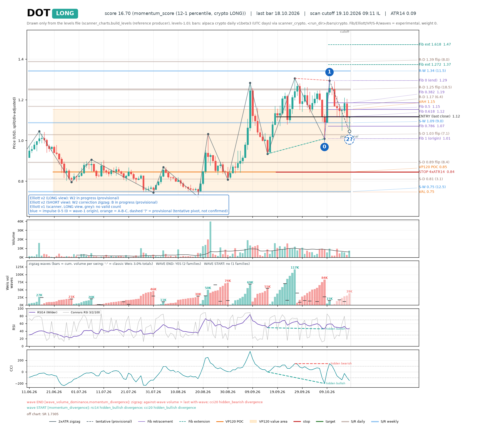
- Grok (סנטימנט ראשי לקריפטו) (grok-4.3, חיפוש X של Grok): ✅ אישור · סנטימנט +0 · ביטחון low · 8 פוסטים · אין חדשות שליליות ברורות · חשבונות מאומתים: @coinranking, @monochizzy
- Jev (typesafe/jev-1.13): 0 כותרות · 0 בביטחון ≥0.8 (סומכים על Jev) · 0 הועברו ל-Claude לשיפוט (ביטחון נמוך או חשד למניפולציה; 0 חשודות, 0 הודעות חברה) · סנטימנט — · קטליזטור —
- Perplexity (perplexity/sonar-pro): ⚠️ דגל · יש קטליזטורים חיוביים אך הם כבר התרחשו, בעוד שהביקוש המוסדי חלש והספירה הגלית עדיין פרוביזורית. · קטליזטור: moderate (2026-10-08 https://openpr.com/news/4665321/polkadot-price-prediction-dot-cuts-new-supply-in-half-eyes)
- הקטליזטור המרכזי הוא השקת dotUSD ב-2026-10-08, לצד שינוי טוקנומיקס שאישר תקרת היצע של 2.1 מיליארד DOT והפחתת ההנפקה ב-53.6%.[3][7] תזרימי ה-ETF מעורבים: TDOT דיווח על 728,000 דולר של כניסות נטו ב-2026-10-12, אך תזרימים שבועיים קודמים היו אפסיים.[5][12] · דוח הבא: — · דגלים: Grayscale משכה באוגוסט 2026 את בקשתה ליצירת מוצר Polkadot, מה שמצביע על חולשה בביקוש המוסדי.[9][10] / תזרימי ETF קודמים היו אפסיים, והיקף הנכסים של TDOT קטן יחסית לשווי השוק של DOT.[8][11] / דווח על ניצול בגשר Polkadot–Ethereum שבו הונפקו כמויות גדולות של DOT; לפי הדיווח, רק 250,000 דולר נגנבו, אך האירוע מעלה סיכון אבטחה.[6]
- Claude, אנליסט (anthropic/claude-sonnet-4.5): ביטחון 42/100 · ניטרלי · סיכון: המשך תיקון מתחת לתמיכה 1.0874 לכיוון הסטופ, עם מומנטום חלש ודיברגנציה שלילית
- תזה: הסטאפ ב-0.8448 מציע יחס סיכון-תגמול סביר אם W2 אכן מסתיים כאן, אך המומנטום החלש, הדיברגנציה השלילית ב-CCI, והמחיר מתחת ל-SMA20 ותמיכה שבועית מצביעים על סיכון להמשך ירידה לפני התאוששות. · טכני (מהגרף): המחיר ב-1.1166 נמצא מעט מתחת לרמת פיבונאצ'י 0.618 (1.1184) ומתחת ל-SMA20 (1.178), עם מומנטום חלש (ציון 16.7). ספירת אליוט v2 מציעה W2 זמנית בתיקון, אך CCI מראה דיברגנציה שלילית נסתרת והמחיר נסחר מתחת לתמיכה שבועית 1.0874.
- GPT, פרקליט השטן (openai/gpt-5.6-sol): ⚠️ דגל · הסיכון הגדול: המשך התיקון ושבירת התמיכה השבועית · החולשה הטכנית והיעדר קטליזטור עתידי ברור מערערים את תזמון הלונג.
- נגד התזה של Claude: הטענה ליחס סיכון־תגמול סביר אינה מבוססת כשאין יעד מוגדר.
- האם הגרף נראה נכון? (ניסיוני): Grok: no: הספירה והעוגנים נראים תקינים · Perplexity: no: הספירה, עוגן פיבונאצ'י ורמות התמיכה נראים עקביים עם המבנה והפיבוטים המוצגים, אך גל W2 מסומן כפרוביזורי. · Claude: no: ספירת W2 זמנית והעיגון של פיבונאצ'י מ-1.0093 ל-1.295 נראים הגיוניים על הגרף · GPT: yes: ספירת אליוט נשענת על נקודת W2 זמנית ולא מאושרת, אף שעוגן הפיבונאצ'י ורמות התמיכה וההתנגדות נראים סבירים. · קלט: grok=img pplx=img claude=img gpt=img
- אתגור הדדי: Claude 42 (neutral) מול GPT flag: מעורב
27. KLAC – שורט · דירוג 13.1
- רמות (קובץ הרמות, נר אחרון 2026-10-16, hash e383249d8f3e7aad): כניסה 165.74 · סטופ 198.32 (chandelier_close 4.0xATR14, ATR14=8.1442) · יעד: אין – ללא יעד קבוע - שנדלייר 4xATR14 על סגירה (כלל מאושר)
- טכני: SMA20 190.48 · SMA50 186.88 · SMA200 180.73 · מומנטום 12-1 0.563 · RSI14 31.1 · CCI20 -185
- ניסיוני (משקל 0): אליוט v2: W2 correction expanded flat: C done -> W3 may start · אליוט v1: no valid count · פיבו v2 214.56→167.05 (1.618=137.69) · VP120 POC 182.77 (VAH 215.62, VAL 167.06) · תמיכה 157.59 · התנגדות 166.13 · סוף גל: 3 משפחות (volume_exhaustion,wave_volume_dominance,momentum_divergence) · תחילת גל: 0 (—)
- דוח: מותר - דוח בעוד 8 ימי מסחר · מקורות: 2026-10-28 (Yahoo calendar); 2026-10-28 (Perplexity (מאושר, עם מקורות))
- סוויפ נזילות (ייחוס בלבד, משקל 0): לא
- ספירלת פיבו – יעדי ייחוס בלבד (משקל 0, לא משנה סטופ/יעד; השורט נשאר עם סטופ נגרר 4×ATR בלי יעד): T1 — (—) · T2 — (—) · מצב: none
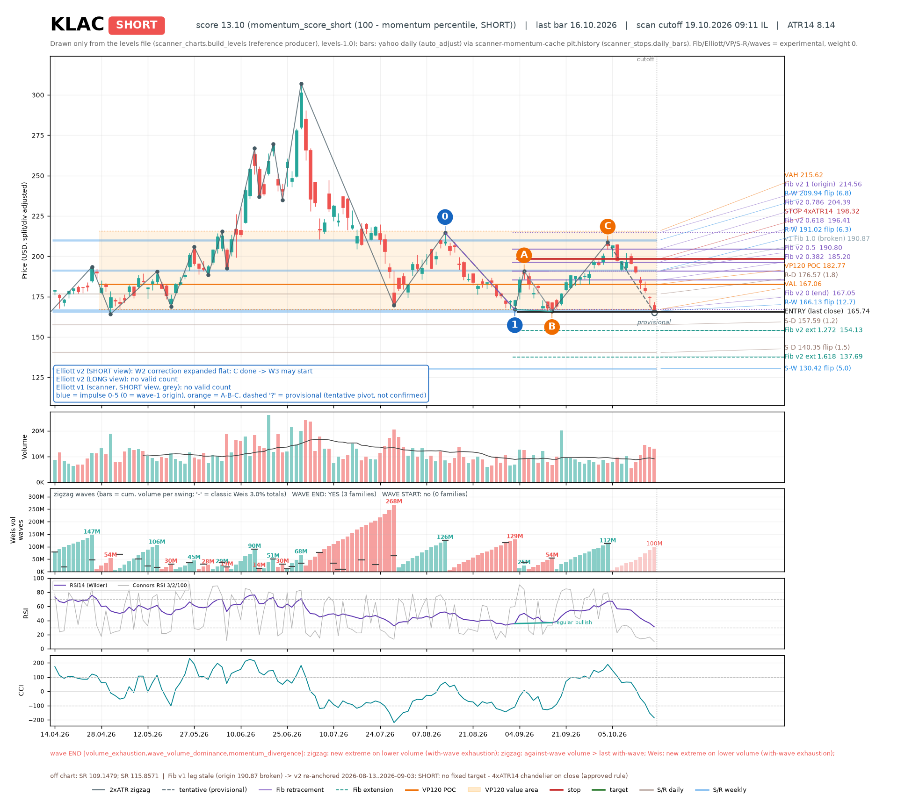
- Jev (typesafe/jev-1.13): 2 כותרות · 0 בביטחון ≥0.8 (סומכים על Jev) · 1 הועברו ל-Claude לשיפוט (ביטחון נמוך או חשד למניפולציה; 0 חשודות, 0 הודעות חברה) · סנטימנט — · קטליזטור — · הסכמה עם Claude 1/1
- Grok (grok-4.3, חיפוש X של Grok): ✅ אישור · סנטימנט +0 · ביטחון low · 1 פוסטים · אין סנטימנט X נגד SHORT · חשבונות מאומתים: @potom_stroiteli
- Perplexity (perplexity/sonar-pro): ⚠️ דגל · הדוחות המתוזמנים ל-28 באוקטובר נמצאים בתוך חלון ההחזקה ומהווים אירוע בינארי משמעותי לשורט. · קטליזטור: strong (2026-10-28 https://ir.kla.com/?action)
- האירוע המרכזי ב-30 הימים הקרובים הוא פרסום תוצאות הרבעון הראשון של שנת הכספים 2027 ב-28 באוקטובר, אירוע בינארי הקרוב למועד העסקה. ב-14 הימים האחרונים המניה ירדה, ובמקביל פורסמו תחזית EPS לרבעון של 1.060–1.260 ועדכוני אנליסטים מעורבים. · דוח הבא: 2026-10-28 · דגלים: פרסום הדוחות צפוי ב-28 באוקטובר, בתוך חלון ההחזקה ובטווח של כ-15 ימי מסחר. / תחזית ה-EPS לרבעון הראשון היא 1.060–1.260, ולכן קיימת אי-ודאות בינארית סביב התוצאות והתחזית. / הורדת יעד המחיר של מורגן סטנלי מ-253 ל-227 מצביעה על סיכון להיחלשות בציפיות האנליסטים; לא נמצא במקורות שנבדקו מידע מאומת על בעיית חשבונאות, תביעה, דילול, חוב או רגולציה.
- Claude, אנליסט (anthropic/claude-sonnet-4.5): ביטחון 35/100 · ניטרלי · סיכון: דוח רבעוני בעוד 8 ימים עם oversold קיצוני ודיברגנציה שורית
- תזה: הסטאפ מזהה momentum שלילי חזק (ציון 86.9) עם 9 ימי ירידה רצופים (שיא היסטורי) ומיקום מתחת ל-VA של VP120. עם זאת, האינדיקטורים הטכניים בקצה oversold עם דיברגנציה שורית ותשישות נפח, והדוח הקרוב יוצר סיכון בינארי משמעותי לשורט. · טכני (מהגרף): המניה בירידה חדה של 11.8% ב-15 ימים, סגרה מתחת לכל הממוצעים (SMA20/50/200) ומתחת ל-VAL של VP120. RSI14 ב-31.05 וCRSI ב-10.12 מצביעים על oversold קיצוני, עם דיברגנציה שורית ברגולרית ב-RSI ואותות תשישות נפח בקצה הגל.
- GPT, פרקליט השטן (openai/gpt-5.6-sol): ⚠️ דגל · הסיכון הגדול: היפוך שורי ממצב מכירות־יתר סביב הדוח הקרוב · המגמה דובית, אך התזמון לשורט פגיע מאוד לתיקון חד ולאירוע דוחות בינארי.
- נגד התזה של Claude: הטענה לתשעה ימי ירידה רצופים נשענת על כותרת על Lam Research ולא על KLAC.
- האם הגרף נראה נכון? (ניסיוני): Grok: n/a: אין דיון ב-X על הספירה · Perplexity: no: ספירת הגלים, עוגן פיבונאצ'י ורמות התמיכה וההתנגדות נראים עקביים עם הירידה האחרונה והכשל מתחת לאזור 198–200. · Claude: no: ספירת Elliott v2 (W2 expanded flat הושלמה, W3 עשויה להתחיל) עקבית עם המבנה הנראה; עיגון Fib v2 מ-214.56 ל-167.05 סביר למגמת הירידה האחרונה. · GPT: yes: ספירת תחילת W3 אינה משכנעת כשהשפל מסומן זמני ומופיעים בו דיברגנציה שורית ואותות סיום גל. · קלט: grok=img pplx=img claude=img gpt=img
- אתגור הדדי: Claude 35 (neutral) מול GPT flag: מעורב
28. SHOP – לונג · דירוג 9.3
- רמות (קובץ הרמות, נר אחרון 2026-10-16, hash 6e3d97ce5f62db34): כניסה 169.52 · סטופ 138.31 (chandelier_close 4.0xATR14, ATR14=7.8029) · יעד: 208.31 – חצי ב-Fib 1.618 (סגירה), השאר בשנדלייר 4xATR
- טכני: SMA20 157.92 · SMA50 149.35 · SMA200 129.70 · מומנטום 12-1 -0.177 · RSI14 61.0 · CCI20 82
- ניסיוני (משקל 0): אליוט v2: W4 correction flat: B in progress (provisional) · אליוט v1: in_W5 (W4 done) · פיבו v2 136.49→180.88 (1.618=208.31) · VP120 POC 108.77 (VAH 142.65, VAL 94.00) · תמיכה 157.68 · התנגדות 171.36 · סוף גל: 2 משפחות (volume_exhaustion,wave_volume_dominance) · תחילת גל: 0 (—)
- דוח: מותר - דוח בעוד 12 ימי מסחר · מקורות: 2026-11-03 (Yahoo calendar); 2026-11-03 (Perplexity (מאושר, עם מקורות))
- סוויפ נזילות (ייחוס בלבד, משקל 0): לא · עבר בדיקה, שביר, משקל 0
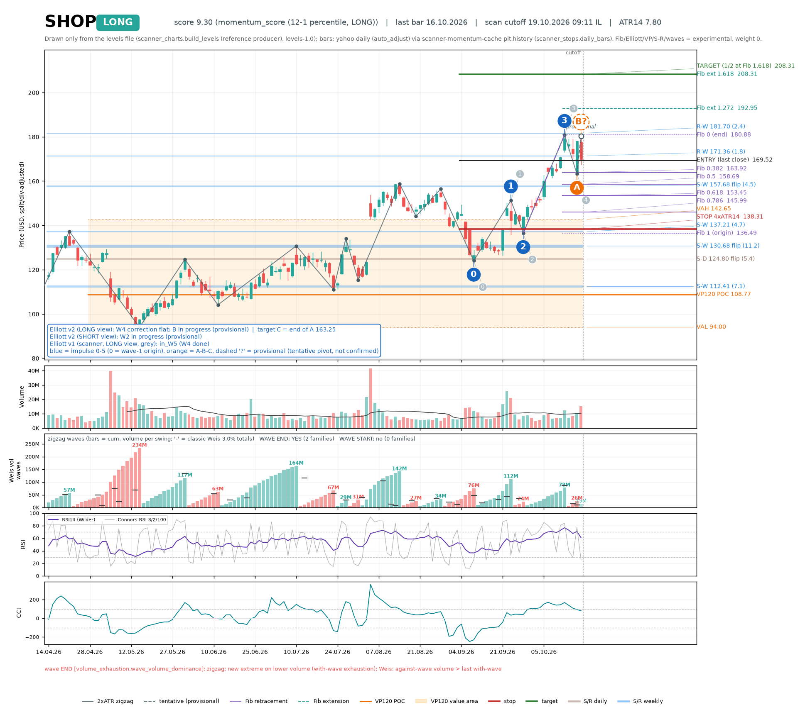
- Jev (typesafe/jev-1.13): 7 כותרות · 1 בביטחון ≥0.8 (סומכים על Jev) · 4 הועברו ל-Claude לשיפוט (ביטחון נמוך או חשד למניפולציה; 0 חשודות, 0 הודעות חברה) · סנטימנט חיובי (+1.00) · קטליזטור product · הסכמה עם Claude 3/4
- Grok (grok-4.3, חיפוש X של Grok): ✅ אישור · סנטימנט +1 · ביטחון medium · 6 פוסטים · אין סנטימנט שלילי ברור ב-X נגד ה-LONG · חשבונות מאומתים: @vstocks7, @YankeeEuroLens
- Perplexity (perplexity/sonar-pro): ⚠️ דגל · הדוחות ב-3 בנובמבר 2026 נמצאים בתוך אופק ההחזקה הקצר ומהווים אירוע בינארי קרוב, למרות מומנטום חיובי והעלאות יעדי מחיר. · קטליזטור: strong (2026-11-03 https://www.shopify.com/news/shopify-q3-2026-financial-advisory)
- Shopify צפויה לפרסם את תוצאות הרבעון השלישי ב-3 בנובמבר 2026 לפני פתיחת המסחר, ולכן אירוע בינארי נמצא בתוך אופק ההחזקה. ב-14 הימים האחרונים נרשמו העלאות יעד מחיר מצד RBC, Baird, Stifel, JPMorgan ו-Cantor, על רקע ציפיות לצמיחת GMV ולהכנסות חזקות. · דוח הבא: 2026-11-03 · דגלים: הדוחות הקרובים נמצאים בתוך כ-15 ימי מסחר ומהווים סיכון בינארי לפוזיציית סווינג. / המקורות מציינים ציפיות להמשך צמיחה חזקה, אך לא נמצאה במידע שנאסף העלאת תחזית רשמית של החברה. / לא נמצאה במידע שנאסף אינדיקציה מהותית לחשבונאות, ליטיגציה, חוב, דילול או רגולציה; נדרשת בדיקת דיווחי SEC עדכניים.
- Claude, אנליסט (anthropic/claude-sonnet-4.5): ביטחון 45/100 · ניטרלי · סיכון: דוח רבעוני בעוד 12 ימים עם כניסה בשיא לאחר ראלי חד
- תזה: הפריצה הטכנית מעל התנגדות שבועית 171.36$ נתמכת בסנטימנט אנליסטים חיובי לקראת דוח, אך הכניסה בגובה שיא מקומי עם אינדיקטורי תשישות ודוח בינארי קרוב מעלה את הסיכון. היעד 208$ (Fib 1.618) אטרקטיבי אך דורש זמן והדוח עלול לקצר את אופק ההחזקה. · טכני (מהגרף): המניה פרצה מעל ממוצעים נעים (SMA20/50/200) לאחר עלייה של 19% ב-15 ימים, אך RSI 61 ו-CCI 82 מצביעים על קנייה מוגזמת קצרת טווח. אינדיקטורי נפח מזהירים על תשישות (volume exhaustion) ודומיננטיות של נפח נגדי בגל האחרון.
- GPT, פרקליט השטן (openai/gpt-5.6-sol): ⚠️ דגל · הסיכון הגדול: דוח בינארי קרוב לאחר ראלי חד ותשישות נפח · המגמה ארוכת הטווח חיובית, אך הכניסה מתחת להתנגדות עם תשישות, תמחור גבוה ודוח קרוב מחלישה מהותית את יחס הסיכוי־סיכון.
- נגד התזה של Claude: החולשה המרכזית היא הטענה שכבר הייתה פריצה מעל 171.3587, כאשר הסגירה האחרונה היא 169.52.
- האם הגרף נראה נכון? (ניסיוני): Grok: no · Perplexity: no: הספירה, עוגן פיבונאצ'י ורמות התמיכה וההתנגדות נראים עקביים באופן סביר עם מבנה העלייה והנסיגה המוצג, אף שהספירה כוללת רכיבים זמניים. · Claude: no: ספירת Elliott v2 (תיקון שטוח W4 עם B בתהליך) והעיגון של Fib מ-136.49 ל-180.88 נראים סבירים על הגרף · GPT: yes: הספירה הראשית פרוביזורית וסותרת את תרחיש W5, בעוד עוגן הפיבונאצ'י מסתמך על שיא שממנו כבר נרשמה נסיגה חדה. · קלט: grok=img pplx=img claude=img gpt=img
- אתגור הדדי: Claude 45 (neutral) מול GPT flag: מעורב
29. NOW – לונג · דירוג 7.5
- רמות (קובץ הרמות, נר אחרון 2026-10-16, hash 85bd990cae3725de): כניסה 141.97 · סטופ 115.63 (chandelier_close 4.0xATR14, ATR14=6.5857) · יעד: 158.19 – חצי ב-Fib 1.618 (סגירה), השאר בשנדלייר 4xATR
- טכני: SMA20 137.92 · SMA50 134.85 · SMA200 115.03 · מומנטום 12-1 -0.233 · RSI14 55.5 · CCI20 161
- ניסיוני (משקל 0): אליוט v2: W2 correction zigzag: C done -> W3 may start · אליוט v1: no valid count · פיבו v2 91.53→149.60 (1.618=185.49) · VP120 POC 102.63 (VAH 123.95, VAL 86.82) · תמיכה 137.48 · התנגדות 142.10 · סוף גל: 1 משפחות (wave_volume_dominance) · תחילת גל: 2 (volume_exhaustion,wave_volume_dominance)
- דוח: מותר - דוח בעוד 8 ימי מסחר · מקורות: 2026-10-28 (Yahoo calendar); 2026-10-28 (Perplexity (מאושר, עם מקורות))
- סוויפ נזילות (ייחוס בלבד, משקל 0): כן (שורט, רמה 149.60 pivot) · עבר בדיקה, שביר, משקל 0
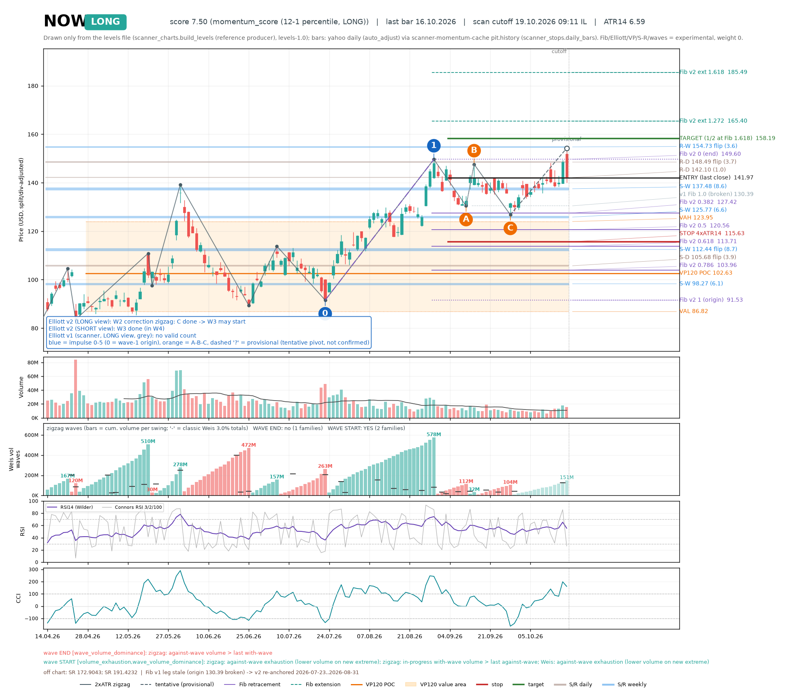
- Jev (typesafe/jev-1.13): 15 כותרות · 0 בביטחון ≥0.8 (סומכים על Jev) · 8 הועברו ל-Claude לשיפוט (ביטחון נמוך או חשד למניפולציה; 0 חשודות, 0 הודעות חברה) · סנטימנט — · קטליזטור — · הסכמה עם Claude 8/8
- Grok (grok-4.3, חיפוש X של Grok): ✅ אישור · סנטימנט +0 · ביטחון low · 2 פוסטים · אין דיונים שליליים ב-X · חשבונות מאומתים: —
- Perplexity (perplexity/sonar-pro): ⚠️ דגל · הדוחות ב-28 באוקטובר נמצאים בתוך כ-15 ימי המסחר הקרובים ולכן העסקה חשופה לאירוע בינארי משמעותי. · קטליזטור: strong (2026-10-28 https://newsroom.servicenow.com/press-releases/details/2026/ServiceNow-to-Announce-Third-Quarter-2026-Financial-Results-on-October-28/default.aspx)
- הקטליזטור המרכזי הוא פרסום תוצאות הרבעון השלישי ב-28 באוקטובר 2026 לאחר סגירת המסחר, אירוע בינארי הקרוב למועד העסקה. במהלך 14 הימים האחרונים פורסמו עדכוני יעדי מחיר חיוביים ממספר אנליסטים, אך לא נמצא מקור לאירוע תאגידי משמעותי נוסף ב-30 הימים הקרובים. · דוח הבא: 2026-10-28 · דגלים: דוחות הרבעון השלישי צפויים ב-28 באוקטובר, ולכן קיימת חשיפת אירוע בינארי במהלך אופק ההחזקה. / לא נמצא במקורות שנבדקו דיווח על ליטיגציה, בעיית חשבונאות, חוב חריג, דילול חריג, קיצוץ תחזית או פעולה רגולטורית מהותית. / היעדים והדירוגים חיוביים, אך קיימת אי-ודאות מהותית סביב אישור התחזית והביצועים בדוח הקרוב.
- Claude, אנליסט (anthropic/claude-sonnet-4.5): ביטחון 45/100 · ניטרלי · סיכון: דוח רבעוני בעוד 8 ימים עם אי-ודאות גבוהה
- תזה: התזה התומכת: תיקון ABC הושלם ליד תמיכה שבועית (137.48), אנליסטים אופטימיים ויעד 158.19 סביר אם הדוח חיובי. התזה המתנגדת: מומנטום חלש, חשיפה גבוהה לדוח בינארי בעוד שבוע, והמניה כבר עלתה 4.7% ב-15 ימים האחרונים. · טכני (מהגרף): המניה נסגרה ב-141.97 מעל ממוצעים נעים (SMA20: 137.92, SMA50: 134.85), אך המומנטום חלש (ציון 7.5, תשואה 12-1 חודשים שלילית -0.23%). הגרף מראה תיקון זיגזג ABC שהושלם (נקודה C) עם פוטנציאל להתחלת גל 3 עולה, אך RSI ניטרלי (55.47) והנפח בירידה.
- GPT, פרקליט השטן (openai/gpt-5.6-sol): ⚠️ דגל · הסיכון הגדול: סיכון בינארי מהדוח בעוד 8 ימי מסחר · הקרבה להתנגדות, המומנטום החלש והדוח הקרוב מחלישים את יחס הסיכוי לסיכון של הרעיון.
- נגד התזה של Claude: התזה נשענת על גל 3 שטרם אושר ועל יעד פיבונאצ'י מהעיגון הישן שסומן כמיושן.
- האם הגרף נראה נכון? (ניסיוני): Grok: n/a · Perplexity: no: הספירה הראשית נראית עקבית עם רצף העלייה והסימון של גל התיקון, ורמות הפיבונאצ'י והתמיכה המרכזיות נראות סבירות בתרשים. · Claude: no: ספירת אליוט ABC נראית סבירה עם נקודת C ליד תמיכה, והעיגון פיבונאצ'י מתאים לתנועה האחרונה · GPT: yes: סיום C אפשרי אך גל 3 אינו מאושר, והיעד מבוסס על Fib v1 מיושן במקום העיגון המחודש. · קלט: grok=img pplx=img claude=img gpt=img
- אתגור הדדי: Claude 45 (neutral) מול GPT flag: מעורב
30. AMAT – שורט · דירוג 5.6
- רמות (קובץ הרמות, נר אחרון 2026-10-16, hash fb586174aba72c36): כניסה 409.29 · סטופ 492.98 (chandelier_close 4.0xATR14, ATR14=20.92) · יעד: אין – ללא יעד קבוע - שנדלייר 4xATR14 על סגירה (כלל מאושר)
- טכני: SMA20 490.37 · SMA50 482.11 · SMA200 438.38 · מומנטום 12-1 0.844 · RSI14 29.2 · CCI20 -165
- ניסיוני (משקל 0): אליוט v2: W2 correction expanded flat: C done -> W3 may start · אליוט v1: no valid count · פיבו v2 563.16→426.13 (1.618=341.45) · VP120 POC 423.35 (VAH 572.05, VAL 412.47) · תמיכה 403.98 · התנגדות 429.82 · סוף גל: 3 משפחות (volume_exhaustion,wave_volume_dominance,momentum_divergence) · תחילת גל: 0 (—)
- דוח: מותר - דוח בעוד 19 ימי מסחר · מקורות: 2026-11-12 (Yahoo calendar); 2026-11-12 (Perplexity (מאושר, עם מקורות))
- סוויפ נזילות (ייחוס בלבד, משקל 0): לא
- ספירלת פיבו – יעדי ייחוס בלבד (משקל 0, לא משנה סטופ/יעד; השורט נשאר עם סטופ נגרר 4×ATR בלי יעד): T1 — (—) · T2 — (—) · מצב: none
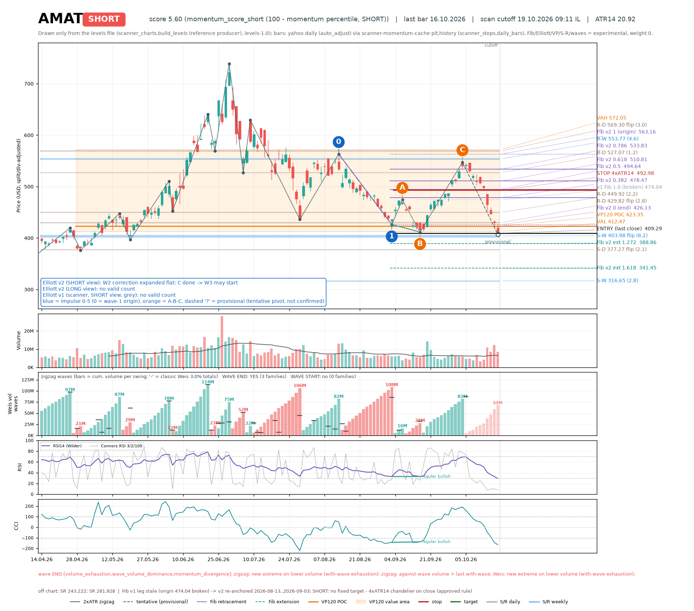
- Jev (typesafe/jev-1.13): 15 כותרות · 1 בביטחון ≥0.8 (סומכים על Jev) · 6 הועברו ל-Claude לשיפוט (ביטחון נמוך או חשד למניפולציה; 0 חשודות, 0 הודעות חברה) · סנטימנט חיובי (+1.00) · קטליזטור analyst · הסכמה עם Claude 3/6
- Grok (grok-4.3, חיפוש X של Grok): ✅ אישור · סנטימנט +0 · ביטחון medium · 9 פוסטים · ירידה חדה ומומנטום שלילי תומכים בשורט · חשבונות מאומתים: @macropaperr, @youngstockuser, @BacklogAlpha, @HFinans45866, @heoilikj
- Perplexity (perplexity/sonar-pro): ⚠️ דגל · הדוח המתוכנן ל-12 בנובמבר 2026 נמצא בתוך כ-15 ימי המסחר הקרובים ומהווה אירוע בינארי משמעותי לשורט. · קטליזטור: strong (2026-11-12 https://ir.appliedmaterials.com/events)
- הדוח הבא מתוכנן ל-12 בנובמבר 2026, ולכן הוא נמצא בתוך אופק ההחזקה של כמה שבועות ומהווה אירוע בינארי קרוב. ב-14 הימים האחרונים נרשמו הורדות יעדי מחיר מצד Needham ו-Evercore, בעוד שהחברה הציגה תחזית רבעונית של 3.820–4.220 דולר למניה; ב-30 הימים הקרובים לא נמצא אירוע חברה מתוארך נוסף במקורות שנבדקו. · דוח הבא: 2026-11-12 · דגלים: דוח רבעוני בינארי קרוב, בתוך אופק עסקת השורט. / הורדות חדות של יעדי מחיר מצד Needham ו-Evercore במהלך 30 הימים האחרונים. / סיכון תמחור: המניה נסחרת במכפיל רווח שדווח כגבוה, והמשקיעים העלו חשש שהתחזית ל-2030 אינה שאפתנית מספיק.
- Claude, אנליסט (anthropic/claude-sonnet-4.5): ביטחון 35/100 · ניטרלי · סיכון: ריבאונד טכני חד מרמת oversold קיצונית עם דיברגנציה bullish על תמיכה שבועית
- תזה: השורט מנצל מומנטום שלילי חזק (ציון 94.4) וסנטימנט חלש לאחר investor day מאכזב, אך הכניסה בדיוק על תמיכה שבועית עם אינדיקטורים ב-oversold קיצוני ודיברגנציה bullish יוצרת סיכון גבוה לסקוויז טכני לפני הדוח. · טכני (מהגרף): המניה סיימה בדיוק על תמיכה שבועית 403.98 לאחר ירידה של 15.6% ב-15 ימים, עם RSI 29.21 ו-CCI -165 המצביעים על oversold קיצוני. הספירה האליוטית מציעה סיום תיקון W2 expanded flat והתחלה אפשרית של גל 3 ירידה, אך הדיברגנציה הבולטת ב-RSI/CCI והתשישות בווליום מסמנות סיכון גבוה לריבאונד טכני חד.
- GPT, פרקליט השטן (openai/gpt-5.6-sol): ⚠️ דגל · הסיכון הגדול: ריבאונד חד מתמיכה במצב מכירות־יתר · המגמה היורדת קיימת, אך הכניסה לאחר מהלך חד ועל תמיכה יוצרת סיכון ממשי לסקוויז.
- נגד התזה של Claude: החלק החלש בתזה הוא ההסתמכות על מומנטום שלילי דווקא כשהמדדים והווליום מאותתים על מיצוי.
- האם הגרף נראה נכון? (ניסיוני): Grok: no: ספירת אליוט ו-Fib תואמות לירידה הנוכחית · Perplexity: no: הספירה, עוגן פיבונאצ׳י ורמות התמיכה/התנגדות נראים עקביים עם הירידה מהשיא האחרון, אך נקודת ה-O מסומנת כפרוביזורית ולכן הביטחון מוגבל. · Claude: no: הספירה האליוטית של W2 expanded flat נראית סבירה, אך הדיברגנציה הבולטה מעלה סימן שאלה אם W3 ירידה תתחיל מיד · GPT: yes: ספירת תחילת גל 3 אינה משכנעת מול שפל פרוביזורי, דיברגנציה שורית ואותות סיום גל, אף שהתמיכה נראית תקפה. · קלט: grok=img pplx=img claude=img gpt=img
- אתגור הדדי: Claude 35 (neutral) מול GPT flag: מעורב
31. TSLA – שורט · דירוג 88.8 · ⛔ נחסם (דוח)
- רמות (קובץ הרמות, נר אחרון 2026-10-16, hash 70663f9b5b5036da): כניסה 354.72 · סטופ 402.11 (chandelier_close 4.0xATR14, ATR14=11.85) · יעד: אין – ללא יעד קבוע - שנדלייר 4xATR14 על סגירה (כלל מאושר)
- טכני: SMA20 370.33 · SMA50 359.46 · SMA200 387.99 · מומנטום 12-1 -0.158 · RSI14 42.2 · CCI20 -95
- ניסיוני (משקל 0): אליוט v2: no valid count · אליוט v1: no valid count · פיבו v2 432.86→297.38 (1.618=213.65) · VP120 POC 380.07 (VAH 425.32, VAL 350.43) · תמיכה 352.58 · התנגדות 366.26 · סוף גל: 2 משפחות (volume_exhaustion,wave_volume_dominance) · תחילת גל: 1 (volume_exhaustion)
- דוח: נחסם - דוח בתוך 5 ימי מסחר · מקורות: 2026-10-21 (Yahoo calendar); 2026-10-21 (Perplexity (מאושר, עם מקורות))
- סוויפ נזילות (ייחוס בלבד, משקל 0): לא
- ספירלת פיבו – יעדי ייחוס בלבד (משקל 0, לא משנה סטופ/יעד; השורט נשאר עם סטופ נגרר 4×ATR בלי יעד): T1 — (—) · T2 — (—) · מצב: waiting
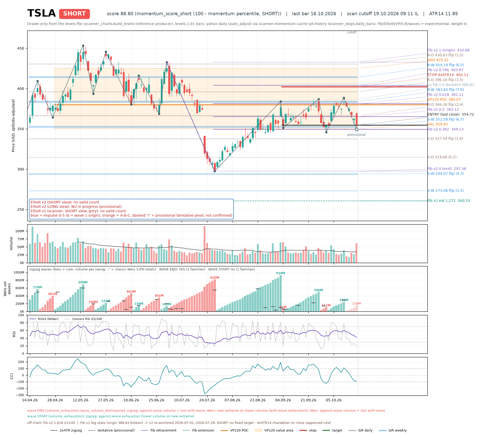
- Jev (typesafe/jev-1.13): 15 כותרות · 0 בביטחון ≥0.8 (סומכים על Jev) · 8 הועברו ל-Claude לשיפוט (ביטחון נמוך או חשד למניפולציה; 0 חשודות, 0 הודעות חברה) · סנטימנט — · קטליזטור — · הסכמה עם Claude 6/8
- Grok (grok-4.3, חיפוש X של Grok): ✅ אישור · סנטימנט +0 · ביטחון medium · 10 פוסטים · סנטימנט ניטרלי-חיובי ללא חדשות נגד SHORT · חשבונות מאומתים: @sebaonwheels, @sebaonwheels, @sebaonwheels
- Perplexity (perplexity/sonar-pro): ⚠️ דגל · הדוחות ב-21 באוקטובר נמצאים בתוך חלון המסחר הקרוב ומהווים אירוע בינארי משמעותי לשורט. · קטליזטור: strong (2026-10-21 https://ir.tesla.com/press)
- הדוח לרבעון השלישי צפוי להתפרסם ב-21 באוקטובר לאחר סגירת המסחר, ולכן הוא אירוע בינארי קרוב מאוד לפוזיציית שורט. מסירות טובות מהצפוי, הרחבת צי הרובוטקסי באוסטין והצגת Cybercab בפריז עשויות לתמוך במניה, אך הוצאות גבוהות, לחץ על המרווחים והכוונה עתידית יהיו מוקדי סיכון. · דוח הבא: 2026-10-21 · דגלים: מכפיל רווח גבוה מאוד ורגישות משמעותית לאכזבה ברווחים או בהכוונה. / תוכניות הוצאה של כ-25 מיליארד דולר ועלויות תפעול עולות. / לחץ רגולטורי על הרובוטקסי ותחרות גוברת, לצד ביקוש חלש ל-Cybertruck.
- Claude, אנליסט (anthropic/claude-sonnet-4.5): ביטחון 15/100 · מתנגד · סיכון: דוח רבעוני בינארי בתוך 3 ימים - הסטאפ חסום רשמית
- תזה: הסטאפ חסום רשמית עקב דוח רבעוני בתוך 3 ימים - סיכון בינארי גבוה מדי. מבחינה טכנית יש חולשה, אך שוק האופציות מתמחר קפיצה ל-370 דולר לאחר הדוח, והאנליסטים העלו יעדים לאחרונה. · טכני (מהגרף): המניה נסחרת מתחת לכל הממוצעים הנעים (SMA20/50/200), מומנטום חלש (ציון 11.2), RSI 42.2 ו-CCI שלילי. נפח התשישות בסיום הגל האחרון ואאוטסייד-בר בסגירה האחרונה מצביעים על חולשה פוטנציאלית.
- GPT, פרקליט השטן (openai/gpt-5.6-sol): ⛔ וטו · הסיכון הגדול: זינוק חד בעקבות הדוח הקרוב · החסימה הרשמית לפני הדוח, התמיכה הקרובה וסימני התשישות סותרים כניסת שורט כעת.
- נגד התזה של Claude: הדגש על תמחור יקר וחולשה עסקית אינו מספק יתרון תזמון לשורט סמוך לתמיכה ולדוח בינארי.
- האם הגרף נראה נכון? (ניסיוני): Grok: no: ספירת SHORT ללא count תקף אך תואמת מגמה יורדת · Perplexity: yes · Claude: n/a: אין ספירת אליוט תקפה מסומנת בגרף, רק פיבונאצ'י ורמות תמיכה/התנגדות · GPT: no: אין ספירת אליוט תקפה, ועיגון הפיבונאצ'י ורמות התמיכה וההתנגדות תואמים חזותית לצירים המרכזיים. · קלט: grok=img pplx=img claude=img gpt=img
- אתגור הדדי: Claude 15 (opposes) מול GPT veto: הסכמה שלילית: Claude חלש, GPT וטו
32. TXN – לונג · דירוג 83.2 · ⛔ נחסם (דוח)
- רמות (קובץ הרמות, נר אחרון 2026-10-16, hash 0a40a9364ff5e4fb): כניסה 276.48 · סטופ 242.38 (chandelier_close 4.0xATR14, ATR14=8.5259) · יעד: 330.03 – חצי ב-Fib 1.618 (סגירה), השאר בשנדלייר 4xATR
- טכני: SMA20 281.89 · SMA50 272.30 · SMA200 252.79 · מומנטום 12-1 0.511 · RSI14 47.6 · CCI20 -30
- ניסיוני (משקל 0): אליוט v2: W2 in progress (provisional) · אליוט v1: no valid count · פיבו v2 248.13→298.75 (1.618=330.03) · VP120 POC 280.97 (VAH 308.75, VAL 270.02) · תמיכה 274.00 · התנגדות 287.95 · סוף גל: 0 משפחות (—) · תחילת גל: 1 (volume_exhaustion)
- דוח: נחסם - דוח בתוך 5 ימי מסחר · מקורות: 2026-10-21 (Yahoo calendar); 2026-10-21 (Perplexity (מאושר, עם מקורות))
- סוויפ נזילות (ייחוס בלבד, משקל 0): לא · עבר בדיקה, שביר, משקל 0
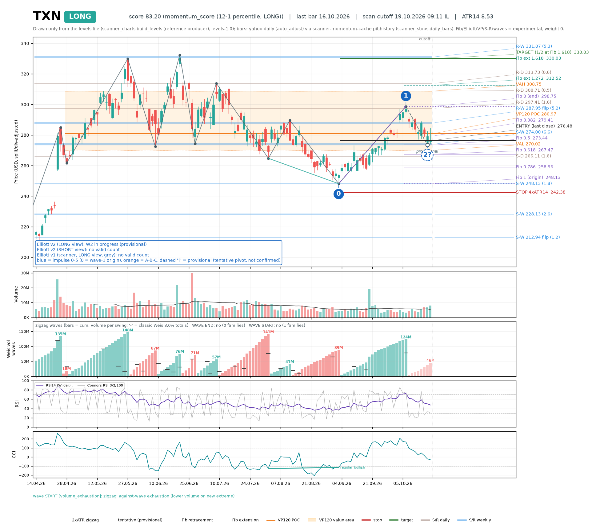
- Jev (typesafe/jev-1.13): 3 כותרות · 0 בביטחון ≥0.8 (סומכים על Jev) · 1 הועברו ל-Claude לשיפוט (ביטחון נמוך או חשד למניפולציה; 0 חשודות, 0 הודעות חברה) · סנטימנט — · קטליזטור — · הסכמה עם Claude 1/1
- Grok (grok-4.3, חיפוש X של Grok): ✅ אישור · סנטימנט +0 · ביטחון low · 9 פוסטים · אין חדשות שליליות ב-X נגד ה-LONG · חשבונות מאומתים: —
- Perplexity (perplexity/sonar-pro): ⚠️ דגל · הדוח המתוכנן ל-21 באוקטובר חל בתוך כ-15 ימי המסחר הקרובים, ולכן יש לסמן את העסקה בשל סיכון אירוע בינארי. · קטליזטור: strong (2026-10-21 https://investor.ti.com/node/38586/pdf)
- הדוח לרבעון השלישי ושיחת הוועידה מתוכננים ל-21 באוקטובר, בתוך חלון ההחזקה, ולכן זהו אירוע בינארי קרוב. החברה השיקה שבבי ניהול הספק וטלמטריה למרכזי נתונים של AI, והעלאת תחזית ה-EPS של KeyCorp מוסיפה תמיכה חיובית, אך אינה שינוי תחזית רשמי של החברה. · דוח הבא: 2026-10-21 · דגלים: הדוח הקרוב מתפרסם בתוך כ-15 ימי מסחר, ולכן קיים סיכון בינארי משמעותי לעסקת LONG. / תחזית החברה לרבעון השלישי היא EPS של 2.23–2.57 והכנסות של 5.65–6.15 מיליארד דולר; כל החמצה או קיצוץ בתחזית עלולים ללחוץ על המניה. / נכון למקורות שנבדקו לא זוהה דגל אדום מאומת נוסף בתחום חשבונאות, ליטיגציה, דילול, חוב או רגולציה.
- Claude, אנליסט (anthropic/claude-sonnet-4.5): ביטחון 25/100 · מתנגד · סיכון: דוח רווחים בעוד 3 ימים - סיכון בינארי קריטי
- תזה: הסטאפ מנסה לתפוס גל 3 אליוטי לכיוון 330, אך הכניסה ממוקמת 3 ימים לפני דוח רווחים - חשיפה בינארית גבוהה מאוד. המומנטום הטכני חלש (RSI 47.56, תשואה שלילית ב-15 ימים) והספקולציה על גל 2 פרובזיונלי אינה מאושרת, מה שהופך את הסיכון/תגמול לבלתי אטרקטיבי. · טכני (מהגרף): המניה נסחרת מתחת ל-SMA20 (281.89) אך מעל ל-SMA50 (272.30) ו-SMA200 (252.79), עם RSI נייטרלי (47.56) ו-CCI שלילי קל (-30.33). הכניסה ב-276.48 קרובה ל-POC (280.97) ומעל תמיכה שבועית (274.00), אך המומנטום האחרון חלש (ירידה של 0.57% ב-15 ימים) והנר האחרון הוא דוג'י המעיד על חוסר החלטיות.
- GPT, פרקליט השטן (openai/gpt-5.6-sol): ⛔ וטו · הסיכון הגדול: דוח רווחים בינארי בעוד 3 ימי מסחר · חסימת הדוח, היעדר אישור לגל והיחלשות המומנטום סותרים כניסת LONG כעת.
- נגד התזה של Claude: החולשה בתזה היא הישענות חלקית על יסודות חזקים, שאינם מבטלים תמחור יקר וסיכון דוח מיידי.
- האם הגרף נראה נכון? (ניסיוני): Grok: n/a: אין דיון בגרף או Elliott/Fib ב-X · Perplexity: no: הספירה, עוגן הפיבונאצ׳י ורמות התמיכה וההתנגדות נראים סבירים ביחס לפיבוטים ולמבנה המחיר המוצגים, אף שספירת Elliott מסומנת כפרוביזורית. · Claude: yes: ספירת W2 פרובזיונלית אינה משכנעת - המחיר יכול להמשיך לתקן מתחת ל-Fib 0.618 (267.47) לפני כל עלייה, והכניסה מוקדמת מדי · GPT: yes: סימון גל 2 אינו מאושר, בעוד עוגן הפיבונאצ'י וה-S/R סבירים אך אינם מאמתים גל 3. · קלט: grok=img pplx=img claude=img gpt=img
- אתגור הדדי: Claude 25 (opposes) מול GPT veto: הסכמה שלילית: Claude חלש, GPT וטו
33. TMO – לונג · דירוג 63.6 · ⛔ נחסם (דוח)
- רמות (קובץ הרמות, נר אחרון 2026-10-16, hash ee6e22d5f4252ee1): כניסה 690.00 · סטופ 614.73 (chandelier_close 4.0xATR14, ATR14=18.82) · יעד: 722.94 – חצי ב-Fib 1.618 (סגירה), השאר בשנדלייר 4xATR
- טכני: SMA20 668.35 · SMA50 636.45 · SMA200 546.54 · מומנטום 12-1 0.252 · RSI14 64.0 · CCI20 172
- ניסיוני (משקל 0): אליוט v2: post-W5 correction flat: B in progress (provisional) · אליוט v1: no valid count · פיבו v2 594.36→683.63 (1.618=738.80) · VP120 POC 469.54 (VAH 612.37, VAL 434.50) · תמיכה 683.30 · התנגדות 694.33 · סוף גל: 3 משפחות (volume_exhaustion,wave_volume_dominance,momentum_divergence) · תחילת גל: 2 (volume_exhaustion,wave_volume_dominance)
- דוח: נחסם - דוח בתוך 5 ימי מסחר · מקורות: 2026-10-21 (Yahoo calendar); 2026-10-21 (Perplexity (מאושר, עם מקורות))
- סוויפ נזילות (ייחוס בלבד, משקל 0): כן (שורט, רמה 694.33 pivot) · עבר בדיקה, שביר, משקל 0
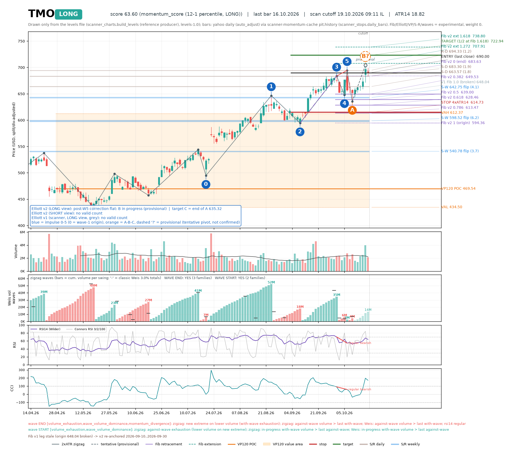
- Jev (typesafe/jev-1.13): 6 כותרות · 0 בביטחון ≥0.8 (סומכים על Jev) · 2 הועברו ל-Claude לשיפוט (ביטחון נמוך או חשד למניפולציה; 0 חשודות, 0 הודעות חברה) · סנטימנט — · קטליזטור — · הסכמה עם Claude 2/2
- Grok (grok-4.3, חיפוש X של Grok): ✅ אישור · סנטימנט +0 · ביטחון low · 1 פוסטים · אין דעות שליליות ב-X · חשבונות מאומתים: —
- Perplexity (perplexity/sonar-pro): ⚠️ דגל · הדוחות מתפרסמים ב-21 באוקטובר, בתוך כ-15 ימי המסחר הקרובים, ולכן קיימת חשיפה לאירוע בינארי עבור כניסה לונג כעת.[8][9] · קטליזטור: strong (2026-10-21 https://ir.thermofisher.com/investors/news-events/news/news-details/2026/Thermo-Fisher-Scientific-to-Hold-Earnings-Conference-Call-on-Wednesday-October-21-2026/default.aspx)
- הקטליזטור המרכזי הוא פרסום תוצאות הרבעון השלישי לפני פתיחת המסחר ב-21 באוקטובר, ואחריו שיחת ועידה בשעה 7:00 ET.[8][9] במהלך 14 הימים האחרונים פורסמו העלאות יעדי מחיר וסקירות חיוביות, אך לא נמצא אירוע חברה חתום או אישור רגולטורי משמעותי ב-30 הימים הקרובים.[1][3] · דוח הבא: 2026-10-21 · דגלים: דוחות הרבעון השלישי מתפרסמים בתוך חלון ההחזקה הקרוב, ולכן קיימת אי-ודאות בינארית משמעותית.[8][9] / יעד הקונצנזוס שדווח, 642.33, נמוך ממחיר הפתיחה שדווח, 663.46.[2] / החברה דיווחה על התחייבויות קצרות וחלויות שוטפות של חוב ארוך-טווח בסך 3.09 מיליארד דולר; קיימות גם תביעות בנושאי אחריות מוצר, קניין רוחני, תעסוקה ומסחר, אף שלא נרשמו הפרשות מהותיות לתביעות תלויות.[14]
- Claude, אנליסט (anthropic/claude-sonnet-4.5): ביטחון 25/100 · מתנגד · סיכון: דוח רווחים בתוך 3 ימי מסחר יוצר חשיפה בינארית חריפה
- תזה: הסטאפ מנסה לתפוס המשך מומנטום לפני דוח רווחים, אך הטיימינג בעייתי - הכניסה 3 ימים לפני אירוע בינארי משמעותי. הטכני מראה סימני תשישות בקודקוד האחרון ויעד הקונצנזוס 642 נמוך ממחיר הכניסה, מה שמעלה סימני שאלה על הפוטנציאל. · טכני (מהגרף): המניה סגרה בדיוק על רמת הכניסה 690 לאחר תיקון מגל 3 (694.33), עם דפוסי נרות חלשים (spinning top, inside bar) ואינדיקטורים מעורבים - RSI 64 תומך אך CCI 172 מצביע על קנייה מוגזמת. הגרף מראה סימני תשישות נפח ודיברגנציות מומנטום שליליות בקודקוד האחרון, והמניה נמצאת מעל כל ממוצעי התנועה אך בתוך אזור ה-VA של VP120.
- GPT, פרקליט השטן (openai/gpt-5.6-sol): ⛔ וטו · הסיכון הגדול: פער שלילי בעקבות הדוח הקרוב · חסימת הדוחות, סימני התשישות וההתנגדות הקרובה סותרים כניסת מומנטום אמינה.
- נגד התזה של Claude: החולשה בניתוח היא הטענה שהמניה בתוך אזור הערך, בעוד שהנתונים מסווגים אותה מעליו.
- האם הגרף נראה נכון? (ניסיוני): Grok: n/a: null · Perplexity: no · Claude: no: ספירת האליוט v2 (תיקון שטוח B בתהליך) והעיגון מחדש של הפיבונאצ'י נראים סבירים על הגרף · GPT: yes: ספירת אליוט זמנית, עוגן Fib אחד מיושן והעיגון מחדש נותנים יעדים שונים, ולכן המבנה המצויר אינו מבוסס דיו. · קלט: grok=img pplx=img claude=img gpt=img
- אתגור הדדי: Claude 25 (opposes) מול GPT veto: הסכמה שלילית: Claude חלש, GPT וטו
9. סטטיסטיקת כלים (tool_stats, משקל 0)
אמינות המודלים באזהרות על שורטים (v3-shortveto-cred (2026-10-16))
| מודל |
אזהרות שנמדדו |
צדקו |
שיעור מכווץ |
משקל |
קנס לאזהרה |
רמות שנספרות |
% שורטים עם אזהרה |
| gpt |
2 |
2 |
0.531 |
0.062 |
-0.62 |
strong |
1.0 |
| grok |
1 |
1 |
0.516 |
0.032 |
-0.32 |
strong,weak |
0.15 |
| pplx |
0 |
0 |
0.500 |
0.000 |
-0.00 |
strong |
0.9 |
| claude |
0 |
0 |
0.500 |
0.000 |
-0.00 |
strong,weak |
0.35 |
| jev |
2 |
2 |
0.531 |
0.062 |
-0.62 |
strong,weak |
0.2 |
כלים ניסיוניים (משקל 0) — סטטיסטיקה קדימה מ-12.10.2026
מדד עיקרי: תשואה עודפת ביום 20 מול SPY (מניות) / BTC (קריפטו), מותאמת כיוון. כלל: 15 תוצאות = בדיקת ביניים, 30 = החלטה (ולפחות 5 ימי כניסה שונים). FDR (BH, q<0.10) על כל הכלים יחד, רק בדיקות עם 20+ תוצאות בכל צד. קביעות מודלים (Grok, Perplexity, Claude, GPT, Jev) נמדדות רק מ-12.10. שורות במעקב: 11.
| כלי |
עמודות נבדקות |
שורות מתועדות |
תוצאות מסומנות (מקס׳) |
ימי כניסה |
הבדיקה החזקה |
הפרש עודף (נק׳ %) [95% CI] |
q |
סטטוס |
| claude |
2 |
11 |
0 |
0 |
llm_claude_conviction >= median (45) (stock LONG) |
— |
— |
איסוף (0/15) |
| gpt |
2 |
11 |
0 |
0 |
llm_gpt_flag_or_veto == True (ALL) |
— |
— |
איסוף (0/15) |
| grok |
3 |
11 |
0 |
0 |
llm_grok_approve == True (ALL) |
— |
— |
איסוף (0/15) |
| jev |
1 |
4 |
0 |
0 |
llm_jev_sentiment sign agrees with direction (ALL) |
— |
— |
איסוף (0/15) |
| pplx |
2 |
11 |
0 |
0 |
llm_pplx_approve == True (ALL) |
— |
— |
איסוף (0/15) |
בדיקות מובילות (לפי p, עד 15):
| עמודה |
בדיקה |
מקטע |
מסומן/לא |
הצלחה |
ממוצע עודף מסומן |
חציון |
הפרש [CI] |
p |
q |
מתאם למומנטום |
סטטוס |
|
|
|
|
|
|
|
|
|
|
|
|
שורדי FDR: 0 מתוך 0 בדיקות שעמדו בסף. אף כלי לא עבר את הסף — כולם נשארים במשקל 0.
10. עלויות ותקינות
- עלות המודלים בריצה: $4.801 מתוך תקרה $8.00. פירוט ב-
platform_costs.json.
- ממוצע למועמד: כ-$0.145 (Grok 0.056, Perplexity 0.027, Jev 0.0003, Claude 0.027, GPT 0.035) · הערכה שבועית: כ-$5.24.
- Grok: 33 מתוך 33 הצליחו
- Perplexity: 33 מתוך 33 הצליחו
- Claude: 33 מתוך 33 הצליחו
- GPT: 33 מתוך 33 הצליחו
- עמודות מחקר (research_columns): {"talib": {"ok": 124, "failed": 0, "errors": {}, "sec_mean": 0.013, "sec_total": 1.6}, "pta": {"ok": 124, "failed": 0, "errors": {}, "sec_mean": 0.07, "sec_total": 8.7}, "smc": {"ok": 124, "failed": 0
- קבצים:
candidates_full.csv, levels/, charts/ + chart_index.json, tracker_rows.csv, reconciliation.json, platform_enrichment.csv, platform_raw.json, research_columns.csv.